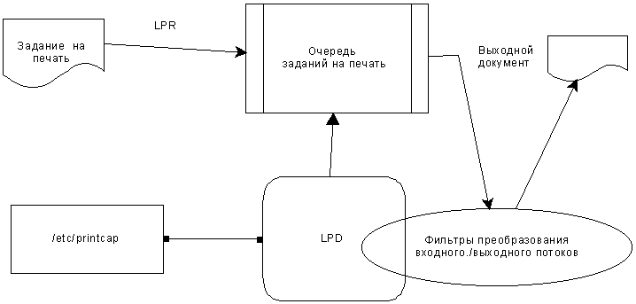

В. Водолазкий
Путь к LINUX
(Руководство по установке и настройке 32-разрядной операционной системы)
Москва 1996 г.
╘ В.Водолазкий, 1997, Москва
СОДЕРЖАНИЕ
Введение
Посыпая голову пеплом...
Начальные сведения о Linux
Каковы требования к аппаратным средствам?
Где достать Linux?
Графический интерфейс пользователя
Что делать с программами под DOS?
Источники информации о Linux
Выбор операционной системы
Критерии оценки
Есть ли разница между системами?
Базис
За все приходится платить...
Кто румяней и белее...
Насколько все же годится Linux?
Установка LINUX
Загрузка дистрибутива Slackware
Какие диски выбрать для начальной загрузки?
Создаем разделы на диске
Первоначальная установка системы
Компиляция ядра операционной системы
Активизация скомпилированного ядра
Проверяем работоспособность ядра
Установка начального загрузчика
Трудоемкий и убедительный эксперимент
Монтирование файловых систем
Установка дистрибутива Red Hat
Общая структура дистрибутива
Требования к аппаратным средствам
Выбор ядра системы
Распаковка образов загрузочных дискет
Загрузка базовой системы
Начальная стадия установки
Монтирование установочного диска
Выбор интерфейса: текстовый или X-Window
Обновление предыдущей версии Red Hat Linux
Установка дистрибутива Linuxware
Установка дистрибутива Debian
Установка дистрибутива Yggdrasil Plug-and-Play
Установка графической оболочки X-Window
Тонкость N1 - X-сервер
Тонкость N2 - конфигурирование системы.
Тонкость N3 - запуск X-windows.
Тонкость N4 но не последняя - русификация.
Загрузка и разгрузка операционной системы
Процесс загрузки системы
Разгрузка операционной системы
Демоны и фоновые процессы
Более подробно о загрузчиках системы
LILO ≈ Linux Loader
LOADLIN
Права доступа и регистрация в системе
Регистрация в системе
Права доступа к файлам в системе UNIX
Кто варежку потерял?
Группы и пользователи
Пароли и профили пользователей
Несколько полезных советов
Как добавить пользователя?
Как создать группу?
Обязательно ли нужно грузить одну из оболочек?
Как запретить регистрацию пользователя в системе, не изгоняя его из списков пользователей?
Как создать "гостевой вход" в систему, не требующий ввода пароля?
"Ежовые рукавицы" или "свободная любовь"?
1. Выбор пароля.
2. О сохранности пароля
3. Файлы и каталоги
4. Особые файлы пользовательского каталога
5. Физическая безопасность
6. Предоставление счета в распоряжение третьих лиц
Системные средства обеспечения безопасности системы
⌠Теневые пароли■
Противопоказания
Формат файла /etc/passwd при использовании теневых паролей
Формат файла /etc/shadow
Пересмотр системного вызова crypt(3)
Что такое Shadow Suite?.
Установка программ
Настоятельная рекомендация
Запуск pwconv
Как теперь этим пользоваться?
Добавление пользователей: useradd
Модификация пользователей: usermod
Изгнание пользователей: userdel
Команда passwd и старение пароля
Пароли группового доступа
Проверка целостности парольной системы
pwck
grpck
Пароли входных соединений
Использование теневых паролей в программах на Си
Файлы заголовков
Библиотека libshadow.a
Структуры данных
Функции обслуживания теневых паролей
Пример
npasswd ≈ генератор надежных паролей
Программа поиска уязвимых мест в защите ≈ CRACK
Шайтан-арба ≈ программа проверки целостности системы защиты SATAN
Подключение принтера
Первое подключение устройства печати
Поддержка принтера в ядре Linux
Драйвер печати в ядре системы
Корректировка настроек принтера ≈ tunelp
Системное управление принтером
lpd
lpq
lprm
lpc
lpr ≈ стандартная пограмма печати
/etc/printcap ≈ конфигурирование принтера
Фильтры печати
Борьба с ⌠лесенкой■
apsfilter ≈ автоматический распознаватель типа входного файла
Настройка apsfilter
Проверка содержимого /etc/printcap
Печать различных типов файлов
Подключение кириллических шрифтов Postsript
Какой принтер лучше?
Матричные принтеры
Струйные принтеры
Лазерные принтеры
Установка звуковой платы
Подключение стримеров с FDD-интерфейсом
Стримеры, которые не будут работать в Linux-системе
Установка программного обеспечения FTAPE
Тестирование работоспособности стримера
Подготовка магнитной ленты стримера к работе
Форматирование
Инициализация
Создание и проверка тестового архива
Программное обеспечение для архивации
tar
mt
Практические приемы работы со стримером
Организация автоматической архивации в фоновом режиме
Стратегия архивации
Установка и работа с UPS
Подключение факс-модема
Эмулятор DOS
Эмулятор Windows
Эмулятор SCO UNIX
Устанавливаем собственную BBS
Распаковка архива с компакт-диска
Создание пользовательских счетов
Настройка пользовательских экранов
Подключение протоколов передачи файлов
Объединение в локальную сеть
Контроллеры Ethernet ≈ что выбрать?
TCP/IP
Гетерогенные сети ≈ Windows-Linux
Вход в Internet
Краткий путеводитель по CD-ROM с Linux
Диски Trans-Ameritech Enterprises
Volume 1
Volume 2
Supplement
Interim Release
Release 4
Linuxware 1.0
LinuxWare 2.0
LinuxWare 2.5
Компакт-диски фирмы Caldera
Caldera Desktop 1.0
Linux Office
Компакт-диски в книгах издательства SAMS Publishing
CD-ROM к книге Linux Unleashed
CD-ROM к книге Building Linux Internet Server
Компакт-диски отечественных производителей
⌠Открытое ядро■
Подводя итоги
Поистине неисповедимы пути, которыми следует отечественная мода на операционные системы. Еще несколько лет назад в России активно развивались многозадачные и многопользовательские операционные системы, но вот, словно по мановению волшебной палочки их место, где оправдано, а где и не слишком, заняла MS-DOS. И хотя сегодня все возвращается на свои места, выясняется, что за эти годы мы потеряли слишком много ≈ мы потеряли культуру многозадачных операционных систем, и поэтому найти сегодня специаиста по UNIX, пусть даже пользователя, несоизмеримо труднее, чем пользователя MS-DOS и Windows. И если в американском оригинале приводился краткий курс начинающего пользователя MS-DOS, то мы решили, что для российского читателя более полезным окажется набор рекомендаций, позволяющих самостоятельно установить одну из версий UNIX, предназначенную для персонального компьютера с процессором 80386 и выше.
На сегодняшний день существует несколько подобных реализаций UNIX. Однако, мы сознательно отказались от продвижения одной из коммерческих систем в пользу "бесплатного UNIXа" ≈ Linux. Причина такого решения ≈ желание снизить барьер вхождения в работу с UNIX для широких кругов читателей, которые, прежде чем вкладывать довольно существенные средства в коммерческую версию UNIX, хотели бы приобрести некоторый практическмй опыт в установке и эксплуатации подобных систем. Кроме того, многочисленные беседы автора с пользователями и администраторами различных фирм и системными интеграторами Москвы позволили сделать ряд небезынтересных замечаний:
Мой выбор, в конце концов остановился на системе LINUX, которая в настоящий момент наиболее доступна для новичков. Во-первых, ее можно найти на FTP-серверах Internet, в том числе и на московских узлах RELCOM и ДЕМОС, а во-вторых, бурная деятельность российского отделенния американской компании Trans-Ameritech Enterprises привела к тому, что сегодня компакт-диски с различными версиями этой системы можно найти в любом книжном магазине Москвы, Петербурга и некоторых других городов. Появлились в России дистрибьюторы и других поставщиков Linux и даже выпущен первый россйский компакт-диск с дистрибутивами Linux. Кроме того, имеется возможность переноса дистрибутива операционной системы с CD-ROM на трехдюймовые дискеты емкостью 1.44 Мбайт.
НПО ⌠Инфосервис■, оказавшее мне существенную помощь в подготовке данного издания является, на сегодняшний день единственным в Москве поставщиком, который не только декларирует совместимость своих изделий с Linux, но и поставляет Linux-системы, в том числе и многопроцессорные, под ключ. Именно на компьютере, поставленном этой фирмой мне удалось проверить многие вопросы, связанные с конфигурированием и настройкой системы и подключить Linux-сервер в локальную, а затем и в распределенную сеть. За что приношу коллективу ⌠Инфосервиса■ свою глубокую благодарность!
Хочется, конечно же, прослыть всеведущим гуру, для которого никаких проблем в Linux не существует. Но надо все же смотреть правде в глаза ≈ чем дальше разбираешься, тем более становится очевидным, как мало знаешь! Все-таки система, построенная на основе ОС UNIX с четвертьвековым стажем, которую собирает и отлаживает несколько тысяч человек по всей планете (не секрет, что на сегодняшний день Linux считается единственным примером столь масштабного и плодотворного сотрудничества специалистов всего мира, объединенных сетью Internet), содержит столько особенностей и интересных моментов, что на их изучение уйдут годы.
Поэтому автор, рядясь в тогу скромника должен заявить, что в некоторой части приведенный здесь материал является результатом ⌠толкования■ информации, приведенной в многочисленных справочных материалах по Linux. Тем не менее, автор полагает, что попытка создания достаточно подробного руководства по установке и настройке системы Linux должна была быть предпринята. Насколько это удалось, предстоит судить вам.
Я с благодарностью приму все ваши замечания и пожелания, направленные на выявление слабых и пропущенных мест и тем.
Кандидат технических наук
В.В.Водолазкий
vvv@rinet.ru
Это версия UNIX для процессоров 80386 и 80486. Linux в полной мере реализует все возможности процессоров, предоставляя программисту полностью 32-разрядную многозадачную и многопользовательскую систему, функционирующую в защищенном режиме. Система соответствует стандарту POSIX, что позволяет говорить о переносе программного обеспечения, разработанного для Linux, на другие версии UNIX и обратно как о более или менее рутинной задаче.
Каковы требования к аппаратным средствам?
Ничего сверхъестественного. Достаточно иметь 386SX-25 и 4 Мб оперативной памяти, но увеличение ОЗУ до 8 Мб значительно повысит производительность вашей системы. Шина особой роли не играет, Linux поддерживает как ISA, EISA, VLB и PCI, но игнорирует MCA (серия PS/2 фирмы IBM), которая у нас, впрочем, не очень-то распространена. Вовсе не обязательно использование процессоров фирмы "Intel" ≈ клоны производства фирм AMD, "Cirrus Logic", TI и так далее никаких нареканий не вызывают. Реальная потребность в дисковой памяти - от 80 Мб (вам ведь нужна не только сама система, но и прикладные пакеты, не так ли?). Для запуска большинства программ этого хватит (для удовлетворения потребностей программ в оперативной памяти вы всегда можете создать раздел для подкачки на диске).
Полная раскрутка дистрибутива системы с оптического диска может потребовать более 200 Мб дисковой памяти, но, скорее всего, вся система и пакеты вам вряд ли понадобятся. Да, о дисках. Годится любой одно- или двухскоростной накопитель CD-ROM, но имеет смысл приобретать современные модели приводов с интерфейсом IDE.
Видеоадаптер - лучше SVGA с объемом видеопамяти хотя бы 1 Мб. Поддерживается работа со всеми распространенными наборами кристаллов видеоадаптеров. Критерий выбора прост ≈ чем больше видеопамяти, тем быстрее будет работать система в среде X Window.
Сети, как вы, вероятно, понимаете, ≈ это неотъемлемая часть современной концепции UNIX-систем. И Linux поддерживает образование сетей на уровне ядра системы. Сетевые адаптеры могут быть самые разные: Ethernet для создания локальной сети (и никаких сетей Novell!), телефонный модем для интеграции в сеть Internet и, в конце концов, обычный мультиплексор на восемь или шестнадцать терминалов. И снова-таки повторим, весь этот сервис входит в стандартный дистрибутив Linux со всеми исходными текстами, библиотеками и сопроводительной документацией.
Еще летом 1994 года Linux привлекла внимание нескольких фирм-производителей дисков CD-ROM. Но, кроме того, этой системой заинтересовались некоторые фирмы-интеграторы. В результате уже упоминавшаяся компания Trans-Ameritech Enterprises, (тел. (095)434-9740) наладила регулярный выпуск CD-ROM с дистрибутивами Linux и прикладными программами для этой операционной системы. Подобные диски выпускает еще около десятка фирм, наиболее известными из котороых являются Yggdrasil и InfoMagic, но в России распространены только диски Trans-Ameritech. В последний год питерская фирма Kronverk (тел. (812) ) заключила дистрибьютерсикй договор на поставку в Россию полукоммерческой версии Linux ≈ Caldera Desktop. А другая питерская фирма UrbanSoft (тел. (812) ) весной 1996 года выпустила CD-ROM ⌠Открытое ядро■, который также заслуживает внимания.
З аглядывайте также в книжные магазины. Бум Linux на Западе привел к появлению нескольких книг, в состав которых включен CD-ROM с операционной системой. Особо отметим достаточно подробную 1000-страничную книгу LINUX UNLEASHED, выпущенную в 1996 году издательством Sams Publishing, Building your own Linux Internet Server (тоже 1996 год) и Linux System Administrator▓s Survivals Guide (тоже Sams Publishing, 1996). При этом стоит заметить, что эти книги вышли одновременно с аналогичными руководствами по NT, Netware, OS/2. Стало быть ⌠там■ возможности Linux и его сферы применения стали уже понятны...
Принципиально ничего не мешает поставлять Linux и на дискетах. Однако если подобный подход хорош для коммерческих систем ≈ возьмите хотя бы фирменный пакетик с Windows95 за 170 долларов без документации по работе с системой за которое необхадимо доплатить еще долларов 20, то для бесплатной системы стоимость 3.5■ дисков, на которых записан весь дистрибутив оказывается выше стоимости 4-хскоростного привода CD-ROM и компакт-диска с системой! Поэтому особого распространения подобный подход не получил. Впрочем, если у вас есть желание, НПО ⌠Инфосервис■ может помочь с получением обоих вариантов системы.
Кроме того, что оказалось неожиданным и приятным, НПО ⌠Инфосервис■ (тел. (095)939-5390, 939-1729) удалось наладить достаточно устойчивые связи с западными поставщиками Linux и вы всегда можете заказать последнюю версию Linux Developer Kit (10 CD-ROM), InfoMagic Toolkit (6 CD-ROM) и даже потребовать Yggdrasil Linux Bible. Хотя я надеюсь, что эта книга для отечественных пользователей также окажется достаточно полезной.
Еще один потенциально возможный способ установки Linux ≈ с магнитной ленты, похоже, не получит распространения поскольку форматы лент, используемых в DOS и UNIX существенно различаются. Но о работе со стриммерами будет более подробно рассказано ниже.
Графический интерфейс пользователя
X Window - это стандарт для графического пользовательского интерфейса, реализованный для всех UNIX-систем. Это означает, что программы, разработанные для XFree386 (версия X Window в Linux) без каких-либо особенных трудностей могут быть перенесены на SUN, VAX и даже на Cray.
Для XFree уже разработаны десятки приложений, а также конвертированы из MS Windows шрифты кириллицы. Впрочем, все это программное обеспечение поставляется практически на всех дисках и позже будет рассмотрено подробнее.
Что делать с программами под DOS?
Прежде всего, разработчики LINUX не задумывали свою систему как конкурента MS-DOS, а скорее как дополнение к традиционной системе, для которой разработано огромное количество программного обеспечения.
Поэтому DOS и Linux могут сосуществовать на одном винчестере, "проживая" в различных разделах (partition) жесткого диска. Вы можете по своему выбору, загружать либо DOS либо LINUX. Однако бедняга MS-DOS не может укрыться от любопытных глаз своего соседа, поскольку Linux имеет доступ ко всем файлам в разделе DOS.
Для чего это сделано? Для запуска программ MS-DOS под управлением Linux! Причем сохраняется многозадачный режим работы. Это означает, что вы можете запустить одновременно F-19 и SimCity и переключаться между ними по желанию. Правда, поскольку Linux это действительно многозадачная система, может оказаться, что пока вы строите ⌠городок■, ваш истребитель куда-то занесло... Конечно, есть и более существенные ограничения.
Например, Wing Commander или Doom, которые требуют полного контроля над вычислительными ресурсами и используют фактически собственную операционную систему, в Linux работать не будут. Поэтому для Linux была разработана специальная версия DOOM, которая работает как под управлением X Window, так и в терминальном режиме. Но если ваша программа работает с использованием DOS (пусть даже и требуя XMS или EMS-память), то никаких проблем у вас не возникнет.
Для работы с приложениями MS Windows в настоящее время разрабатывается эмулятор Windows 3.1 для графической среды XWindows. Появления бета-версии можно ожидать в конце 1996 года. Кроме того, по оценке поклонников языка Java, реализация этой системы для Linux является одной из наиболее мощных и конкурирует с версией самой фирмы Sun!
Операционная система Linux разработана в соответствии с требованиями международного стандарта на UNIX-совместимые системы IEEE POSIX. А стало быть любая книга по операционной системе UNIX на 90% решит все ваши проблемы.
На дисках CD-ROM, выпускаемых различными фирмами, вы можете найти мегабайты технической информации по Linux, которые можно разбить на несколько разделов:
Начиная с 1994 года, в США начало выходить первое периодическое издание по системе Linux - Linux Journal (ISSN 1075-3583). По вопросам подписки вынужден пока адресовать вас к издателям: subs@ssc.com. Неожиданный рост интереса к Linux приводит также к увеличению количества публикаций и в российских журналах. При этом реальную пользу могут принести публикации в таких журналах, как ⌠Мой компьютерный журнал■ и ⌠Планета Internet■.
Существует и специальная программа по разработке комплекта документации по Linux ≈ Linux Documentation Project, в рамках которого уже разработано замечательное руководство по администрированию сетей на основе Linux. К сожалению, вся документация, разрабатываемая в рамках этого проекта англоязычная, что существенно сдерживает распространение Linux в России.
Есть и более фундаментальные труды. Например, один из издателей CD-ROM фирма Yggdrasil выпустила 1200-страничную Linux Bible в которой объединены все выпущенные материалы проекта LDP, а также многочисленные справочные документы ≈ FAQ (Frequently Asked Questions).
И конечно, уже упоминавшиеся книги издательства Sams Publishing. В Россию эти книги поставляет небольшое ТОО ⌠Цифровая Вселенная■, расположенное в Москве в районе м.Кропоткинская (тел. (095) ....... ).
До недавнего времени вопрос о выборе операционной системы для персональных компьютеров вообще не ставился. Все пользователи находились в равных условиях ≈ в среде MS-DOS. Но с развитием аппаратных средств и хроническим отставанием как DOS, так и Windows от уровня "железа", на сцену начали выходить казалось бы "тупиковые ветви компьютерной эволюции" -- Windows NT и OS/2. Но кроме этих, коммерческих систем, совершенно неожидано начал получать популярность и один из клонов UNIX ≈ Linux, разрабатываемый широкими (без преувеличения) кругами энтузиастов.
Нет нужды говорить, что правильный выбор операционной системы требует тщательного взвешивания всех "за" и "против". Ведь ошибка в этом вопросе приводит к неоправданным затратам на разработку прикладных программ, эксплуатацию самой вычислительной системы и ее стыковки с вычислительными сетями. Впрочем, если вы страшитесь погрязнуть в изучении документации к системе, редактировании конфигурационных файлов и вылизывании всяких огрехов, то вам вряд ли стоит отказываться от старой доброй Windows 3.1. Тем не менее, если вы всерьез подумываете о переходе на 32-разрядную операционную систему, то прежде всего стоит подумать о том, какую же систему выбрать -- Windows NT, OS/2 или Linux. А для этого придется рассмотреть несколько факторов.
Конечно же, на выбор операционной системы самое прямое влияние оказывают те аппаратные средства, с которыми вам предстоит работать. Ведь если ресурсов вашего компьютера не хватит для загрузки системы, то разве вы сможете использовать все ее возможности?
Минимальные требования к аппаратным средствам следующие. Во-первых, вам необходим по меньшей мере процессор 80386 (то есть 32-разрядный). Конечно, повышение мощности процессора желательно, но не обязательно. Гораздо большее значение для повышения общей производительности системы играет объем оперативной памяти. Кстати, для запуска Linux или OS/2 вам потребуется хотя бы 4 Мбайта оперативной памяти, а для Windows NT ≈ по меньшей мере 12 Мбайт. Что касается дисковой памяти, то минимальные требования для Linux составляют 15 Мбайт, 32 Мбайт для OS/2 и 70 Мбайт для Windows NT. Но имейте в виду, что этих ресурсов хватит только для "пробы", а для реальной работы требования значительно более высокие (см.Таблицы 1 и 2).
Таблица П.1. Потребность в оперативной памяти
|
Требования к системе |
Linux |
OS/2 |
Windows NT |
|
Только командная строка, никаких графических сред (OS/2 и NT в этом режиме не работают) |
2 МБ |
нет |
нет |
|
Только загрузка системы (Linux под управлением X) |
6 МБ |
4 МБ |
12 МБ |
|
Типовой состав операционной системы (одно или два полностью установленных приложения) |
8 МБ |
8 МБ |
16 МБ |
|
Квалифицированный пользователь, работающий с большим количеством приложений одновременно |
12 МБ |
16 МБ |
24 МБ |
Таблица П.2. Потребность в дисковой памяти
|
Linux |
OS/2 |
Windows NT |
|
Минимальная установка системы |
||
|
Linux, POSIX, до 15 МБ |
OS/2, OS/2 32- и 16-бит, 20 МБ |
Windows NT, Win32, 50 МБ |
|
Типовая установка |
||
|
Linux, + DOS, X/Window, приложения, 60 МБ |
OS/2, + DOS, Win16, приложения, 32 МБ |
Windows NT, + DOS, Win16, POSIX и прочее, 70 МБ |
|
Полная установка системы |
||
|
Linux + большое количество приложений от 90 МБ |
OS/2 + все приложения и дополнения 40 МБ |
Windows NT + все приложения и дополнения 100 МБ |
Впрочем, надеюсь, читателя я не напугал. Ведь практически все современные компьютеры этим требованиям удовлетворяют. Но есть еще одна проблема ≈ проблема совместимости аппаратных средств. С точки зрения здравого смысла это кажется абсурдом ≈ жестко сконструированные аппаратные средства (hardware) подгоняются под существенно более гибкое и перестраиваемое программное обемпечение (software), в то время как изначальный замысел был прямо противоположным. И вот, если в вашем распоряжении оказалась ЭВМ с шиной MCA (MicroChannel Architecture), которой оснащены все компьютеры фирмы IBM серии PS/2, то можете распрощаться с идеей использования Linux (эту архитектуру Linux не поддерживает).А если на вашем компьютере установлена видеокарта Compaq Qvision, то может оказаться, что OS/2 ее не поддерживает. А если в компьютере установлен сетевой контроллер 3Com 3c501, то Windows NT может отказаться его поддерживать.
И это далеко не полный список проблем, который к тому же постоянно изменяется. Вообще говоря, вы должны отдавать себе отчет, что приобретение самого современного оборудования, только что появившегося на рынке, всегда чревато возникновением проблем совместимости -- ведь может случиться так, что надежных драйверов для ваших устройств еще нет. А поэтому... не стоит бежать впереди паровоза. Если, конечно, вас не интересует процесс отладки операционной системы, как таковой.
Иначе говоря, любая операционная система, вопреки заявлениям разработчиков, поддерживает вполне определенную номенклатуру аппаратных средств. Поэтому одним из вполне разумных выходов является приобретение готовой вычислительной системы с предустановленной операционной системой. И хотя на российском рынке не так уж много компаний, которые могут поставить компьютер с предустановленной Windows NT, OS/2 или Linux, вы сумеете сохранить много сил, если потратите несколько дней на поиски надежного поставщика, который сам подберет оптимальный состав аппаратных средств.
Если же приобретение нового компьютера целиком является для вас неприемлемым вариантом, то выход один ≈ просто начните устанавливать систему. Но если в процессе установки у вас возникнут проблемы, то в конце концов вы будете знать о своем компьютере куда больше того, что хотели бы знать!
Есть ли разница между системами?
Очевидно есть. Ведь операционная система определяет, какие приложения могут быть запущены на вашем компьютере, какой вид имеет интерфейс пользователей, а также, каким образом приложения будут взаимодействовать между собой. Например, если вы не можете жить без офиса фирмы Microsoft (Word, Excel, Access и PowerPoint), то вам придется отказаться от Linux.
OS/2 должна поддерживать эти приложения, но вы ведь помните, что в 1991 году Microsoft прекратила поддерживать проект фирмы IBM... Windows NT использует тот же самый интерфейс диспетчеров файлов и печати, к которому вы уже привыкли в Windows 3.1. Да, интерфейс не слишком удобен, но зато прост и привычен. А учитывая его ограниченность (пусть не обижается на нас г-н Гейтс), пользователь не может нанести ущерб системе, перетаскивая из угла в угол иконки и изменяя настройки среды.
В OS/2 реализована концепция объектно-ориентированного подхода к построению интерфейса пользователя.Как данные, так и программы представляют собой объекты, которые могут быть объединены практически произвольным образом. Щелчок мыши на объекте данных приводит к запуску ассоциируемого с ним приложения. А перетащив файл данных на принтер, вы заставите систему его распечатать. Кроме того, пользователь имеет возможность изменить практически любые настройки системы, как говорилось в одном из рекламных роликов -- "до последнего миллилитра".
К сожалению, эта гибкость имеет и оборотную сторону. В частности, начинающий пользователь довольно легко может заблудиться в системе, ведь обнаружить нужные объекты может оказаться совсем непросто. А в этом случае, однообразность (обычно ее называют единообразием) интерфейса играет отрицательную роль ≈ поди отличи одно приложение от другого.
Linux, в отличие от остальных систем, использует X/Window. Это уникальная графическая среда ≈ своеобразный хамелеон, который может принимать любые обличия и по-разному обрабатывать запросы пользователя. Плюс очевиден ≈ гибкость и возможность настройки под свои задачи. Не менее очевиден и минус ≈ относительная сложность процесса указанной выше настройки. В этой системе реализовано большое количество различных пользовательских интерфейсов, каждый из которых получил более или менее широкое распространение. А это значительно затрудняет обучение пользователей и сопровождение системы в целом. Linux, по своей сути представляет собой операционную систему, ориентированную на управление с командной строки. Но не расстраивайтесь, разработаны и диспетчеры файлов и диспетчеры печати. Есть также и Midnight Commander ≈ "наш ответ Питеру Нортону". Кстати, большинство штучек, которые включены в состав Windows и OS/2 , без особых сложностей реализуются и в Linux. И хотя для первоначальной настройки требуется поработать достаточно квалифицированному специалисту, остальные пользователи Linux получат в свое распоряжение среду "со всеми удобствами". Все системы достаточно подробно освещены в литературе, которая оказывает существенную помощь в освоении.
И хотя Linux является бесплатной системой, внимания ему уделяют немало ≈ немало информации вы можете найти в Internet, выходит специализированный журнал Linux Journal, работают группы пользователей, в том числе и в России, да впрочем, и любая книга по UNIX может быть с успехом использована в вашей работе. Существенным преимуществом Linux явялетстся отсутствие технологических секретов, принадлежащих какой-либо одной компании, а также доступность исходного текста ядра операционной системы, которое может быть модифицировано для нужд фирмы или отдельного пользователя.И как ни удивительно, в результате использования общедоступной информации вы можете получить поистинне крохотную операционную систему, обладающую, тем не менее функциональной полнотой и отличной производительностью. Похоже, что IBM и Microsoft есть чему поучиться!
Это красивое слово из курса диалектического материализма в применении к операционным системам означает, что ОС ≈ это тот фундамент, на котором держатся все задачи пользователей. Поэтому имеет смысл выбирать ОС, содержащую все те функции, которые необходимы вам для решения текущих задач, а также тех, которые появятся в ближайшем будущем. Но при этом не забывайте о ресурсах, которые необходимы для поддержки функций системы.
Linux, так же как и OS/2, разрабатывался и оптимизировался для работы с процессором 80386 и совместимых с ним. А Windows NT, как ожидалось, должна была стать новым стандартом операционной системы и была портирована на MIPS и DEC Alpha. Но хотя фирма Digital и поставляет компьютеры на базе Alpha с операционной системой Windows NT, это направление, по всей видимости не является для Digital стратегическим. Иначе чем объяснить выпуск новой 64-разрядной версии UNIX для процессора Alpha? Полностью переработанное ядро системы, поддержка гигантских приложений и отказоустойчивых систем ≈ словом, Digital UNIX ≈ это потрясающе. Как ни крути, на этих процессорах существуют свои версии UNIX, которые пользуются все же большей популярностью.
Все три ОС поддерживают многозадачный режим работы, при котором одновременно выполняется несколько пользовательсктих приложений. Вы можете одновременно форматировать диск, выгружать файл из Internet или BBS, редактировать статью в текстовом процессоре. По сравнению с MS-DOS это существенный шаг вперед. NT поддерживает также многопроцессорный режим работы, который, впрочем, ориентирован на работу только с процессором Pentium. А вот для Linux завершается разработка сетевого планировщика, который позволяет превратить несколько Linux-машин на базе дешевых процессоров 80386 в некоторое подобие многопроцессорной системы (Purdue's Adapter for Parallel Execution and Rapid Synchronization). А кроме того, вы можете объединить несколько Linux-машин в один виртуальный многопроцессорный суперкомпьютер и даже создать гетерогенную сеть в которой расчетные задачи будет выполнять блок Linux-машин, а ввод/вывод данных можно выполнять на Sun, SGI, или из Windows. Кстати, именно такими системами занимается НПО ⌠Инфосервис■ и мы обязательно посвятим несколько изданий возможности эффективного использования свободных вычислитенльных ресурсов сети.
NT и Linux поддерживают также динамическое кэширование дисковой памяти, в то время как в OS/2 реализован традиционный подход, состоящий в выделении фиксированного объема памяти (от 512 Кбайт до 2 Мбайт). В результате производительность Linux и NT оказывается существенно выше, поскольку необходимые для обработки данные в большинстве случаев оказываются уже в кэш-памяти. В отличие от OS/2 и Windows NT многопользовательская работа поддерживается Linux в полном объеме. Локальные пользователи, удаленные терминалы, подключенные через модемы, а также пользователи, подключенные посредствоми локальной вычислительной сети без каких-либо ограничений могут одновременно работать с графическими и символьно-ориентированными приложениями.
Для многих практических ситуаций эта возможность ставит Linux вне конкуренции. Linux имеет также ряд средств обеспечения безопасности системы, предотвращающих попытки пользователей "сломать машинку".
Впрочем, хотя Windows NT не является многопользовательской системой, она проверяет полномочия подключившегося к ней пользователя. Поэтому вы можете без опаски предоставлять сетевой доступ к Linux- или NT-машине, в то время, как пользователь OS/2 имеет все необходимые средства для умышленного или неумышленного разрушения операционной системы.
Необходимо отметить, что развитость средств безопасности Linux не в последнюю очередь объясняется тем, что используются стандартные апробированные решения из мира UNIX, которые прошли испытания временем. Не забыты и современные решения ≈ уже сегодня вы можете установить в Linux системы контроля доступа семейства Firewall. Более того, эти средства поддерживаются ядром системы! Основные характеристики и возможности рассматриваемых систем сведены в Табл.3.
Таблица 3. Сравнительные характеристики 32-разрядных операционных систем
|
Параметр |
Linux |
OS/2 |
Windows NT |
|
Многозадачность |
Да |
Да |
Да |
|
Многопотоковая обработка |
Да |
Да |
Да |
|
Многопроцессорность |
Нет |
Разрабатывается |
Да |
|
Поддержка параллельной работы |
Да |
Нет |
Нет |
|
Многопользовательский режим |
Да |
Нет |
Нет |
|
Легкость портирования ОС на другую платформу |
Нет |
Нет |
Да |
|
Динамическое кэширование диска |
Да |
Нет |
Да |
|
Максимальный объем памяти, выделяемый одному процессу |
3 Гбайт |
512 Мбайт |
2 ГБайт |
|
Поддерживаемые сетевые протоколы |
|||
|
TCP/IP |
Да |
За плату |
Да |
|
NFS |
Да |
За плату |
Да |
|
IPX/SPX |
Да |
За плату |
За плату |
|
IBM LAN Server |
Нет |
За плату |
Нет |
|
Microsoft LAN Server |
Нет |
Нет |
Да |
|
Поддерживаемые файловые системы |
|||
|
FAT (DOS) |
Да |
Да |
Да |
|
HPFS (OS/2) |
только чтение |
Да |
Да |
|
NTFS (Windows NT) |
Нет |
Нет |
Да |
|
EXT2 (Linux) |
Да |
Нет |
Нет |
|
ISO9660 (CD-ROM) |
Да |
Да |
Да |
|
Network File System (NFS) |
Да |
За плату |
Да |
|
Coherent (UNIX) |
Да |
Нет |
Нет |
|
Stacker |
Нет |
Да |
Нет |
|
DoubleSpace |
Нет |
Нет |
Нет |
|
Поддерживаемые приложения |
|||
|
DOS |
Да |
Да |
Да |
|
16-разрядные приложения Windows |
Разрабатывается |
Да |
Да |
|
16-разрядные приложения OS/2 |
Нет |
Да |
Да |
|
32-разрядные приложения Windows |
Нет |
Нет |
Да |
|
32-разрядные приложения OS/2 |
Нет |
Да |
Нет |
|
POSIX-совместимые приложения |
Да |
Нет |
Да |
|
Приложения для Macintosh |
Разрабатывается |
Нет |
Нет |
|
Приложения SCO UNIX |
Да |
Нет |
Нет |
|
Клиенты X/Window |
Да |
Нет |
Нет |
|
Стоимость операционных систем |
|||
|
Рекомендованная цена фирмы-изготовителя |
Бесплатно |
$199 |
$495 |
|
Реальная цена (ГМД) |
$50 |
$179 |
$289 |
|
Реальная цена (CD-ROM) |
$15-40 |
$150 |
$289 |
Очевидно, что каждая дополнительная функция, реализованная в системе, приводит к увеличению объема системы, что сказывается на требованиях к оперативной памяти и жестким дискам. Кроме того, чем больше объем операционной системы, тем медленнее она обычно работает. Windows NT является самой большой из рассматриваемых нами систем. Причиной этого является высокая сложность системы и большой набор поддерживаемых ею функций. Что, кстати, только повышает конкурентоспособность системы. Linux (в комплекте с X-Window) является следующей по размеру системой.
Собственно говоря, сам Linux занимает исключительно малый объем, но X-Window является довольно пухлым довеском. Впрочем, в большинстве случаев, графический интерфейс стоит этих затрат.
И наконец, OS/2 является наиболее компактной системой. Именно в этом и состоит привлекательность операционной системы, разработанной IBM. Пользователю необходимо иметь только 8 Мбайт оперативной памяти, чтобы приобщиться к миру объектно-ориентированного интерфейса, и представляет собой неплохую пплатформу для многозадачной работы с приложениями DOS, Windows и OS/2.
Если вы найдете силы пожертвовать графическим интерфейсом, то Linux окажется наиболее компактной операционной системой. А кроме того, и самой быстрой. При этом, для большинства задач вам будет достаточно 4 Мбайт оперативной памяти. В результате, Linux с успехом может эксплуатироваться на младших моделях, оснащенных процессором 80386, в то время, как для OS/2 или NT вам придется затратить немало средств на обновление компьютера. Конечно, и избытком оперативной памяти Linux сумеет распорядиться, что называется, по-хозяйски. Так, при работе с 16 Мбайт памяти, Linux оставит для приложений и динамического кэша около 12 Мбайт!
Отметим, что размер системы является одной из наиболее сильных характеристик Linux. система изначально проектировалась максимально компактной и производительной, в то время как для NT основным критерием оптимизации являлась переносимость, а для OS/2 ≈ совместимость с предыдущими версиями системы.А кроме того, поскольку любой администратор Linux-системы имеет в своем распоряжении полный исходный текст ОС, она может быть оптимизирована для работы с конкретным оборудованием и нуждами пользователя. Увы, OS/2 и NT похвастаться такой возможностью не могут.
Windows NT румяней всех, поскольку это устойчивая система, предназначенная для широко распространенных процессоров фирмы Intel.
OS/2 всех румянее по той причине, что это наилучшая система для запуска 16-разрядных приложений DOS и Windows, и при этом предоставляет возможность приобщиться к привлекательному миру 32-разрядных систем.
Но в обеих системах прячется червячок ≈ и OS/2 и NT привязывают пользователя к той или иной технологии ≈ ведь приложения будут работать либо в OS/2, либо в Windows NT. А вот Linux "всех белее", поскольку ему эта опасность не грозит. Приложения, разработанные для Linux могут быть перенесены на любую UNIX-систему. И если ориентация на "открытую технологию" IBM или Microsoft, является, по большому счету, рискованной игрой, то Linux предлагает выход из ловушек, расставленных гигантами.
Впрочем, на этом пути вас также поджидают определенные трудности. Для того, чтобы не оказаться запертым в рамках одной операционной системы вы должны выбирать приложения, которые поддерживаются различными платформами. Если ваши любимые электронные таблицы работают в Windows, OS/2, UNIX и на Macintosh, вы можете быть уверены, что сможете запустить этот продукт и в других системах.
Впрочем, не забудьте, что за это придется выкладывать звонкую монету из собственного кошелька. Приятной особенностью Linux является его способность использовать программное обеспечение, предназначенное для дркугих РС-ориентированных версий UNIX, таких, как например, SCO UNIX. Впрочем, для UNIX-систем пока не реализованы версии текстовых процессоров, сопоставимых с возможностями Microsoft Word или Lotus Word Pro. И к сожалению, именно этот факт сдерживает распространение Linux.
Насколько все же годится Linux?
С точки зрения корпоративного пользователя Linux идеально вписывается в концепцию "клиент/сервер", реализуемую на базе протоколов TCP/IP. При этом Linux позволяет превратить казалось бы устаревшее оборудование в мощный файл-сервер, факс-сервер, работающий как шлюз для отправки факсов через внутреннюю систему электронной почты или postscript-ориентированный принт-сервер, который обслуживает обычные матричные или лазерные принтеры. При этом, Linux зачастую работает устойчивее, чем его коммерческие собратья.
Система компактна и шустра, а кроме того, может быть перекомпонована для решения вполне определенных задач. Вы можете даже установить ее на индустриальный компьютер (например, Mitac или Octagon). В Linux встроены средства поддержки электронной почты и доступа к ресурсам Internet. Cистема отлично документирована и получает все большее распространение во всем мире.
Реализована поддержка работы работы с кириллицей. Но (!) есть и некоторые недостатки. Прежде всего, довольно ограничено количество коммерческих продуктов, хотя среди них уже есть и мощные SQL-серверы баз данных, и текстовые процессоры и прочие нужные вещи. Кроме того, в случае зависания системы, вы не можете свалить вину на "кривой код от Microsoft". И конечно, никто не обязан вылизывать обнаруженные вами ошибки, хотя разработчики программного обеспечения Linux обычно внимательно относятся к критике пользователей...
С точки зрения технически подготовленного пользователя Linux представляет отличный шанс "поковыряться" в операционной системе. Вам полностью доступен исходный код операционной системы, что само по себе является мощным учебным пособием, которое так и тянет опробовать на практике. В результате уже сегодня вы можете воспользоваться высокопроизводительными трассировщиками для мультипликации, спектроанализаторами на базе Sound Blaster, различными компиляторами (чем, например, плохи Ада или CommonLisp?) и играми (уже реализован DOOM) и прочими продуктами. Для новичков, конечно же, предпочтительными вариантами являются OS/2, и в меньшей степени, Windows NT.
Простой и понятный интерфейс OS/2 является серьезным побудительным мотивом, в то время как NT привлекает за счет своей мощи. Но, в то же время следует признать, что наибольший комфорт пользователь ощущает в старой доброй Windows 3.1, а также при работе с Norton Commander.
Процесс установки 32-разрядных операционных систем и их конфигурирование может оказаться процессом далеко не тривиальным.
Подводя итоги, отметим, что Linux оказывается неожиданно мощной системой, которая разработана неорганизованной группой программистов-любителей. Идеи положенные в его основу проверены временем. Количество и качество свободно распространяемых приложений просто завораживает. И если накнец будет завершен проект Wine, позволяющий запускать Windows-приложения в среде X/Window, Linux получит дополнительный козырь в борьбе с коммерческими операционными системами. Возможности этой системы открывают все новые и новые пользователи. И с эволюционным развитием всех трех систем наблюдается устойчивый рост количества пользователей Linux.
Процесс установки Linux на ваш компьютер во многом определяется используемым дистрибутивом и специальным программным обеспечением, которое устанавливает тот или иной производитель CD-ROM. В нашей книге мы рассмотрим традиционный дистрибутив Slackware, а также два ⌠фирменных■ дистрибутива, которые входят в состав LinuxWare фирмы TAE и RedHat.
Загрузка дистрибутива Slackware
Прежде всего необходимо создать загрузочные диски. Для Unix вам потребуется две дискеты 5.25" HD - так называемые boot и root. Конечно, если загрузочным является дисковод 3.5", то вам потребуется две дискеты емкостью 1.44 МБайт. Кроме того, подготовьте еще две чистых дискеты, они понадобятся при отладке.
Какие диски выбрать для начальной загрузки?
Установите в привод CD-ROM диск TAE Volume 2 (или более поздней версии) и создайте дискеты с помощью программы Install. В некоторых случаях диски, создаваемые с помощью программы Install, упорно не желают загружаться на вашей машине. Это не дефект компьютера, а ошибки разработчиков программы установки. Но это ошибка не смертельная. На каждом диске есть специальный каталог BOOT, в котором помещены версии загрузочных (boot) и корневых (root) дисков для различных вариантов конфигурации системы. Там же вы сможете найти и программу посекторного копирования rawrite, которая позволит сформировать образ на дискете.
Но вернемся к процессу установки. Поместив в привод дискету boot смело жмите клавишу Reset. Если процесс загрузки прекратится через несколько секунд, значит вы не угадали, какое ядро системы соответствует вашей конфигурации. В противном случае на экран будут выведены диагностические сообщения, а затем вы получите сообщение, приглашающее вас установить диск root. Еще немного поворчит дисковод и перед вами появится подсказка программы привратника:
darkstar login:
введите в ответ root и нажмите <Enter>. Теперь вы хозяин системы и вольны распоряжаться ею. Но прежде необходимо поставить Linux на винчестер. А поэтому запускайте программу fdisk.
fdisk <идентификатор диска>
Обозначения дисков в Unix естественно отличаются от MS-DOS. Так, первый винчестер, подключенный к контроллеру IDE, обозначается как /dev/hda, второй - /dev/hdb, а винчестеры, подключенные к интерфейсу SCSI - как /dev/sda, /dev/sdb и так далее. Но предположим, у вас только один винчестер, подключенный к контроллеру IDE. Поэтому вы подаете системе команду:
fdisk /dev/hda
и программа fdisk выдаст подсказку. Польщоваться fdisk в Unix проще, чем в DOS. Команда m позволит вам получить список команд, а p ≈ распечатать текущее состояние таблицы разделов. Ваша задача ≈ создать два новых раздела - для файлов системы Linux (Native Linux - тип 83) и для подкачки (Linux swap- тип 82).
Кстати о подкачке. Если в вашей системе больше 16 МБайт оперативной памяти ≈ раздел подкачки вам не нужен. А если меньше, не жмитесь! Но и не жадничайте. Размер раздела подкачки В старых версиях Linux не мог превышать 16 Мбайт, а сегодня вы можете устанавливать хоть 128 МБайт. А можете и создавать специальный файл для подкачки на время выполнения программы и освобождать пространство на диске после ее завершения!
Да, надо отметить одну особенность программы fdisk. При создании раздела вам будет предложено указать первый цилиндр раздела, а затем размер, выделяемый разделу. Чтобы выделить, скажем 80 МБайт, на запрос системы о последнем цилиндре раздела введите +80M (если введете +80 - получите 80 Байт!).
Перед выходом из программы еще раз посмотрите на таблицу. И если результаты вас устраивают жмите клавишу w. Если же нет, можете выйти без записи результатов (команда - q) и еще раз попытать счастье.
Запомните обозначения разделов, которые используются для MS-DOS и Linux. Они нам вскоре понадобятся.
Ох, первый нужен уже сейчас. Вы скорее всего, не настолько богаты, чтобы бросаться оперативной памятью, и создали специальный раздел подкачки. Теперь необходимо поставить об этом в известность операционную систему. Предположим, что под подкачку выделен раздел /dev/hda4 размером 8192 блока (1 блок = 1 КБайт - и никаких тебе кластеров!).
Поэтому введите следующую команду:
mkswap -c /dev/hda4 8192
В результате раздел будет размечен для подкачки. Опция -c нужна только для старых винчестеров - при разметке будет проведена проверка на предмет наличия плохих блоков и, в случае обнаружения оные блоки будут огорожены красными флажками. Поэтому сообщения об ошибках можно игнорировать. На последующую работу системы они не повлияют. Теперь необходимо разрешить системе использовать раздел подкачки. Для этого вы подаете команду:
swapon /dev/hda4
Все. Объем оперативной памяти вашей системы увеличился на 8192 КБайта.
Если вы создали несколько разделов подкачки, повторите эту процедуру для каждого из них.
Теперь можно продолжать, но позвольте еще одно небольшое отступление. Unix очень похож на исполнительного солдата, который делает только то, что ему приказывают. Но с другой стороны, не надо ничего повторять два раза. Это означает, что созданный и инициированный однажды раздел подкачки будет "подкачивать", до тех пор пока вы не подадите команду swapoff. А описываемая ниже процедура установки предложит вам еще раз отформатировать и установить раздел подкачки. Так вот этого делать не надо! Категорически не надо!
Дело в том, что если у вас мало памяти, вы не сможете запустить программу установки, не инициализировав раздел подкчки. А если попытаетесь установить раздел второй раз, можете развалить всю систему - ведь страницы подкачки на одном и том же разделе будут распределяться двумя независимыми механизмами.
Поэтому, после запуска программы setup необходимо отказаться от предложения выполнить команду mkswap, но не стоит возражать против включения swapon в сценарий загрузки. В противном случае вам придется самостоятельно выполнять эту команду при каждом запуске системы.
Теперь необходимо установить источник, откуда будет осуществляться загрузка системы на винчестер. Конечно, с оптического диска! Затем уточните тип привода, на этом этапе система поддерживает все перечисленные в списке и переходим к следующему пункту.
А следующим пунктом мы должны определить, куда устанавливать Linux и какие разделы винчестера мы будем использовать. Вот еще один повод вспомнить состояние таблицы разделов. Предположим, что у нас имеется два раздела MS-DOS: /dev/hda1 и /dev/hda2, а также раздел типа Linux native - /dev/hda3. Давайте ка включим их в систему.
Вначале программа setup попросит указать, какой раздел использовать для файлов Linux. Без вариантов - раздел /dev/hda3. После этого вам предложат выбрать тип файловой системы. Не вчитывайтесь в различные мудрстовавния, а выбирайте ext2fs. Как сказало бы покойное АО "МММ" - "Это лучше, Леня!" После этого спокойно соглашайтесь на форматирование раздела, не стоит возражать и против проверки на наличие плохих блоков.
После завершения форматирования вам предложат включить в состав файловой системы разделы DOS. Не стоит отказываться, подключите хотя бы один из разделов. Тогда вы сможете передавать файлы в DOS и обратно путем простой команды cp (аналог copy из MS-DOS). Единственный тонкий момент ≈ выбор точки монтирования. Под этим в Unix понимается название каталога, который ставится в соответствие с тем или иным дисковым устройством. Так вот, к моменту запроса системы на подключение разделов винчестера у вас на диске есть только один корневой каталог, обозначаемый как "/".
Следовательно ваши каталоги, связывающие Unix с DOS должны быть потомками основного каталога, например /dos-c для /dev/hda1 или /dos.d для /dev/hda2. Но я бы советовал Вам подключить в Linux только второй раздел, не содержащий самой DOS - все-таки береженого Бог бережет!
Теперь, при желании, Вы можете распечатать каталог файлов DOS, находящиеся в каталоге D:\F117, с помощью команды: dir /dos.d/* . А вот при обратном копировании нужно помнить что длина имени файлов в MS-DOS ограничена восемью символами, а расширение - не длиннее трех. Но об этом мы поговорим позже, а сейчас продолжим установку.
Первоначальная установка системы
После установки основных разделов винчестера система предложит список наборов дисков (diskset) для установки на вашем компьютере. Вначале, конечно, глаза разбегаются и хочется установить все по максимуму. Вот этого делать ни в коем случае не нужно. Успеется. А сейчас мы с вами должны получить нормальную работоспособную операционную систему. Поэтому вы выбираете только два набора дисков: A и D и приступаете к установке.
По умолчанию система выбирает режим установки с подсказкой для пользователя. Не возражайте, в этом случае в процессе установки на винчестер вы сможете узнать, что же вы записываете на диск. Сначала идет установка набора A. Это базовый набор и ваше участие в его установке минимально. Есть только один важный момент. Вам НЕ НУЖНО устанавливать ядро SCSIKERN, если у вас диск с контроллером IDE и наоборот, не нужно ядро IDEKERN, если у вас винчестер с интерфейсом SCSI. Если у вас есть и те и другие диски, устанавливайте ядро только для того винчестера, на который СЕЙЧАС устанавливаете систему. С остальными разберемся позже.
При установке утилит для поддержки принтера обратите внимание, что демон печати работает с протоколами TCP/IP. Не вдаваясь в подробности отметим, что для работы с устройством печати вам потребуется создать локальную сеть, состоящую хотя бы из одной вашей машины.
Второй набор дисков - D, содержит инструментальные средства разработки программного обеспечения в среде Linux. Вам потребуются:
Устанавливать на диск компиляторы C++, Objective C и тем более LISP, PERL, препроцессоры Pascal, Modula, Fortran на этом этапе не нужно. Вы сможете сделать это потом.
Но вот установка выбранного нами программного обеспечения на винчестер завершена. Система предлагает вам выбрать вариант загрузки Linux. На этом этапе генерации системы мы выбираем загрузку с дискеты. Вы устанавливаете чистую дискету (Вы ведь подготовили ее в самом начале процесса, не так ли?) и программа setup устанавливает на нее загрузчик ОС Linux. Конфигурировать модем, мышку, и зональное время не надо. Скоро вы поймете почему.
Прежде всего, перезагрузитесь с полученной дискеты. Если загрузка оказалась неудачной, придется повторить процесс создания образа системы на диске и загрузочного диска, как указано выше. Вот именно поэтому и используется отдельная дискета для загрузки системы - ваши диски root и boot остались целости и сохранности. Поскольку MBR винчестера вы не изменяли, то при включении питания и отсутствии дискеты в окошке A: компьютер так же как и раньше будет загружать MS-DOS. А загрузка Unix будет осуществляться с созданной вами только что дискеты.
После загрузки системы с дискеты вы вновь должны зарегистрироваться с идентификатором root. Это, кстати, единственный доступный вам сейчас идентификатор. Других в системе пока просто нет. А теперь мы приступим к процессу, который должен повергнуть рядового пользователя в священный трепет. А именно - сейчас мы с вами перекомпилируем ядро операционной системы.
Компиляция ядра операционной системы
Не волнуйтесь, ситуация под контролем! Вы переходите в каталог /usr/src/linux. Как перейти в этот каталог? Но ведь MS-DOS заимствовала многие команды пользователя из операционной системы CP/M, которая в свою очередь использовала привычные пользователям начала 80-х годов команды многопользовательских UNIX-систем.
Находясь в этом каталоге вы запускаете следующую команду:
make config
В ответ на это требование вы получите список вопросов, на которые надо отвечать достаточно внимательно. Если в вашей системе есть математический сопроцессор, то эмуляция команд 80387 вам, по всей видимости не нужна. Если вы устанавливаете Linux на компьютер с процессором 80386, то оптимизация под 80486 также окажется бесполезна.
Но это пока безвредные вопросы. А вот когда пойдет речь о файловых системах - будьте бдительны.
Во-первых, именно сейчас вы должны будете сообщить системе, какие типы винчестеров используются в вашем компьютере: IDE и/или SCSI. Создавая свою систему вы можете использовать оба типа контроллеров. Ну например, загрузка осуществляется с обычного винчестера подключенного к IDE-контроллеру, а второй винчестер подключен к плате SoundBlaster ASP 16 SCSI-2. Или у вас установлен контроллер Adaptec 1522 без встроенного ПЗУ с BIOS. Так вот, в отличие от MS-DOS эти контроллеры SCSI поддерживаются ядром Linux! Нужно только предупредить систему об их наличии.
Когда вас спросят, нужна ли вам сетевая поддержка, долго не задумывайтесь и отвечайте "Да!" Во-первых, даже поддержка принтера в Linux реализована через сетевые функции, а кроме того, большинство серьезных приложений, реализующих технологию "клиент-сервер" (например, СУБД Postgress или отечественный (!) сервер баз данных LDBF), также используют функции TCP/IP.
Следующий важный момент - тип привода CD-ROM. Базовая версия системы устанавливаемая по умолчанию не содержит драйверов CD-ROM и не может обслуживать привод какого бы то ни было типа. Поэтому от перегенерации системы вам никуда не уйти. Ваша задача состоит только в том, чтобы корректно указать тип привода.
Звуковая плата, если она у вас есть, также должна быть сконфигурирована на этом этапе. Впрочем здесь ничего сложного нет. А вот с файловыми системами надо держать ухо востро! Поддержка лишних стандартов вам конечно ни к чему. Вот список тех систем, которые вы должны включить при генерации системы:
С дополнительной периферией сложности не возникнет. Единственное предупреждение: bus mouse и serial mouse - суть вещи разные! Если ваша мышка подключается к последовательному порту, не включайте в конфигурацию bus mouse, не надо. Зачем вам лишний код в ядре системы?
После того, как программа make завершит работу и Linux выведет на экран приглашение к вводу команды, повторите вызов make, но уже с вариациями:
make depend
а минут через двадцать, когда программа завершит свою работу, введите make еще раз, вот так:
make zImage
Теперь можете поставить чайник или сходить пообедать. Время трансляции для 80386DX-40/4 МБ составило 1 час 5 минут, а когда появилась возможность нарастить объем оперативной памяти до 8 МБайт, компиляция ядра системы заняла всего сорок минут. При установке Linux на 486DX2-66/8 МБайт на трансляцию потребовалось всего двадцать минут. Но как видите, важнее не производительность процессора, а объем оперативной памяти.
Что мы получим в результате трансляции? Всего навсего cкомпилированное и упакованное ядро системы, помещенное в файл /usr/src/linux/arch/i386/zImage.
Активизация скомпилированного ядра
Это ядро пока что не активизировано и хранится как обычный файл данных. Но прежде, чем устанавливать его на винчестер, давайте создадим специальную загрузочную дискету, чтобы проверить, правильно ли мы все сконфигурировали.
Проверяем работоспособность ядра
Для этого скопируйте ядро системы на дискету (обратите внимание, что диск /dev/fd0 рассматривается в приведенной ниже команде как устройство не имеющее файловой структуры!):
cat zImage > /dev/fd0
А затем выполните несколько настроек ядра на дискете:
rdev /dev/fd0 /dev/hda3
rdev -v /dev/fd0 -1
rdev -R /dev/fd0 1
rdev -r /dev/fd0 0
Теперь осталось перезагрузиться с полученной дискеты и убедиться в работоспособности нового ядра системы.
После того, как вы выяснили, что новая версия загружается без каких лмбо ужасных сообшений об ошибках имеет смысл научить Linux загружаться без дополнительной дискеты. При этом хотелось бы конечно, чтобы и MS-DOS также не потерял своей способности к загрузке. Сделать это совсем не сложно, поскольку вы можете установить в MBR Linux Loader с ветвлением путей загрузки операционной системы. Вообще-то эта возможность присутствовала и в первых выпусках, но начиная с Volume 3 появилась приятная диалоговая оболочка помогающая решению этой проблемы. Итак, начнем.
Установка начального загрузчика
Во-первых, вы копируете скомпилированный образ ядра поверх уже существующего на винчестере:
cp /usr/src/linux/zImage /vmlinuz
После этого вы повторяете приведенные выше четыре заклинания "rdev", заменив /dev/fd0 на /vmlinuz.
А теперь вы вводите команду Setup и выбираете пункт меню Set LILO. Вначале вы создаете новый сценарий для LILO (команда BEGIN). Затем добавляете в него два раздела - для DOS и для Linux. Тот раздел, который будет упомянут первым будет загружаться автоматически. Для второго вас придется вводить запрос.
При этом вы можете определить временной интервал, в течение которого компьютер будет ожидать ввода пользователя после чего будет осуществлена загрузка первой операционной системы, или же можно заставить LILO выходить на запрос типа системы, которую вы хотите загрузить. По завершении установки всех опций LILO вам остается выбрать пункт end и в MBR будет помещен новый загрузчик.
Имейте в виду, что если вам вздумается еще раз перекомпилировать ядро, то простого копирования его поверх уже существующего будет недостаточно. Вам нужно будет обязательно четыре раза повторить заклинание "rdev" и еще раз создать ЗАНОВО и переустановить загрузчик LILO.
Причина хоть и не лежит на поверхности, но достаточно проста. Файловая система Linux гораздо сложнее, чем кажется пользователю. В частности ядро системы /vmlinuz находится в специальном суперблоке, размещаемом в служебных областях винчестера. Если вам не жалко потерять несколько чаосв уже проделанной работы - можно провести следующий эксперимент.
Трудоемкий и убедительный эксперимент
Загрузите MS-DOS (Если вы забыли какой идентификатор у DOS, а какой у Linux - нажмите клавишу [Tab] и на экран будет выведен список загружаемых разделов. Теперь запустите программу fdisk из MS-DOS. Удалите все разделы Linux, назначьте освободившееся место для раздела DOS, а затем, вернувшись в DOS отформатируйте новый раздел. А теперь попробуйте выбрать в начальном загрузчика раздел Linux и загрузить его.
И к изумлению зрителей "неубиенный" Linux будет загружен в оперативную память. Работать вы конечно же не сможете, поскольку все каталоги и файлы уже уничтожены, но сама система при этом не пострадала!
Но хватит абстрактных экспериментов, давайте продолжим настройку системы. Что мы уже получили? Система поддерживает свой собственный раздел и раздел MS-DOS, теоретически работает с гибкими дисками и приводом CD-ROM. Одна беда, при поытке установки с привода CD-ROM мы получаем сообщение, что он недоступен! В чем же дело?
И вновь все не так страшно, как кажется. Ранее мы упомянули о том, что файловые системы надо монтировать и немного сказали о точке монтирования. Так давайте смонтируем системы для дисководов и привода CD-ROM!
Самое время познакомиться с одной из команд Unix - man. Это система управления справочной информацией по операционной системе, языкам программирования, прикладным программам и так далее. Так вот для практики попробуйте вызвать справку по теме ftab:
man ftab
А теперь перейдите в каталог /etc (в котором хранятся все конфигурационные файлы системы) и вызовите на редактирование файл ftab:
vi ftab
Да, кстати, чтобы не заставлять вас искать описание vi, я попробую сказать,
что делать.
Нажмите клавишу <Ins> и вы перейдете в режим редактирования. Переведите курсор в конец любой строки и нажмите <Enter>. Появится новая строка.
Заполните ее следующими данными:
/dev/fd0 /A msdos defaults
а затем создайте еще две строки
/dev/fd1 /B msdos defaults
/dev/cdrom /rom iso9660 ro
После этого нажмите клавишу <Esc>, а затем наберите три символа (они будут показаны в левом нижнем углу экрана:
:wq
После этого новый файл ftab будет записан на диск.
Но это еще не все. Теперь вы должны создать три новых каталога, которые будут являться точками монтирования:
mkdir /A
mkdir /B
mkdir /rom
Как вы вероятно уже догадались, дисководы A и B будут поддерживать доступ к дискетам в стандарте MS-DOS, а CD-ROM - в стандарте iso9660.
Ну с дисководами вроде понятно. Если вы хотите поддерживать файловую систему Linux - замените msdos на ext2fs и все! А вот для привода CD-ROM файловую систему менять нельзя! Ведь даже DOS обращается (через драйвер mscdex.exe) именно к этим структурам данных.
Ну ладно, теперь мы для чистоты эксперимента перезагрузим компьютер (используйте только комбинацию из трех пальцев - ctrl-alt-del, нажатие кнопки reset может погубить все данные!) и попробуйте просмотреть содержимое каталога /rom.
Увы там пусто! А все потому что файл ftab содержит только информацию о точках м параметрах монтирования файловых систем, но самого монтирования не выполняет. А поэтому попробуйте ввести команду:
mount /dev/cdrom
Теперь можно и повторить команду ls. Как видите, пустой каталог /rom
вдруг наполнился новым содержанием! Это и есть содержимое оптического
диска. Обратите внимание на два каталога, наывающихся, с использованием той или иной транскрипции slackware, например:
/rom/slakware
/rom/slackware.120
В этих каталогах находятся две версии дистрибутивов операционной системы, и именно оттуда программа setup должна устанавливать файлы.
Ну что же продолжим! Вызывайте программу setup, а затем выберите пункт source. А теперь вы должны указать в качестве источника дисковых наборов не какой-то абстрактный привод CD-ROM, а уже смонтированный каталог, например /rom/slackware.120. Теперь вы указываете все те дисковые наборы, которые хотите установить, и в путь...
Конечно, это далеко не все. В частности мы пока не подключили принтер, не настроили конфигурацию графической оболочки XWindows и не создали комфортной среды для пользователя. В общем у вас пока больше вопросов, чем ответов.
Отвечу только на один. Как сменить дискету или CD-ROM? Для этого вы должны сначала размонтировать каталог - точку монтирования:
umount /rom
установить новый диск и повторить команду монтирования
mount /dev/cdrom
То же относится, конечно и к дискетам.
Установка дистрибутива Red Hat
Хотя диски фирмы Red Hat в России ⌠в чистом вид■ достать не так то просто, вы можете познакомиться с этим дистрибутивом приобретя вполне доступный компакт-диск ⌠Открытое ядро■. На диске имеется руководство по установке системы, однако, как и большая часть Linux-документация, оно ориентировано на людей уже знакомых с особенностями установки UNIX из Среды DOS. Поэтому в этой главе мы рассмотрим процесс настройки дистрибутива Red Hat более подробно.
Дистрибутив Red Hat Linux 2.1 содержится в нескольких каталогах, организиваонных следующим образом:
Вот что находится в каталоге Red Hat:
Для того, чтобы установить систему вам, так же, как и для дистрибутива Slackware потребуется вначале создать загрузочные диски, используя данные в каталогах \sets\images\ и \sets\updates.
Требования к аппаратным средствам
Для того, чтобы инсталлировать дистрибутив Red Hat в полном объеме, вам потребуется как минимум следующая аппаратная конфигурация:
Если Вы имеете только 4 Мб RAM, тогда вместо Red Hat Вам следует установить Slackware Linux. Если же на Вашем диске есть менее 150 Мб свободного пространства, то Вы сможете установить Red Hat, но в ограниченном объеме. После первоначальной инсталляции у Вас будет возможность установить с CD-ROM дополнительные пакеты. При попытке установить сразу слишком много пакетов, может возникнуть проблема переполнения диска и текущую инсталляцию придется прекратить и начать все с самого начала.
Первым Вашим шагом будет создание трех дискет с образами дисков: одна для boot диска и две для ramdisk. ramdisk дискеты одинаковы для любой аппаратной конфигурации и не зависят от того, какую аппаратуру вы конкретно имеете. Однако, это не так для boot диска, вариантов которого существует большое количество и нужно выбрать один из них в зависимости от Вашей аппаратной конфигурации.
В Таблице 5 содержится информация, которая поможет Вам выбрать подходящий boot диск.
|
Код ядра |
SCSI-контроллер |
Ethernet-контроллер |
Привод CD-ROM |
|
0000 |
Нет |
Нет |
IDE/ATAPI или SCSI |
|
0001 |
Нет |
Нет |
Mitsumi (не IDE/ATAPI), Sony CDU31A/CDU33A/CDU535 |
|
0002 |
Нет |
Нет |
Matsushita/Panasonic, Sound Blaster, Aztech/Orchid/Okano/Wearnes |
|
0003 |
Нет |
SMC |
IDE/ATAPI или SCSI |
|
0004 |
Нет |
SMC |
Mitsumi (не IDE/ATAPI), Sony CDU31A/CDU33A/CDU535 |
|
0005 |
Нет |
SMC |
Matsushita/Panasonic, Sound Blaster, Aztech/Orchid/Okano/Wearnes |
|
0006 |
Нет |
Western Digital |
IDE/ATAPI или SCSI |
|
0007 |
Нет |
Western Digital |
Mitsumi (не IDE/ATAPI), Sony CDU31A/CDU33A/CDU535 |
|
0008 |
Нет |
Western Digital |
Matsushita/Panasonic, Sound Blaster, Aztech/Orchid/Okano/Wearnes |
|
0009 |
Нет |
3c503, 3c509, 3c579 |
IDE/ATAPI или SCSI |
|
0010 |
Нет |
3c503, 3c509, 3c579 |
Mitsumi (не IDE/ATAPI), Sony CDU31A/CDU33A/CDU535 |
|
0011 |
Нет |
3c503, 3c509, 3c579 |
Matsushita/Panasonic, Sound Blaster, Aztech/Orchid/Okano/Wearnes |
|
0012 |
Нет |
AMD LANCE и PCnet (AT1500 и NE2100) |
IDE/ATAPI или SCSI |
|
0013 |
Нет |
AMD LANCE и PCnet (AT1500 и NE2100) |
Mitsumi (не IDE/ATAPI), Sony CDU31A/CDU33A/CDU535 |
|
0014 |
Нет |
AMD LANCE и PCnet (AT1500 и NE2100) |
Matsushita/Panasonic, Sound Blaster, Aztech/Orchid/Okano/Wearnes |
|
0015 |
Нет |
Прочие |
IDE/ATAPI или SCSI |
|
0016 |
Нет |
Прочие |
Mitsumi (не IDE/ATAPI), Sony CDU31A/CDU33A/CDU535 |
|
0017 |
Нет |
Прочие |
Matsushita/Panasonic, Sound Blaster, Aztech/Orchid/Okano/Wearnes |
|
0018 |
Adaptec, Buslogic |
Нет |
IDE/ATAPI или SCSI |
|
0019 |
Adaptec, Buslogic |
Нет |
Mitsumi (не IDE/ATAPI), Sony CDU31A/CDU33A/CDU535 |
|
0020 |
Adaptec, Buslogic |
Нет |
Matsushita/Panasonic, Sound Blaster, Aztech/Orchid/Okano/Wearnes |
|
0021 |
Adaptec, Buslogic |
SMC |
IDE/ATAPI или SCSI |
|
0022 |
Adaptec, Buslogic |
SMC |
Mitsumi (не IDE/ATAPI), Sony CDU31A/CDU33A/CDU535 |
|
0023 |
Adaptec, Buslogic |
SMC |
Matsushita/Panasonic, Sound Blaster, Aztech/Orchid/Okano/Wearnes |
|
0024 |
Adaptec, Buslogic |
Western Digital |
IDE/ATAPI или SCSI |
|
0025 |
Adaptec, Buslogic |
Western Digital |
Mitsumi (не IDE/ATAPI), Sony CDU31A/CDU33A/CDU535 |
|
0026 |
Adaptec, Buslogic |
Western Digital |
Matsushita/Panasonic, Sound Blaster, Aztech/Orchid/Okano/Wearnes |
|
0027 |
Adaptec, Buslogic |
3c503, 3c509, 3c579 |
IDE/ATAPI или SCSI |
|
0028 |
Adaptec, Buslogic |
3c503, 3c509, 3c579 |
Mitsumi (не IDE/ATAPI), Sony CDU31A/CDU33A/CDU535 |
|
0029 |
Adaptec, Buslogic |
3c503, 3c509, 3c579 |
Matsushita/Panasonic, Sound Blaster, Aztech/Orchid/Okano/Wearnes |
|
0030 |
Adaptec, Buslogic |
AMD LANCE и PCnet (AT1500 и NE2100) |
IDE/ATAPI или SCSI |
|
0031 |
Adaptec, Buslogic |
AMD LANCE и PCnet (AT1500 и NE2100) |
Mitsumi (не IDE/ATAPI), Sony CDU31A/CDU33A/CDU535 |
|
0032 |
Adaptec, Buslogic |
AMD LANCE и PCnet (AT1500 и NE2100) |
Matsushita/Panasonic, Sound Blaster, Aztech/Orchid/Okano/Wearnes |
|
0033 |
Adaptec, Buslogic |
Прочие |
IDE/ATAPI или SCSI |
|
0034 |
Adaptec, Buslogic |
Прочие |
Mitsumi (не IDE/ATAPI), Sony CDU31A/CDU33A/CDU535 |
|
0035 |
Adaptec, Buslogic |
Прочие |
Matsushita/Panasonic, Sound Blaster, Aztech/Orchid/Okano/Wearnes |
|
0036 |
EATA-DMA, UltraStor, Future Domain, NCR5380, NCR53c7,8xx, IN2000 |
Нет |
IDE/ATAPI или SCSI |
|
0037 |
EATA-DMA, UltraStor, Future Domain, NCR5380, NCR53c7,8xx, IN2000 |
Нет |
Mitsumi (не IDE/ATAPI), Sony CDU31A/CDU33A/CDU535 |
|
0038 |
EATA-DMA, UltraStor, Future Domain, NCR5380, NCR53c7,8xx, IN2000 |
Нет |
Matsushita/Panasonic, Sound Blaster, Aztech/Orchid/Okano/Wearnes |
|
0039 |
EATA-DMA, UltraStor, Future Domain, NCR5380, NCR53c7,8xx, IN2000 |
SMC |
IDE/ATAPI или SCSI |
|
0040 |
EATA-DMA, UltraStor, Future Domain, NCR5380, NCR53c7,8xx, IN2000 |
SMC |
Mitsumi (не IDE/ATAPI), Sony CDU31A/CDU33A/CDU535 |
|
0041 |
EATA-DMA, UltraStor, Future Domain, NCR5380, NCR53c7,8xx, IN2000 |
SMC |
Matsushita/Panasonic, Sound Blaster, Aztech/Orchid/Okano/Wearnes |
|
0042 |
EATA-DMA, UltraStor, Future Domain, NCR5380, NCR53c7,8xx, IN2000 |
Western Digital |
IDE/ATAPI или SCSI |
|
0043 |
EATA-DMA, UltraStor, Future Domain, NCR5380, NCR53c7,8xx, IN2000 |
Western Digital |
Mitsumi (не IDE/ATAPI), Sony CDU31A/CDU33A/CDU535 |
|
0044 |
EATA-DMA, UltraStor, Future Domain, NCR5380, NCR53c7,8xx, IN2000 |
Western Digital |
Matsushita/Panasonic, Sound Blaster, Aztech/Orchid/Okano/Wearnes |
|
0045 |
EATA-DMA, UltraStor, Future Domain, NCR5380, NCR53c7,8xx, IN2000 |
3c503, 3c509, 3c579 |
IDE/ATAPI или SCSI |
|
0046 |
EATA-DMA, UltraStor, Future Domain, NCR5380, NCR53c7,8xx, IN2000 |
3c503, 3c509, 3c579 |
Mitsumi (не IDE/ATAPI), Sony CDU31A/CDU33A/CDU535 |
|
0047 |
EATA-DMA, UltraStor, Future Domain, NCR5380, NCR53c7,8xx, IN2000 |
3c503, 3c509, 3c579 |
Matsushita/Panasonic, Sound Blaster, Aztech/Orchid/Okano/Wearnes |
|
0048 |
EATA-DMA, UltraStor, Future Domain, NCR5380, NCR53c7,8xx, IN2000 |
AMD LANCE и PCnet (AT1500 и NE2100) |
IDE/ATAPI или SCSI |
|
0049 |
EATA-DMA, UltraStor, Future Domain, NCR5380, NCR53c7,8xx, IN2000 |
AMD LANCE и PCnet (AT1500 и NE2100) |
Mitsumi (не IDE/ATAPI), Sony CDU31A/CDU33A/CDU535 |
|
0050 |
EATA-DMA, UltraStor, Future Domain, NCR5380, NCR53c7,8xx, IN2000 |
AMD LANCE и PCnet (AT1500 и NE2100) |
Matsushita/Panasonic, Sound Blaster, Aztech/Orchid/Okano/Wearnes |
|
0051 |
EATA-DMA, UltraStor, Future Domain, NCR5380, NCR53c7,8xx, IN2000 |
Прочие |
IDE/ATAPI или SCSI |
|
0052 |
EATA-DMA, UltraStor, Future Domain, NCR5380, NCR53c7,8xx, IN2000 |
Прочие |
Mitsumi (не IDE/ATAPI), Sony CDU31A/CDU33A/CDU535 |
|
0053 |
EATA-DMA, UltraStor, Future Domain, NCR5380, NCR53c7,8xx, IN2000 |
Прочие |
Matsushita/Panasonic, Sound Blaster, Aztech/Orchid/Okano/Wearnes |
|
0054 |
Прочие |
Нет |
IDE/ATAPI или SCSI |
|
0055 |
Прочие |
Нет |
Mitsumi (не IDE/ATAPI), Sony CDU31A/CDU33A/CDU535 |
|
0056 |
Прочие |
Нет |
Matsushita/Panasonic, Sound Blaster, Aztech/Orchid/Okano/Wearnes |
|
0057 |
Прочие |
SMC |
IDE/ATAPI или SCSI |
|
0058 |
Прочие |
SMC |
Mitsumi (не IDE/ATAPI), Sony CDU31A/CDU33A/CDU535 |
|
0059 |
Прочие |
SMC |
Matsushita/Panasonic, Sound Blaster, Aztech/Orchid/Okano/Wearnes |
|
0060 |
Прочие |
Western Digital |
IDE/ATAPI или SCSI |
|
0061 |
Прочие |
Western Digital |
Mitsumi (не IDE/ATAPI), Sony CDU31A/CDU33A/CDU535 |
|
0062 |
Прочие |
Western Digital |
Matsushita/Panasonic, Sound Blaster, Aztech/Orchid/Okano/Wearnes |
|
0063 |
Прочие |
3c503, 3c509, 3c579 |
IDE/ATAPI или SCSI |
|
0064 |
Прочие |
3c503, 3c509, 3c579 |
Mitsumi (не IDE/ATAPI), Sony CDU31A/CDU33A/CDU535 |
|
0065 |
Прочие |
3c503, 3c509, 3c579 |
Matsushita/Panasonic, Sound Blaster, Aztech/Orchid/Okano/Wearnes |
|
0066 |
Прочие |
AMD LANCE и PCnet (AT1500 и NE2100) |
IDE/ATAPI или SCSI |
|
0067 |
Прочие |
AMD LANCE и PCnet (AT1500 и NE2100) |
Mitsumi (не IDE/ATAPI), Sony CDU31A/CDU33A/CDU535 |
|
0068 |
Прочие |
AMD LANCE и PCnet (AT1500 и NE2100) |
Matsushita/Panasonic, Sound Blaster, Aztech/Orchid/Okano/Wearnes |
|
0069 |
Прочие |
Прочие |
IDE/ATAPI или SCSI |
|
0070 |
Прочие |
Прочие |
Mitsumi (не IDE/ATAPI), Sony CDU31A/CDU33A/CDU535 |
|
0071 |
Прочие |
Прочие |
Matsushita/Panasonic, Sound Blaster, Aztech/Orchid/Okano/Wearnes |
Выберите аппаратную конфигурацию, соответствующую Вашей системе. Поскольку существует несколько различных дисков с boot образами, подходящих для Вашей конфигурации, Вам придется остановить свой выбор на одном из них.
Если Вы не смогли подобрать образ, который бы работал на Вашей системе, Вы можете попытаться поискать его в 'images\2940' (для Adaptec 2940) или 'updates\images' (для некоторых более новых образов).
Обратите внимание, что включена поддержка PCMCIA и она будет работать с любым boot диском, который Вы выберете.
Распаковка образов загрузочных дискет
После того, как Вы, наконец, выбрали подходящий boot диск, скопируйте его на Ваш жесткий диск. Например:
C> copy e:\redhat\images\1213\bootNNN.gz
где NNNN номер выбранного boot диска
Затем скопируйте два ramdisk диска с CD-ROM: и ramdisk1.gz и ramdisk2.gz, которые одинаковы для любого из начальных загрузчиков.
C> copy e:\redhat\images\ramdisk1.gz
C> copy e:\redhat\images\ramdisk2.gz
В результате в вашем каталоге доллжны находиться три образа трехдюймовых дискет, упакованные утилитой gzip:
bootNNNN.gz
ramdisk1.gz
ramdisk2.gz
Теперь необходимо распаковать каждый из этих файлов, используя версию gunzip для DOS, которая находится на CD-ROM в каталоге \DOSUTILS:
C> E:\dosutils\bootNNNN.gz
C> E:\dosutils\ramdisk1.gz
C> E:\dosutils\ramdisk2.gz
Теперь осталось скопировать эти образы на дискеты. Для этого в том же каталоге вы найдете несколько версий программы посекторного копирования дискет rawrite. Версии функционально эквивалентны и отличаются только ⌠пользовательским интерфейсом■. К сожалению пакетной версии программы rawrite нет, поэтому вам придется вручную (без использования помощи Norton Commander) вводить имена файлов и диска, на который осуществляется запись.
Создайте образы дисков на всех трех дискетах (один boot и два ramdisk) и не забудьте сделать наклейки на дискеты, пока копируете дискеты.
Процедура установки сказочно проста даже для новичков ≈ читайте инструкции на экране и отвечайте на вопросы. Единственная вещь, которую надо запомнить, это использование клавиши пробела, чтобы выбрать разделы, которые Вы хотите форматировать. Вы увидите слева от каждого раздела из приведенного списка кнопку '[ ]', в которой проставляется отметка; для того, чтобы отметить что-нибудь, нажмите пробел.
Вставьте Ваш boot диск в дисковод A: и перезагрузите машину. Вы увидите на экране информацию о параметрах LILO. Если вы знаете какие параметры нужны, чтобы заставить ядро определить некоторые устройства, введите их именно сейчас. Например, если ваш CD-ROM подключен к интерфейсу SCSI-II платы Sound Blaster вам необходимо ввести адрес контроллера и его вектор прерывания. Некоторые из форматов настройки вы найдете прямо на экране монитора, а полное описание всех возможностей приведено ниже (). Если же конфигурация вашего компьютера достаточно стандартна, просто нажмите <Enter>. Наблюдайте за сообщениями, пока система загружается и посмотрите все ли ваши устройства она смогла определить. Например, если у Вас есть SCSI и Вы увидите сообщение,
"scsi: 0 hosts",
то это означает, что система не смогла обнаружить ваш контроллер SCSI. Это возможно в двух случаях (возможность неисправности контроллера мы гневно отметаем):
Поэтому ваша реакция на появление подобных ⌠жутких■ сообщений достаточно проста ≈ либо вы подбираете иное ядро, либо ⌠вручную■ указываете системе параметры загрузки.
Нет, постоянно эту операцию делать не придется. После того, как мы подготовим дисковый образ, мы сможем принудительно включить дополнительные команды конфигурирования в программу загрузки. Но об этом после...
А теперь, если процесс загрузки протекает успешно, вставьте в ответ на подсказку дискету с ramdisk1 а затем и ramdisk2.
Монтирование установочного диска
На этом этапе вам необходимо указать, где находится CD-ROM с дистрибутивом RedHat ≈ на локальной машине или в сети (то есть доступен по NFS). В большинтсве случаев вы будете пользоваться первым случаем, однако если на вашем компьютере нет привода компакт-дисков, но он имеется на одной из машин сети, вы можете выбрать режим установки через NFS.
При этом вам необходимо учитывать следующее:
вы должны сами позаботиться об установке NFS-сервера на машине с приводом CD-ROM. Конкретный тип операционной системы на этом компьютере роли не играет, но в любом случае вы должны объявить файловую систему CD-ROM как экспортируемую.
Выбор интерфейса: текстовый или X-Window
Одна из приятных особенностей дистрибутива Red Hat ≈ возможность установки системы в среде X-Window. При этом программа установки постарается более-менее самостоятельно определить конфигурацию аппаратных средств и запустить X-Window в режиме хотя бы 640*480*256. Необходимо сразу же оговориться, что в отличие от MS Windows большая часть пользовательских и системных программ для X предполагает использование более высокого разрешения, как правило, это 1024*768. Поэтому если вы всерьез интересуетесь графикой в UNIX подумайте о хорошем мониторе.
Необходимо учитывать еще одно ограничение. Для установки в среде X-Window вы должны иметь хотя бы 8 Мб оперативной памяти и 8 Мбайтную область подкачки на диске (или 16 Мб RAM). Впрочем овчинка стоит выделки...
Преимущества установки в среде Х можно свести к следующему:
Установка в текстовом режиме, безусловно, имеет меньшую наглядность, но зато, во-первых требует меньших аппаратных ресурсов при установке, а во-вторых, более похожа на привычный для большинства пользователей интерфейс программы setup дистрибутива Slackware.
Обновление предыдущей версии Red Hat Linux
Для того, чтобы обновить уже установленную на вашей машине версию Red Hat Linux 2.0 до 2.1, запустите скрипт в текущем каталоге командой:
./upgrade
Если Вы перед выполнением настоящей инсталляции предпочитаете посмотреть, что из программных продуктов подлежит замене, запустите команду:
./upgrade --test
Перед запуском скрипт-файла неплохо выкинуть по возможности как можно больше приложений. Вы может быть даже захотите перевести систему в однопользовательский режим с 'telinit 1'. После оконачания обновления версии системы вы можете снова вернуться в многопользовательский режим с 'telinit 3'.
Предостережение: Ваши /etc/password и разные другие конфигурационные файлы могут быть переименованы, например в etc/password.orig.
Установка дистрибутива Linuxware
Установка дистрибутива Yggdrasil Plug-and-Play
Установка графической оболочки X-Window
Теперь, после того, как базовое ядро системы установлено, рассмотрим, как же устанавливается графическая оболочка X-Windows.
Linux поставляется со всеми библиотеками и инстументальными средствами,необходимыми для разработки приложений для X-Windows. Хотя одна задача уже решена! Г-н Вакуленко разработал пакет xcyr для русификации X-windows, который поддерживает различные кодовые таблицы и раскладки клавиатуры. Возможно, кому то покажется относительно бедным набор шрифтов, но как вы догадываетесь, здесь есть к чему приложить руки.
Но для того, чтобы заняться программированием в X-Windows, оболочку надо по крайней мере установить. Вот этим мы сейчас и займемся.
Прежде всего, необходимо установить на винчестер все пакеты, связанные с X-Windows. Конечно же, к ним относятся X и XAP, но не забудьте и библиотеки и вспосогательные средства, как например OI. Самое важное ≈ не скупитесь, ставьте по максимуму! Но не забывайте о тонкостях, которые нигде не описаны.
При установке ядра системы вам будет предложено установить один из семи уже скомпилированных серверов:
8514a - предназначен для платы адаптера IBM 8514a и носит, прямо скажем, абстрактный характер. Во-первых, эти видеоплаты в России встречаются исключительно редко. А во-вторых, адаптер реализован для шины MCA (мне по крайней мере, другие варианты не попадались), которая не поддерживается самой системой Linux.
Monochrome X server - ориентирован на использование VGA-адаптера с монохромным монитором. Но имейте в виду, никаких градаций яркости! Этот сервер признает всего два цвета - черный и белый. Но зато отображает данные максимально быстро.
SVGA server - вот он пожалуй, будет использоваться чаще всего, ведь SVGA-платы получают все большее распространение. Но необходимо отметить, что меньше всего проблем у вас возникнет с платой Trident 8900 (буквы роли не играют). А вот плата Trident 9000 имеет ряд дефектов, которые порой приводят к "рассыпанию" изображения на экране или зависанию компьютера. Поэтому будьте бдительны! SVGA-сервер поддерживает режим 256 цветов (разрешение пределяется возможностями монитора и объемом видеопамяти на плате).
VGA server - поддерживает только 16 цветов. Предназначен для использования с устаревшими платами VGA-адаптеров, имеющих 256 Кбайт видеопамяти. Поскольку прогресс в области аппаратных средств движется семимильными шагами, этот сервер так и остался на уровне эксперимента.
Используйте его только в самом крайнем случае. Результаты, вообще говоря, непредсказуемы.
Оставшиеся три сервера ориентированы на использование наиболее популярных плат с ускорителями класса Windows Accelerator. Поскольку интерфейс пользователя в X-Windows также построен на основе прямоугольников (так же как и MS Windows), использование этих плат позволяет достичь значительного выигрыша в производительности.
Выбирайте для установки только один сервер, тот который соответствует вашему видеоадаптеру. Тратить место на диске на остальные смысла не имеет. Кроме того, процедура установки автоматически перенастроит указатели (символьные связи) на последний установленный сервер (а последним в списке является как раз не до конца отлаженный VGA-сервер).
Тонкость N2 - конфигурирование системы.
После того, как вы запустите XWindows, вы с удивлением обнаружите, что скорость вывода графики в полтора-два раза выше, чем в MS Windows. Но чтобы добиться столь впечатляющих результатов, вам придется немного попотеть. Дело в том, что сервер сам по себе предназначен для обслуживания семейства видеоадаптеров, а для практической работы вы должны настроить его на работу с конкретной парой "видеоадаптер-монитор".
Эти настройки размещаются в файле Xconfig, который должен находиться в каталоге /usr/X11/lib/X11. Типовой файл, ориентированный на видеоплату Trident 8900 содержится в этом же каталоге в файле Xconfig.Trident8900c.
Достаточно просто выполнить команду:
mv Xconfig.Trident8900c Xconfig
и вся ваша настройка (если конечно, у вас плата Trident 8900) на этом закончена. В этом случае можно считать, что вам крупно повезло.
Но рассмотрим менее приятный случай - у вас другой тип видеоадаптера. Ваша задача состоит в том, чтобы определить видеорежимы, которые будет поддерживать X-window и, что самое важное, задать корректные режимы, которые поддерживаются как видеоадаптером, так и монитором.
Но вначале давайте рассмотрим, что же представляет из себя файл Xconfig. Вот пример типичного файла:
RGBPath "/usr/X386/lib/X11/rgb"
FontPath "/usr/lib/X11/fonts/75dpi/,/usr/lib/X11/fonts/Speedo/"
Keyboard
AutoRepeat 500 5
ServerNumLock
LeftAlt Meta
RightAlt Compose
ScrollLock ModeLock
Microsoft "/dev/mouse"
BaudRate 1200
vga256
Virtual 1024 1024
ViewPort 0 0
Modes "800x600" "640x480" "1024x768i"
Chipset "tvga8900c"
Displaysize 800 600
Clocks 25.30 28.32 45.00 36.00 57.30 65.10 50.40 39.90
ModeDB
# name clock horizontal timing vertical timing flags
"640x480" 25 640 672 768 800 480 490 492 525
"800x600" 36 800 840 912 1024 600 600 602 625
"1024x768i" 45 1024 1048 1224 1264 768 768 776 816 Interlace
Давайте начнем по порядку. Первые строки, вплоть до описания конфигурации мышки, вам скорее всего изменять не придется. Как пути, так и настройки клавиатуры выглядят вполне приемлемо. Более того, они даже не вступают в конфликт с русификатором! что касается мышки, то настройка манипулятора, вообще говоря, осуществляется программой setup, а в Xconfig вы, как правило, только указываете ее тип - в нашем, и наиболее распространенном случае, Microsoft.
Кстати, если вы используете мышку типа PS/2, как например, на машинах фирмы Acer, не забудьте включить ее поддержку при компиляции ядра Linux. Иначе толку никакого не будет. Более подробную информацию о конфигурировании "мышек" вы можете получить из встроенной системы помощи:
man Xconfig
Но с этим вдумчивый читатель справится и без моей помощи. Я постараюсь, по возможности понятно, рассказать что делать дальше. Далее в файле конфигурации мы видим секцию vga256. Пора взглянуть на нее внимательнее.
Virtual 1024 1024
Это виртуальный размер экрана. Если вы работали с пакетами Word for Windows или холтя бы рисовали картинки каким-либо графическим редактором, то понятие виртуального экрана вам знакомо. Числа обозначают разрешение, которое определяется объемом видеопамяти. Для видеоплаты Trident 8900 одного мегабайта достаточно как раз для хранения образа экрана 1024*1024. Платы с ускорителями расходуют память куда более агрессивно, а поэтому, если вы рассчитываете на действительно выдающиеся результаты, подумайте над расширением видеопамяти плат класса S3 хотя бы до 2 МБайт.
ViewPort 0 0
Начальное смещение рабочего окна относительно левого верхнего угла виртуального экрана. Оставляйте как есть.
Modes
В этой строке вы просто перечисляете видеорежимы, которые будет использовать ваш X-сервер. Конечно, инициализируется только один из них, но вот какой? Да самый первый в списке. А следующая строка:
DisplaySize 800 600
означает, что X-сервер инициализирует (вне зависимости от текущего разрешения) адресуемую область экрана 800 на 600.
Chipset
В этой строке указывается название набора микросхем, на базе которого изготовлен ваш видеоадаптер. Список поддерживаемых наборов вы найдете с помощью системы man, а узнать, какой адаптер у вас вы можете, прочитав документацию к видеоплате.
А вот следующая строка выглядит жутковато. Цифры, на первый взгляд, совершенно непонятные. Означают они настройки временных параметров видеоадаптера и изменяются от платы к плате. Но, несмотря на непонятность, получить эти "тайные знаки" можно относительно просто. Для этого вы должны "обрезать" Xconfig по строку Clocks (ликвидировав последнюю) и запустить следующую команду:
X -probeonly
Система просмотрит все диапазоны возможных значений настроек таймеров видеоадаптеров и выдаст на экран список чисел, которые вы должны в том же порядке перенести в файл Xconfig. Не беда, если они займут несколько строк. А кроме того, обратите внимание на максимальную пропускную полосу монитора. На хороших моделях она достигает 90 MHz. Это абстрактное значение имеет для нас очень важное значение. Но позвольте вначале некбольшое лирическое отступление.
Хочу сразу же предупредить, что изложенное ниже представляет собой мои досужие домыслы и не может восприниматься как антиреклама "пострадавших" фирм.
Вы смотрите телевизор? Не задавались ли вы вопросом, почему иногда изоб ражение на дисплее, который вы видите на телевизионном экране стоит как влитое, а иногда по нему бегут какие-то полосы? И почему изображение на экране стоит столь редко?
Да, я слышал о популярных вариантах ответа. Но позвольте предложить вам свое решение. Во-первых, вспомните школьный курс физики, а именно ≈ фигуры Лиссажу. То что мы видим на экране, это тоже разновидность биений, возникающая в тех случаях, когда кадровая развертка монитора компьютера близка или сопоставима к кадровой развертке видеокамеры. Так вот, пусть глаз не замечает смены кадров на мониторе, видеокамера безжалостно демонстрирует нам низкую частоту развертки вашего компьютера. Кстати, почему экраны рабочих станций Sun или DEC получаются на ТВ вполне прилично? Да потому, что в этих мониторах частота смены кадров выше 70 Гц, в то время как видеокамера делает около 30 кадров в секунду!
Между тем, чем выше частота развертки, тем стабильнее "стоит" на экране изображение и меньше устают глаза. Но при этом на монитор поступает значительно больший поток данных, а следовательно увеличивается и эквивалентная полоса пропускания.
Что из этого следует? А вот что! Увеличение частоты кадровой развертки при сохранении заданного разрешения способствует:
а) максимально полному использованию возможностей ваших аппаратных средств;
б) повышает стабильность изображения на экране.
К счастью X-windows предоставляет вам уникальные возможности в оптимизации настроек аппаратных средств. А для этого нам потребуется настроить параметры видеорежимов.
Но сказать легче, чем сделать. Вначале необходимо попробовать пойти режимом минимального сопротивления. Обратите ваше внимание на каталог /usr/X11/lib/X11/etc. И прежде всего - на файл modeDB.txt. А посмотреть его содержимое можно командой:
cat modeDB.txt | less
(Для начинающих. cat - копирует файл в выходной поток, а less подхватывет входной поток, буферизует его и позволяет просмотреть его содержимое, подобно хорошо знакомой вам программе README).
Этот файл представляет собой базу данных, составленную любителями Linux со всего мира, и состоит из записей следующего вида:
# Monitor: Seiko CM 1440
# Contributor: Jeff Jennings [jennings@stortek.com]
# Last Edit Date: 12/9/91
#
# name clock horizontal timing vertical timing flags
"1024x768i" 45 1024 1064 1224 1264 768 777 785 817 Interlace
"1152x900i" 45 1152 1184 1288 1360 900 898 929 939 Interlace
Ваша задача состоит в том, чтобы заменить содержимое строк описания режимов в файле Xconfig на найденные вами в таблице значения. Но позвольте вам еще раз напомнить - тип монитора играет очень важную роль!
Вообще говоря, не стоит проявлять излишней самодеятельности. Взгляните на таблицу 4, в которой перечислены общие режимы, которые поддерживают почти все мониторы. Но не поленитесь, откройте книжечку, поставляемую вместе с вашим. Возможны два варианта. Если вы не экономили, то у вас окажется монитор класса Multisync, поддерживающий любую частоту кадровой и строчной развертки в заданном диапазоне. А если ваш компьютер приобретен на "распродаже", у вас окажется доступными только несколько режимов из которых и придется выбирать. Полный список настроек видеорежимов (частоты развертки и настройки таймеров для горизонтальной и вертикальной разверток вы сможете найти в файле /usr/X11/lib/X11/etc/README.Config. А если вы все же решитесь заняться оптимизацией вручную, то имеет смысл обратиться к файлу Videomodes.doc, в том же каталоге. Кроме того, полезную информацию вы сможете найти и в каталоге /usr/doc/faq/howto. Для просмотра файлов без их распаковки вы можете воспользоваться командой :
zcat <имя файла > | less
(Команда zcat осуществляет копирование сжатого входного файла на
устройство стандартного вывода с автоматический распаковкой).
Таблица 4. Стандартные видеорежимы
|
Режим |
Частота кадров |
Синхронизация строк |
Эквивалентная полоса |
Черезстрочная развертка? |
Поддержка VESA? |
|
640x480 |
60Hz |
31.5k |
25.175M |
Нет |
Нет |
|
640x480 |
60Hz |
31.5k |
25.175M |
Нет |
Нет |
|
640x480 |
63Hz |
32.8k |
28.322M |
Нет |
Нет |
|
640x480 |
70Hz |
36.5k |
31.5M |
Нет |
Нет |
|
640x480 |
72Hz |
37.9k |
31.5M |
Нет |
Да |
|
800x600 |
56Hz |
35.1k |
36.0M |
Нет |
Да |
|
800x600 |
56Hz |
35.4k |
36.0M |
Нет |
Нет |
|
800x600 |
60Hz |
37.9k |
40.0M |
Нет |
Да |
|
800x600 |
60Hz |
37.9k |
40.0M |
Нет |
Нет |
|
800x600 |
72Hz |
48.0k |
50.0M |
Нет |
Да |
|
1024x768i |
43.5Hz |
35.5k |
44.9M |
Да |
Нет |
|
1024x768 |
60Hz |
48.4k |
65.0M |
Нет |
Да |
|
1024x768 |
60Hz |
48.4k |
62.0M |
Нет |
Нет |
|
1024x768 |
70Hz |
56.5k |
75.0M |
Нет |
Да |
|
1024x768 |
70Hz |
56.25k |
72.0M |
Нет |
Нет |
|
1024x768 |
76Hz |
62.5k |
85.0M |
Нет |
Нет |
|
1280x1024i |
44Hz |
51kHz |
80.0M |
Да |
Нет |
|
1280x1024i |
44Hz |
47.6k |
75.0M |
Да |
Нет |
|
1280x1024 |
59Hz |
63.6k |
110.0M |
Нет |
Нет |
|
1280x1024 |
61Hz |
64.24k |
110.0M |
Нет |
Нет |
|
1280x1024 |
74Hz |
78.85k |
135.0M |
Нет |
Нет |
Тонкость N3 - запуск X-windows.
Теперь самое время попробовать, что получилось. Но запускать Xwindow необходимо с помощью либо openwin или startx. Перед вами появится почти чистый экран. Нажмите кнопку мышки. А теперь вторую. Перед вами появится меню, которое, кстати, вы можете отредактировать по своему усмотрению. Впрочем, как и системное меню, которое как и в MS Windows по умолчанию содержит команды Close, Restore, Kill и так далее.
Теперь вы можете заняться исследованием X-window, так же, как в свое время приступали к MS Windows. Поверьте, многое даже проще!
Тонкость N4 но не последняя - русификация.
Как я уже указывал выше, проблема русификации X-Windows решена г-ном Вакуленко. И с моей стороны было бы просто плагиатом перепечатывать его инструкцию к пакету xcyr. Тем более, что она написана на русском языке.
Но одна сложность все же есть. А именно - русификация Linux в текстовом режиме. Так вот, чтобы заставить Linux говорить по-русски вам потребуется загрузить ЙЦУКЕН-раскладку и знакогенераторы кириллицы с помощью программы Setup (Remap your keyboard), а затем выполнить следующую последовательность команд (которую можно оформить как скрипт-файл):
loadkeys /usr/lib/kbd/keytables/russian.map
mapscrn koi2alt
setfont Cyr_a8x16
printf "\033(K"
echo Для включения кириллицы нажмите правый <Alt>
Отметим, что начиная с версии 1.2.13 в состав дистрибутива Slackware включен набор дисков cyr1, который содержит все необходимое для руссификации программное обеспечение ≈ экранные шрифты, раскладки клавиатуры, шрифты и раскладки для X-Window, шрифты Postscript для принтера и скрипт-файлы, осуществляющие корректную установку шрифтов в системе.
Загрузка и разгрузка операционной системы
После того, как установлена базовая система, неплохо было бы создать более комфортную среду для пользователя. Для этого необходимо более детально познакомиться с механизмами загрузки и разгрузки операционной системы, а также разобраться в том, каким образом осуществляется регистрация пользователя в системе.
Настоящий материал, среди всего прочего, базируется на одной из книг Linux Documentation Project - System Administration Guide. К сожалению, в комплект поставки Linux эта книга не включается, и вам придется искать ее в Internet самостоятельно. Впрочем, в уже упоминавшемся ТОО ⌠Цифровая Вселенная■ вы можете заказать книгу ⌠Linux System Administratorr▓s Survivals Guide■ или обратиться в НПО ⌠Инфосервис■ за ⌠Linux Bible■.
Вопреки бытующему мнению о неподъемности и монстрообразии UNIX-систем вы можете загрузить Linux как с жесткого диска, так и с дискеты. Причем в последнем случае вы можете поместить в 1 МБ и ядро системы, и ряд прикладных программ или утилит. Работали же когда-то люди на ЕС-1840 или ДВК-2! Более того, в ряде московских фирм, занимающихся промышленных компьютеров, проводились успешные опыты по установке Linux на машины, оборудованные только flash-карточками!
При включении машины ПЗУ BIOS выполняет различные тесты, которые позволяют оценить степень исправности аппаратных средств, после чего начинается собственно загрузка системы. Как вы вероятно помните из классики, вначале обычно опрашивается привод гибких магнитных дисков, а затем винчестер. В любом случае, BIOS загружает в строго определенное место памяти начальный загрузчик (собственно поэтому и сектор называется загрузочным). Ну а в случае жесткого диска ≈ главный загрузочный сектор (Master Boot Record - MBR).
Начальный загрузчик представляет собой компактную программу (объемом до 512 байт), в обязанности которой входит загрузка с диска операционной системы и ее запуск. В зависимости от типа носителя, начальная загрузка выглядит по-разному.
Гибкий магнитный диск. Осуществляется посекторное считывание в фиксированное место оперативной памяти 512 КБ данных, содержащих образ ядра операционной системы. С целью упрощения процесса загрузки, дискета с ядром Linux не содержит никакой файловой системы, и вся информация просто хранится сектор за сектором.
Винчестер. Ситуация изменяется радикально. Код из MBR анализирует содержимое таблицы разделов (partition table), которая, кстати, находится в этом же секторе, в поисках активного раздела, с которого разрешена загрузка. После этого из выбранного раздела считывается его загрузочный сектор (который есть у каждого из разделов ≈ это важно!), которому передается управление. Ну а дальше история повторяется: код из сектора загрузки раздела загружает в оперативную память образ системы и передает ей управление.
Вот здесь уже возможны варианты. Но, как правило, глупо создавать специальный раздел для хранения одного только ядра системы (напомним, что никакой файловой системы загрузчик не понимает). Один из выходов ≈ использование LILO (Linux Loader), который вы, скорее всего, уже использовали.
Мы не будем сейчас описывать LILO, а лишь отметим, что этот загрузчик не ограничен значением флага загрузки и позволяет загрузить любую систему (не обязательно Linux), из числа указанных в списке.
Конечно же, есть и другие загрузчики. Но поскольку LILO была написана специально для Linux, она имеет ряд весьма примечательных особенностей, как например, возможность передачи аргументов ядру на этапе загрузки, что позволяет изменить установки ряда параметров системы "на лету".
Вообще говоря, LILO является своеобразным стандартом и альтернативные загрузчики, такие как bootlin или bootactv постепенно вытесняются и уходят в прошлое.
После того, как ядро системы загружено в память, процесс загрузки переходит в решающую стадию. Вот что происходит после того, как управление будет передано образу операционной системы:
Если вы установили сжатое ядро, его необходимо распаковать. Кстати, поэтому первое, что вы видите на экране, это сообщение программы распаковки:
Uncompressing Linux.....
Скорее всего, ваш компьютер оснащен SVGA-адаптером. В этом случае, в зависимости от конфигурации ядра системы, вам может быть предоставлена возможность установить один из нестандартных режимов видеоадаптера, например 100 символов на 40 строк. Зачем это надо? Дело в том, что далеко не все терминалы имеют разрешение 80*25. Напомню, что количество символов в строке ведет свою историю от 80-колоночных перфокарт, но ведь ветераны помнят, что были еще и 132-"дырочные" карты! Поэтому вы имеете возможность настроить свою систему таким образом, чтобы программное обеспечение, рассчитанное на работу с конкретным терминалом, корректно выполнялось на вашей машине.
Затем Linux проверяет состав аппаратных средств, подключенных к машине (гибкие магнитные диски, винчестеры, сетевые адаптеры и звуковые карты) и конфигурирует некоторые из них. Причем процесс конфигурирования отображается на экране, а также записывается в одном из служебных файлов. А команда /bin/dmesg позволяет вам просмотреть все сообщения во время загрузки. Это оказывается удобно в тех случаях, когда какая то из команд инициализации возвращает сообщение об ошибке, которое вы не успеваете просмотреть.
Вот, например, что выводится на экран при загрузке моей ⌠старушки■ 80386 :
Console: colour EGA+ 80x25, 8 virtual consoles
Serial driver version 3.99a with no serial options enabled
tty00 at 0x03f8 (irq = 4) is a 16450
tty01 at 0x02f8 (irq = 3) is a 16450
tty02 at 0x03e8 (irq = 4) is a 16550A
lp_init: lp1 exists, using polling driver
snd2 <SoundBlaster Pro 4.5> at 0x220 irq 10 drq 1
snd6 <SoundBlaster 16 4.5> at 0x220 irq 10 drq 5
snd7 <SoundBlaster MPU-401> at 0x330 irq 10 drq 0
snd1 <Yamaha OPL-3 FM> at 0x388 irq 0 drq 0
Sony I/F CDROM : SONY CD-ROM CDU33A Rev 1.0d with tray load mechanism
using 16384 byte buffer, capable of audio playback
Calibrating delay loop.. ok - 7.98 BogoMips
Memory: 6992k/8192k available (532k kernel code, 384k reserved, 284k data)
Floppy drive(s): fd0 is unknown type 0, fd1 is 1.44M
Swansea University Computer Society Net2Debugged [1.30]
IP Protocols: ICMP, UDP, TCP
PPP: version 0.1.2 (4 channels)
TCP compression code copyright 1989 Regents of the University of California
PPP line discipline registered.
SLIP: version 0.7.5 (4 channels)
CSLIP: code copyright 1989 Regents of the University of California
Linux version 1.0.8 (root@mntr) #3 Sun Nov 13 21:19:51 boot ibcs init 1994
Partition check:
hda: hda1 hda2
hdb: hdb1 < hdb5 > hdb2 hdb3 hdb4
VFS: Mounted root (ext2 filesystem) readonly.
Но! Linux при загрузке не проверяет правильность установки настроек драйверов. В частности, Sound Blaster настроен на IRQ7, но когда-то сгенерированный под IRQ10 драйвер так и смущает меня каждый день! А вот на сообщение о типах микросхем коммуникационного порта советую обратить внимание. В этих строчках может крыться объяснение того факта, почему ваш замечательный Zyxel не работает со скоростями выше 9600.
И вот, после того, как конфигурирование системы закончено, Linux переключает процессор в защищенный режим. Все! Шутки закончились, и похоже, вирусная эпоха тоже. Конечно, переключение происходит без аплодисментов и дифирамбов, но для процесса запуска системы это очень важный этап!
А вот теперь наступает пора файловой системы. Ядро пытается смонтировать root filesystem (смотри последнюю строчку в протоколе загрузки). Точка монтирования системы устанавливается командой rdev).
Тип монтируемой системы опредеяется автоматически, важно только, чтобы она поддерживалась ядром. Имейте в виду, что если смонтировать файловую систему не удается, Linux ударяется в панику (так и называется - panic mode) и "насмерть завешивает машину".
Затем ядро стартует фоновую задачу /etc/init (PID=1), которая считывает конфигурационный файл /etc/inittab, отрабатывает его, а затем запускает скрипт-файл оболочки /etc/rc. Этот скрипт запускаает все фоновые задачи (они же демоны), которые обязаны заботиться об обслуживании периферийных устройств, очередей запросов на печать и прочей рутиной. Кстати, в зависимости от режима запуска системы вызываются различные варианты скрипт-файлов /etc/rc.
Это, между прочим, совсем не простой процесс и его стоит рассмотреть подробнее. Вот фрагмент типового файла /etc/inittab:
# автоматический старт (уровень 5).
id:5:initdefault:
# Инициализация системы при загрузке
si:S:sysinit:/etc/rc.d/rc.S
# запуск однопользовательского режима
su:S:wait:/etc/rc.d/rc.K
# Инициализация многопользовательского режима
rc:123456:wait:/etc/rc.d/rc.M
# Реакция на комбинацию из трех пальцев
ca::ctrlaltdel:/sbin/shutdown -t3 -rf now
# Реакция на отказ блока питания (разгрузка системы в
# однопользовательском режиме)
pf::powerfail:/sbin/shutdown -f +5 "THE POWER IS FAILING"
# Откат разгрузки системы, если питание восстановлено
pg:0123456:powerokwait:/sbin/shutdown -c "THE POWER IS BACK"
# Если питание восстановлено в однопользовательском режиме -
# запустить многопользовательский режим (он же уровень 5)
ps:S:powerokwait:/sbin/init 5
Формат записей в файле /etc/inittab вы можете получить, обратившись к системе подсказок man, а я хочу обратить ваше внимание на следующее:
При старте системы запускается конфигурационный файл rc.S (системные настройки). Затем инициализируется однопользовательский режим - rc.K. При этом осуществляется проверка целостности файловых систем, подлежащих монтированию, и, если ошибок нет, инициализируется многопользовательский режим (rc.M).
# /etc/rc/rc.S
#
# Системные настройки, выполняемые при загрузке системы
# Вся настройка пользователя должна осуществляться в rc.local
PATH=/sbin:/usr/sbin:/bin:/usr/bin
# разрешаем свопинг
#/sbin/swapon -a # для всех разделов подкачки
swapon /dev/hdb2 # только для конкретного
# Проверяем, не смонтирована ли корневая система как read-only
READWRITE=no
if echo -n >> "Testing filesystem status"; then
rm -f "Testing filesystem status"
READWRITE=yes
fi
# Проверяем целостность всех файловых систем
if [ ! $READWRITE = yes ]; then
/sbin/fsck -A -a
# В случае ошибок переход в однопользовательский режим
# Все сообщения по-английски, поскольку русификаторы пока не
# загружены
if [ $? -gt 0 ] ; then
echo
echo
echo "**************************************"
echo "fsck returned error code - REBOOT NOW!"
echo "**************************************"
echo
echo
/bin/login
fi
# Переключение файловой системы в режим read-write
echo "Remounting root device with read-write enabled."
/sbin/mount -w -n -o remount /
else
#
# При включении ядро системы находилось в режиме read-write, что
# не позволяет проверить целостность системы. Выдаем рекомендации
# по устранению этого дефекта
#
cat << EOF
*** Root partition has already been mounted read-write. Cannot check!
For filesystem checking to work properly, your system must initially mount
the root partition as read only. Please modify your kernel with 'rdev' so that
it does this. If you're booting with LILO, type:
rdev -R /vmlinuz 1
(^^^^^^^^ ... or whatever your kernel name is.)
If you boot from a kernel on a floppy disk, put it in the drive and type:
rdev -R /dev/fd0 1
This will fix the problem *AND* eliminate this annoying message. :^)
EOF
sleep 10
fi
# удаляем блокировочные файлы, которые создаются служебными программами
/bin/rm -f /etc/mtab* /etc/nologin /etc/utmp
# И создаем новые версии.
cat /dev/null >> /etc/utmp
# монтируем файловые системы, приведенные в /etc/fstab
# за исключением NFS, поскольку TCP/IP еще не установлен
/sbin/mount -avt nonfs
# Настройка системных часов
if [ -x /sbin/clock ]; then
/sbin/clock -s
fi
# Установка содержимого файлов /etc/issue и /etc/motd
# Это обычные текстовые файлы, содержащие текущие новости из жизни
# системы (/etc/issue) и так называемую "мысль дня" (/etc/motd)
#
# Вы можете без колебаний заменить приведенные ниже строки на
# собственные варианты. Например, выбор случайной строки из текстового
# файла, содержащего пословицы и поговорки.
echo > /etc/issue echo Welcome to Linux `/bin/uname -a |
/bin/cut -d\ -f3`. >> /etc/issue echo >> /etc/issue
echo "`/bin/uname -a | /bin/cut -d\ -f1,3`. (Posix)." > /etc/motd
# Настройка коммуникационных портов
# Обратите внимание, что строка вызова скрипта настройки
# коммуникационных портов по умолчанию закрыта комментарием. Дело в том,
# что довольно часто загрузка прерывается в тех случаях, когда параметры
# настройки не соответствуют реальной конфигурации компьютера. Поэтому
# рекомендуется вначале отладить этот скрипт и лишь затем
# инициализировать его при загрузке.
#/bin/sh /etc/rc.d/rc.serial
# инициализируем сервер доменных имен
named
# Конец файла rc.S
#! /bin/sh
#
# Конфигурирование системы для работы в многопользовательском режиме
# Сообщаем пользователю о переходе в многопользовательский режим
echo "Going multiuser..."
# Запуск демона update в фоновом режиме
/sbin/update &
# Установка времени задержки выключения монитора (в минутах)
/bin/setterm -blank 15
# Инициализация сетевой поддержки
if [ -x /etc/rc.d/rc.inet1 ];
then
/bin/hostname vvv # имя хоста
/bin/domainname rinet.ru # и домена
/bin/sh /etc/rc.d/rc.inet1 # запуск конфигурационных скриптов
/bin/sh /etc/rc.d/rc.inet2
else
/sbin/hostname_notcp vvv # если TCP/IP не установлен
/bin/domainname rinet.ru
echo
echo "Since you don't have TCP/IP installed, syslogd will complain when it first"
echo "starts. The warning can be ignored."
echo
/usr/sbin/syslogd
/usr/sbin/klogd
/usr/sbin/lpd
/usr/sbin/crond
fi
# удаление устаревших блокировочных файловв
/bin/rm -f /usr/spool/locks/* /usr/spool/uucp/LCK..* /tmp/.X*lock 1> /dev/null 2> /dev/null
# Отключение зависших сетевых гнезд
if [ -r /tmp/hunt -o -r /tmp/hunt.stats ]; then
echo "Removing your stale hunt sockets from /tmp..."
/bin/rm -f /tmp/hunt*
fi
# Обновление всех связей статических библиотек
/sbin/ldconfig
# И наконец, запуск локальной процедуры настройки
/etc/rc.d/rc.local
# Конец файла rc.M
Кроме того, inittab содержит команды инициализации виртуальных консолей и коммуникационных портов, которые позволяют подключить к Linux-системе удаленные терминалы или другие host-машины. Но к этому вопросу мы вернемся отдельно.
Вполне вероятно, что вам потребуется внести в процесс настройки какие-то свои дополнения (например, загрузить кириллические знакогенератор и раскладку клавиатуры) - не изменяйте упоминавшиеся выше файлы! Для этого существует специальный скрипт-файл - rc.local. А если вы подрабатываете системным администратором, и один из пользователей требует от вас какой-либо экзотической настройки, то не стоит портить и rc.local - достаточно внести необходимые команды в стартовый файл оболочки в пользовательском каталоге.
Иначе говоря, сила и мощь UNIX-системы основана на узкой специализации каждого из инициализационных файлов. Поэтому для каждого из режимов запускаются только те процессы, которые действительно нужны для работы.
Разгрузка операционной системы
Теперь давайте рассмотрим, каким образом протекает обратный процесс - разгрузка операционной системы. Вы конечно же знаете, что выключить UNIX-машину гораздо сложнее, чем обычный калькулятор. И соответствующий ритуал должен быть соблюден до мельчайших деталей. В противном случае вы можете потерять ряд файлов или развалить всю систему в целом.
Дело в том, что с целью повышения производительности системы Linux работает с диском через кэш-систему, которая не выполняет физическую запись на диск по мановению пальца пользователя, а управляется собственным диспетчером, сносящим буферы записи через определенные интервалы времени (конечно, если емкость кэша будет исчерпана, снос данных будет осуществлен немеленно, но такая ситуация бывает довольно редко). В результате значительно сокращаются потери времени на обслуживание запросов к диску, но при этом возникает опасность потери данных при внезапном выключении системы - ведь в кэш-памяти могут оставаться не сохраненные на винчестере данные!
Но и это еще не все! Linux - это многозадачная система, следовательно кроме пользовательских задач в памяти активно работает несколько фоновых задач, которые также могут активно взаимодействовать с файловой системой, коммуникационными портами, сетевыми картами и печатающими устройствами. Если при этом приходится делить ресурсы между несколькими пользователями, которые конкурируют за доступ к одной и той же базе данных (например, MetalBase 5.0) - результат внезапного выключения питания может быть сравним только со взрывом атомной бомбы внутрикомпьютерного масштаба!
Именно поэтому вам необходимо аккуратно и качественно организовать процесс разгрузки операционной системы. Для этой цели в Linux предусмотрена специальная программа /bin/shutdown. Давайте рассмотрим, как ее использовать?
Прежде всего отметим, что вызов этой программы осуществляется при вводе клавишной комбинации "из трех пальцев" ≈ Ctrl-Alt-Del. Поэтому изложенный ниже материал предназначен не для ежедневного использования, а для более глубокого понимания процесса разгрузки и разработки собственных механизмов.
Если вы являетесь единственным пользователем системы, то для выгрузки системы вы должны (во всяком случае, с точки зрения теории) остановить все текущие программы, закрыть виртуальные пользовательские консоли, зарегистрироваться в системе как root (а если вы уже работаете как root, то во избежание неприятностей перейдите в каталог /root ), а затем ввведите команду
shutdown -q now
Кстати, вместо now вы можете указать интервал времени (в минутах) через который система осуществит окончательную разгрузку. Необходимо отметить, что в первоначальных версиях системы (диски Release 2 и Release 3) код команды shutdown содержит ошибку, в результате которой таймер не работает и разгрузка осуществляется мгновенно в любом случае, впрочем, если вы владеете UNIX-машиной в гордом одиночестве, задержка вам вряд ли понадобится. А вот если вы строите сервер или многопользовательскую систему - воспользуйтесь дисками Release 4 или более поздними, в которых эта ошибка исправлена.
Вообще говоря, в многопользовательской системе выдача команды shutdown обычно сопровождается кратким сообщением о причине, по которой завершается работа с системой. Впрочем, это можно и не делать, если вы не слишком уважаете своих пользователей. В конце концов, через определенные промежутки времени, shutdown все равно будет терроризировать пользователей сообщениями типа : "до взрыва осталось 8 минут".
Но какие конкретно операции должна выполнить команда shutdown? Ответ на этот вопрос хранится в файле /etc/shutdown.rc. В любом случае, вне зависимости от наличия этого скрипт-файла при начале разгрузки системы демонтируются все файловые системы (кроме root) все оставшиеся "в живых" пользовательские процессы безжалостно "убиваются" (поэтому и рекомендуется выходить до разгрузки системы!). После того, как все операции демонтирования успешно завершены, на консоль выдается соответствующее сообщение. Вот только после этого вы и можете нажимать клавишу Reset или выключатель питания.
Если же вы хотите перегрузить компьютер, то можете воспользоваться командой reboot, которая аналогична команде shutdown, но не останавливает систему после завершения разгрузки, а автоматически начинает перезагрузку операционной системы.
Иногда, как это ни прискорбно, система не хочет корректно разгружаться. Например, в том случае, если система запаниковала (panic mode) и пошла в разнос. Вы должны отдавать себе отчет, что любое нажатие клавиши может привести к непредсказуемым и непоправимым последствиям, а поэтому лучше закрыть глаза и тихонько нажать на клавишу Reset. Во всяком случае, у вас остается надежда, что программа fsck при повторной загрузке исправит (или попытается это сделать) ошибки на диске. Если же повреждения оказались менее серьезными (в SAG под этим подразумевается несколько ударов топором по клавиатуре), то имеет сысл использовать команду update для того, чтобы снести содержимое буферов на диск, и только после этого выключать питание.
Среди части системных программистов пользуется популярностью некое сложное заклинание, состоящее из трех команд sync, между которыми следует дождаться мигания светодиода доступа к винту, и лишь после этого считается позволительным выключать питание машины. Если в этот момент у вас нет никаких активных программ, то этот процесс, вообще-то, полностью эквивалентен команде shutdown. Но, поскольку вы не размонтировали файловые системы, то флажок clean filesystem для наиболее распространенной системы ext2fs сброшен не будет, что приведет к недовольному ворчанию fsck при повторном запуске программы.
Поэтому пользоваться подобными "открытиями" не стоит.
В то же время не стоит огульно охаивать опыт минувших поколений. Метод трех sync-ов ведет свое начало с тех времен, когда солнце светило ярче, а машины работали не так быстро. Поэтому промежуток между выполнениями трех раздельно введенных команд был вполне достаточным, чтобы успели выполниться все операции ввода/вывода с дисков.
Загрузка демонов и фоновых программ осуществляется обычно именно на этапе загрузки системы. И для того, чтобы детально разобраться в происходящих процессах необходимо, по меньшей мере представлять, что они из себя представляют.
Демон
(от английского demon или daemon -- встречаются обе транскрипции!) представляет собой программу выполняющуюся в фоновом режиме, незаметно для пользователя и дополняющую операционную систему каким либо специальным сервисом. Происхождение названия не имеет ничего общего с ужасами потустороннего мира или игрой DOOM, и представляет собой акроним от "Disk And Execution MONitor". Основная идея, положенная в основу демонов, состоит в том, что эта программа не вызывается пользователем в явной форме, а спокойно ожидает в памяти какого-либо определенного события. Инициатор генерации события может и не подозревать, что в дебрях оперативной памяти его подстерегает голодный демон (а иногда программа может выдать квитанцию о выполнении той или иной операции только в том случае, если она передала информацию соответствующему демону). Характерный пример - работа с принтером, при котором программа LPR передает данные демону управления печатью LPD. При постановке задачи в очередь на печать LPR даже не интересуется наличием в памяти демона печати, а только помещает печатаемый файл в каталог спулинга.Впрочем, демоны как обработчики событий довольно часто используются и в прикладных программах - например, в приложениях искусственного интеллекта. Так, программа обслуживания базы знаний может использовать демонов для реализации машины вывода. При добавлении в базу знаний новой информации активизируются различные демоны (какие именно, определяется содержимым информации), которые переваривают входной поток данных и создают новое правило, которое в свою очередь может пробудить к жизни других демонов и так далее. В результате обновление базы знаний выполняется в фоновом режиме, а основная программа в это время может продолжать выполнение своей главной задачи.
Мы уже упоминали об одном демоне, к которому каждый UNIX-программист должен относится с почтением. Это /etc/update - программа выполняющая синхронизацию дисков (системный вызов sync) каждые тридцать секунд.
Есть и другие полезные демоны, которых вы можете обнаружить с помощью команды ps -ax (показать все процессы, в том числе и те, которые запущены другими пользователями). Это syslogd и crond. Первый из них ведет системный журнал, который помогает системному администратору разобраться в причинах сбоев и неполадок, а также обнаружить злоумышленников, пытающихся взломать защиту вашей системы, а второй...... Впрочем, чтобы выяснить это вы всегда можете воспользоваться он-лайновой системой помощи.
Отмечу попутно, что man не всегда сразу же находит нужную информацию. Связано это с тем, что все данные разделены на несколько страниц. При этом на первой странице размещается описание команд, на второй ≈ системные вызовы, а на восьмой - конфигурационные файлы. Поэтому, имеет смысл указать программе, на какой странице вы рассчитываете найти интересующую вас тему. А как это сделать - вы можете узнать, воспользовавшись командой man man - получить подсказку по команде man.
Демоны, как правило, стартуют сразу же после окончания загрузки системы и не нуждаются в присутствии активных пользователей. Поэтому вы можете организовать работу UNIX-системы без участия человека, например, создав FTP-сервер или BBS, которые запускаются в автоматическом режиме (об этом мы еще поговорим).
Более подробно о загрузчиках системы
Права доступа и регистрация в системе
Русский язык, увы все больше и больше засоряется буржуазными словечками (даже не словечками, а так, гибридами). Сколько раз я уже встречал выражение "залогиниться в системе", "я логинюсь..." и так далее. На самом деле говорящий или пишущий подразумевает процесс регистрации в системе.
Под регистрацией понимается процесс опознания пользователя и выделения в его распоряжение санкционированного системным администратором набора вычислительных ресурсов. Под ресурсами понимается доступ к тем или иным дискам (каталогам), перифериным устройствам и так далее. Само опознавание выполняется одной из программ семейства getty:
uugetty - стандартная программа регистрации на консоли (виртуальной линии);
uugetty_ps - программа, позволяющая зарегистрироваться, подключившись к последовательному порту через нуль-модем или (как бы его получше назвать) не-нуль-модем;
mgetty - программа регистрации, распознающая приходящие факсы.
Любая из этих программ выдает на ваш терминал подсказку
login:
ведущую свое происхождение от двух слов LOG IN (один из переводов ≈ "шлагбаум на вьезде"). В ответ на подсказку вы должны ввести свой идентификатор, и, если это потребутся, пароль. В случае, если идентификатор пользователя и пароль присутствуют в файле /etc/passwd вы будете допущены в систему.
Если программа getty обнаружит файл /etc/nologin (совершенно неважно, что в нем находится) то регистрация в системе будет запрещена! Создается этот файл обычно программой shutdown или ее аналогами. Смысл мероприятия довольно прозрачен - не допустить внесения изменений в систему после завершения разгрузки. При запуске системы это файл должен автоматически ликвидироваться и проблем у вас возникать не должно. За исключением того случая, когда вы вручную создадите этот файл во время работы. Так что будьте бдительны!
Права доступа к файлам в системе UNIX
Основным понятием, определяющим все отношение к "правам и обязанностям пользователей" являются атрибуты файла. Напомню, что атрибуты файла, принятые в MS-DOS заимствованы из CP/M, а туда попали из UNIX. Насколько удачным оказалось использование "испорченного телефона" можно судить по большому количеству признаков, одним из которых является, например, количество вирусов. В этой области Microsoft есть чем гордиться ≈ MS-DOS и впрямь впереди планеты всей. Но давайте вернемся к правам доступа. Начнем со знакомой вам (если вы уже установили Linux) программы распечатки каталогов ls. Обычно программа не балует пользователя избытком информации, но если вы воспользуетесь ключом -l, то получите следующее:
-rw-rw-rw- 1 vovka root 4067 Nov 5 13:12 caterpillar.tar.z
Что же нам сообщила система? Первая, непонятная на первый взгляд, последовательность символов как раз и представляет собой права доступа к этому файлов со стороны различных категорий пользователей. Затем (1) выводится количество синонимов, под которыми данный файл известен системе. Далее вам сообщается имя владельца файла (vovka), то есть идентификатор лица его создавшего, и группа, к которой он принадлежит (root). Ну а затем все как обычно - длина файла в байтах, дата и время его создания и собственно имя файла. Надеюсь, что пользователи DOS обратят внимание на тот факт, что в UNIX точка в имени файла лишена своего таинственного ореола -- у файла может быть несколько расширений (Это не блажь. Несколько расширений используется для обозначения последовательности операций, которым подвергалась информация, записанная в файле. Так, в нашем примере, .tar -- расширение устанавливаемое одноименной программой архивации, а .z добавляется программой упаковки gzip. В результате для распаковки архива вам потребуется вначале распаковать файл с помощью gunzip, а уже затем разархивировать с помощью tar. А вот если вам встретится архивный файл с расширением .tgz ≈ придется воспользоваться программой tar и ее встроенным распаковщиком ≈ прим.ред.).
Давайте рассмотрим, из чего складывается запись прав доступа. Первый символ показывает тип файла (обычный файл, каталог или файл, ассоциированный с устройством ввода/вывода). А вот за ним следует три группы из трех символов, определяющих права: владельца файла, его группы и всех прочих пользователей. Для каждой из этих категорий может быть установлен или запрещен доступ к файлу на чтение (r) , запись -- то есть внесение модификаций и удаление (w) и на выполнение файла (x). Если соответствующая категория доступа разрешена, она отображается буквой, если нет -- дефисом. Поэтому прочитать права доступа при просмотре записей каталога оказывается при наличии некоторых навыков очень легко.
Обычно на суперпользователей (таким является, например, root) описанные выше ограничения не распространяются. Однако, различные серверы и демоны подобных привилегий не имеют, а следовательно вы должны не забывать устанавливать для них соответсвующие права доступа в области "прочие пользователи".
Наряду с защитой от несанкционированного доступа к файлам, каталогам и устройствам (без каких-либо проблем вы можете ограничить доступ к каталогам или устройствам, которые являются так называемыми специальными файлами UNIX) механизм прав доступа используется и для контроля целостности программного обеспечения системы. Как вы знаете, немалую часть системных программ составляют скрипт-файлы, написанные на языке оболочек (shell). Но как отличить обычный текстовый файл от исполняемого скрипт-файла? Здесь на помощь приходит атрибут x из записи прав доступа. Если этот атрибут установлен, вы можете исполнять файл как обычную UNIX-программу, если же нет...
В этом случае необходимо позаботиться об этом самому. При создании вами файла с помощью текстового редактора (лично я предпочитаю JOE, который без проблем работает с русским языком и поддерживает синтаксическую раскраску основных языков программирования) вы получите текстовый файл, который не может самостоятельно исполняться как программа. А каждый раз подавать команду типа:
ksh myscript
на мой взгляд, просто неприлично. К счастью, вы можете разрешить системе интерпретировать любой файл как исполняемый (естественно, назначение этого атрибута файлу с текстами анекдотов не заставит ваш компьютер хохотать до упаду!). Для этого вы можете воспользоваться командой chmod. Синтаксис команды следующий:
chmod {a,u,g,o} {+|-} {r,w,x} <имя файла>
Первая группа кодов указывает на категорию пользователей (a-все, u-владелец файла, g-группа, к которой принадлежит владелец, o-все прочие). Плюс или минус устанавливают или отменяют атрибут, который кодируется тем же символом, который появляется при выводе каталога.
Предположим, что вы разработали замечательный скрипт-файл, которым хотите поделиться со своими друзьями, но не хотели бы, чтобы они без спросу вносили туда изменения. А всем прочим пользователям вы милостиво разрешаете восхищаться вашим гением, не желая, однако, чтобы они изучали ваши секреты. В результате, вы поступите следующим образом:
chmod u+rwx prettysript
chmod g+rx prettyscript
chmod o+x prettyscript
А-а-а-а! -- воскликнет искушенный пользователь, -- а если текстовый редактор по умолчанию разрешает доступ на чтение и запись всем пользователям? Тогда придется каждый раз отдельно запрещать доступ по записи и приведенные выше примеры носят абстрактный характер!
Читатель, как всегда оказывается прав. Приведенный выше синтаксис chmod ориентирован больше на любителя, чем на настоящего UNIX-оида, который не боится использовать самые разные системы счисления. Дело в том, что впервые UNIX был реализован на компьютерах фирмы Digital, в которой в отличие от Intel была принята не шестнадцатиричная, а восьмиричная система счисления (каждый разряд числа, записанного в этой системе счисления соответствует не четырем, а трем двочным разрядам, а при записи чисел вполне хватает цифр от 0 до 7). Обратите внимание, что права доступа для каждой категории пользователей могут быть записаны с помощью одного восьмиричного числа. И chmod поддерживает этот формат.
Вот например, как можно записать приведенную выше настройку прав доступа с помощью одной строки:
chmod 751 prettyscript
Что означает сие непонятное число? Давайте расшифруем его биты и, как
говорится, "приведем в соответствие". Вот что мы имеем:
u7 g5 o1
1 1 1 1 0 1 0 0 1
r w x r w x r w x
В результате, при распечатке каталога мы получим вот такую запись прав доступа:
-rwxr-x--x
что в полной мере соответствует нашим ожиданиям. Кстати, в литературе и документации к системе обычно ссылка на права доступа дается именно в восьмиричном счислении, поэтому наткнувшись на предложение типа "установите права доступа для данного файла 640", не мудрствуйте, а просто выполните команду chmod 640 <имя файла>.
Теперь нам осталось определить самую малость ≈ кто является владельцем файла, членом его рабочей группы и "прочими". Для файлов, которые вы создаете с помощью текстового редактора или в результате компиляции программы все понятно ≈ используются ваши идентификаторы пользователя и группы. Если вы разархивируете дистрибутив какого-либо продукта, то все вновь созданные файлы и каталоги также получает ваши идентификаторы. Вы уже догадались, к чему это может привести?
Совершенно верно ≈ к конфузам. Вот типовая ситуация. Суперпользователь (root), обладает всеми необходимыми полномочиями, чтобы установить, ну скажем, BBS RoCat (Roman Catacombs ≈ диск LinuxWare 1.0). И совершенно спокойно создает дерево каталогов на пару мегабайт. После этого вы садитесь за чтение документации и с ужасом обнаруживаете, что и имя каталога должно быть вполне определенное (ну это-то просто, можно использовать либо команду mv ≈ чисто DOS-овский подход, либо воспользоваться командой ln, что предпочтительнее), да и владельцем файлов должен быть системный оператор с идентификатором BBS из группы BBS.
Но ведь не распаковав архив, вы не сможете узнать о необходимости использования вполне специфического идентификатора пользователя и группы! Как же быть? Стирать с диска только что распакованный каталог и повторять весь процесс установки с самого начала? Или можно каким-либо образом изменить имена владельцев файлов и групп?
Можно, и без проблем. Для этого вы можете воспользоваться командой chown, которая позволит изменить идентификатор владельца любого файла, каталога и даже дерева каталогов. Для изменения группы владельца файла вы можете использовать команду chgrp. А UNIX при попытке доступа к файлу сопоставит идентификатор пользователя и его группу с соответствующими полями в характеристиках файла и сделает соответствующие выводы.
Если оба идентификатора совпадают ≈ вы законный владелец файла. Если совпадает только идентифкатор группы ≈ вы можете пользоваться только теми правами, которые предоставляются члену группы. А уж если не совпал ни один из идентификаторов ≈ вам доступны только права доступа класса "others".
Теперь давайте разберемся с пользователями и группами. Очевидно, что пользователи ≈ это все, кому разрешено пользоваться системой. И поскольку таких людей может оказаться довольно много за ними нужно приглядывать. Для достижения этой благородной цели на каждого пользователя заводится счет (account), в котором определяется пользовательский идентификатор ≈ кличка, под которой пользователь известен системе, его идентификационный номер и ряд других параметров.
Отметим, что кличка нужна системе только для того, чтобы вы не путали UNIX-систему и концлагерь, самому же компьютеру, наоборот, удобнее использовать числовые идентификационные номера.
Как показала практика использования вычислительных машин, зачастую над одним проектом работает несколько пользователей. объединенных в так называемые группы. Группы пользователей имеют ряд общих данных (например, работая над одним проектом разумно пользоваться единой версией библиотек и готовить единый макет технической документации к проекту). И естественно, что для пользователей "своей" группы целесообразно сделать некоторые послабления.
Кроме того, существует несколько специализированных групп, которые предназначены для псевдопользователей (каковыми являются некоторые службы и демоны), обеспечивающих функционирование системы. Обычно группы для пользователей начинаются с сотни, то есть обозначаются трехзначными числами, а системные группы находятся в первой сотне.
Справочная информация о пользовательских группах обычно хранится в файле /etc/group, который носит чисто информационный характер и иногда даже не используется. А вот информация о пользователях жизненно необходима для нормального функционирования системы.
Пароли и профили пользователей
Концепция паролей традиционна для системы UNIX и поддерживается в практически неизменном виде вот уже более двух десятков лет. Идея проста -- проверить, имеет ли пользователь право доступа к системе путем сравнения идентификатора и пароля, введенных пользователем с эталонами, хранящимися в файле паролей (обычно ≈ /etc/passwd).
Это обычный ASCII-файл, который вы можете отредактировать с помощью vi или Emacs. Как и большинство конфигурационных файлов UNIX, passwd состоит из записей, поля которых разделены двоеточиями. Вот пример одной из записей:
vovka:Xv75fs1Z521:102:0:Vladimir Vodolazkiy:/home/vovka:/bin/tcsh
Первое поле ≈ vovka, содержит идентификатор пользователя. За ним следует пароль, который хранится в зашифрованном виде. Дело в том, что обычно файл /etc/passwd открыт на чтение всем категориям пользователей, поскольку позволяет в удобной форме получить информацию о том, кто и как работает в системе. И нужно это прежде всего не для людей, а для программ-демонов, выполняющих автоматическую обработку информации. Дабы максимально затруднить злоумышленнику взлом пароля в качестве ключа шифрования используется сам пароль. Поэтому при загрузке системы система шифрует введенный пользователем пароль и проверяет, совпадает ли полученная строка с содержанием поля в /etc/passwd. После чего и решает -- пускать пользователя в систему или нет. Вся информация, которая содержится в оставшихся полях, по большому счету относится к профилю пользователя и используется при загрузке системы, о чем мы уже писали ранее.
В заключение позвольте поделиться с вами некоторыми нехитрыми приемами, которые позволяют более эффективно использовать парольную систему Linux-системы.
Для этого вы должны выполнить несколько действий. Во-первых, необходимо создать регистрационную запись в /etc/passwd. Проще всего воспользоваться утилитой adduser, которая автоматически сформирует и добавит запись в файл /etc/passwd. Но при желании вы можете выполнить эту поерацию и вручную. Во-вторых, для того, чтобы пользователь мог войти в систему, необходимо, чтобы его "домашний каталог" был ему доступен (то есть, чтобы на момент регистрации соответствующий диск был смонтирован!). Если вы использовали упоминавшуюся выше программу, то можете не волноваться ≈ каталог будет создан автоматически. Далее, вы должны позаботиться о том, чтобы в системе была установлена та оболочка, с которой будет работать пользователь. Если вы не уверены, поместите в это поле /bin/sh -- уж эта-то программа найдется на диске всегда!
Для этого предназначена команда groupadd. Ее следует вызывать раньше, чем вы начнете создавать регистрационные записи пользователей. В противном случае вам придется в команде adduser вводить числовые идентификаторы GID (group ID). А вот если группа уже заведена, то вы можете на соответствующий вопрос команды adduser просто набрать на клавиатуре название группы, к которой хотите отнести нового пользователя.
Обязательно ли нужно грузить одну из оболочек?
Ну зачем же? Если ваш пользователь должен работать только с одной и той же прикладной программой (клиентской частью какой-нибудь мощной многопользовательской системы) укажите полное имя этой программы вместо оболочки! И при завершении работы с программой пользователь автоматически отключится от системы, а кроме того, физически не сможет поиграть в тетрис в рабочее время!
Как запретить регистрацию пользователя в системе, не изгоняя его из списков пользователей?
Очень просто. Вам достаточно поместить в первую позицию парольной записи символ *. В результате парольный вход для данного пользователя будет заблокирован (ведь, по сути говоря, вы изменили пароль пользователя, да так, что и сами не саможете зарегистрироваться под этим именем).
Как создать "гостевой вход" в систему, не требующий ввода пароля?
Для этого достаточно не указывать никакого пароля при добавлении пользователя с помощью adduser, или стереть пароль, сдела это поле пустым: vovka::102...
"Ежовые рукавицы" или "свободная любовь"?
Конечно же, немаловажную роль в обеспечении эффективности системы защиты от несанкционированного доступа играет и политика системного администратора. Будете ли вы тираном, маленькоим, но свирепым, или же позволите пользователям своей системы "пожирать" друг друга, взирая на их мышиную возню с олимпийских высот привилегий суперпользователя ≈ зависит только от вас. Но вот что вам необходимо сделать в любом случае, так это по крайней мере объяснить конечным пользователям, для чего в системы введена система паролей, если вы не пытаетесь противостоять козням ЦРУ.
И вот тут то довольно часто искушенного системного программиста ставит в тупик необходимость разработки "примитивной инструкции пользователю", в которой необходимо объяснять, казалось бы, очевидные вещи. Поэтому позвольте привести образцовое методическое пособие, позволяющее "повысить личную ответственность безответственных пользователей за сохранение целостности собственного счета в вычислительном комплексе и предотвращение случаев несанкционированного проникновения в систему с корыстными или вредительскими побуждениями!"
Выбор пользовательского пароля играет исключительно важную роль в пресечении попыток злоумышленников, поскольку большинство попыток проникновения в систему в той или иной степени связаны с подбором пароля. Взломщик, проникнув в систему, не только может удалить или модифицировать ваши файлы, но и нанести вред другим пользователям системы, которые не проявляли преступной небрежности.
Хороший пароль, создать нелегко, и в каждом конкретном случае он должен продумываться тщательно, с осознанием того, что это первая линия обороны, защищающая информацию вашей фирмы (а следовательно и источник вашего благосостояния) от конкурентов и недоброжелателей.
Прежде всего необходимо указать, что не следует использовать в качестве пароля:
* всевозможные модификации регистрационного идентификатора (повтор идентификатора, запись его в зеркальном отображении, с пропуском букв или сменой регистра и так далее). Иначе говоря -- не опирайтесь при выборе пароля на ваш идентификатор!
* любое собственное имя или фамилия, вне зависимости от регистра используемых символов (довольно часто сентиментальные пользователи используют имена собственных детей!).
* номер автомобиля, паспорта, телефона, страхового полиса и так далее.
* марки и классы автомобилей для мужчин и названия косметических изделий для женщин.
* названия улиц, городов и стран.
* любое слово из словаря программ орфографической проверки UNIX, короче шести символов.
* названия известных продуктов и фирм.
* имена персонажей популярных мультфильмов, книг, кинофильмов.
Вообще говоря, хороший пароль представляет собой смесь из нескольких слов со случайной сменой регистра символов. Примером продуманного подхода к подбору паролей может служить АО РелКом, предоставляющая пользователям своей системы достаточно эффективные пароли, например MYxND34MN. Использование цифр в произвольных позициях пароля только повышает его устойчивость к подбору.
Пароль не догма, и не имеет права на вечное существование. Периодически пользователь должен изменять пароль (либо самостоятельно, то есть по доброй воле, либо после дружеской подсказки системного администратора, то есть принудительно). Имеет смысл определить срок службы паролей, скажем в два-три месяца. Смену пароля можно выполнить с помощью команды passwd (использование ее очевидно).
Пользователь обязан изменить пароль, предоставленный ему администратором сразу же после первой регистрации в системе, и самостоятельно следить за его сменой с периодичностью в один-два месяца (здесь нет никаких противоречий с обязанностями системного администратора следить за периодической сменой паролей пользователями, разница только в том, что администратор должен вступать в игру только в том случае, если пользователь нерадиво относится к защите собственных интересов).
Пользователь не обязан никому сообщать свой пароль, вне зависимости от обстоятельств.
Об этом стоит поговорить несколько подробнее. Вы не должны сообщать пароль никому. И ни при каких обстоятельствах. Известны случаи взлома систем, при которых злоумышленник отправлял пользователям письма по электронной почте, представляясь системным администратором и предлагал предоставить свой пароль в обмен на какую-либо иную информацию. Так вот, системному администратору ваш пароль ни к чему, поскольку всей полнотой доступа к системным ресурсам (в том числе и к вашим) он обладает a priori. Более того, ни по нашему, ни по международному законодательству не регламентирована обязанность пользователя сообщать кому-бы то ни было свой пароль для входа в систему. Поэтому, столкнувшись с подобной попыткой пользователь обязан поставить в известность лицо ответственное за безопасность вычислительной системы или администратора системы.
Отучите пользователей от пагубной привычки записывать пароли где попало. В противном случае профессионал без проблем обнаружит бумажку, которая, как правило, приклеена к монитору или клавиатуре (не смейтесь, а лучше пройдитесь лишний раз вдоль рабочих мест!). Если же пользователю жизненно необходимо записывать пароль, системный администратор должен добиться того, чтобы эта запись хранилась в бумажнике, вместе с кредитными карточками и документами -- пользователь, по крайней мере, должен осознавать, чего стоит это труднозапоминаемое слово.
И уж во всяком случае, не стоит записывать на одном листке бумаги одновременно и регистрационное имя и пароль. А кроме того, рекомендуется воздерживаться от ввода паролей при посторонних, особенно в тех случаях, когда вы не слишком уверенно пользуетесь клавиатурой. При некотором навыке злоумышленник без проблем может определить ваш пароль по движениям пальцев.
Каждый пользователь должен позаботиться об установке корректных прав доступа к личному каталогу и его поддеревьям. Рекомендуется использовать шаблоны 700, 711 или 755. В любом случае необходимо запретить посторонним возможность записи в личный каталог! В противном случае вы предоставляете неизвестным лицам возможность создания или уничтожения файлов в вашем каталоге по своему, а не вашему. усмотрению.
Для самых важных файлов рекомендуется устанавливать права - 644 или 600. И только в редких случаях стоит использовать шаблон 666, позволяющий всему миру читать и записывать информацию в данном файле.
4. Особые файлы пользовательского каталога
Практически в каждом личном каталоге имеются специальные файлы, имена которых начинаются с точки, и называются по иностранному ≈ дот-файлами. Эти файлы являются аналогами CONFIG.SYS и AUTOEXEC.BAT из мира DOS, но являются не общими для всей системы, а ориентированы только на конкретного пользователя. Это как раз те данные, для которых права доступа должны устанавливаться в соответствии с шаблоном 600. Вот их список:
.login, .logout, .cshrc, .bashrc, .kshrc, .xinitrc, .exrc, .dbxinit,
.profile, .sunview, .mwmrc, .twmrc.
Даже если пользователь не имеет достаточной квалификации, чтобы скорректировать содержащуюся в этих файлах информацию, необходимо предпринять все меры к тому, чтобы к подобным операциям не допускались посторонние лица. В противном случае реальный контроль над счетом пользователя получит тот, кто сконфигурировал дот-файлы!
Пользователи не должны пренебрегать элементарными правилами физической безопасности. После того, как будет завершена регистрация в системе, недопустимо оставлять доступ к терминалу без контроля, даже в случае кратковременной отлучки. На этот случай разработаны специальные программы блокировки доступа к клавиатуре и экрану монитора, установить которые обязан любой уважающий себя администратор. Если же этого не сделать, то злоумышленнику достаточно будет выполнить всего две команды ≈ chmod и cp, чтобы похитить все принадлежащие вам данные.
6. Предоставление счета в распоряжение третьих лиц
Жизнь, как известно, всегда вносит коррективы в наши планы. Поэтому, время от времени возникает необходимость предоставления доступа к вашему счету некоторых третьих лиц. Тем не менее, и в этом случае не следует забывать о мерах безопасности. Довольно часто идут по пути минимального сопротивления, передавая "соратникам" пароль или устанавливая для всех своих файлов шаблон доступа 777. Нужно ли говорить к каким пагубным последствиям все это может привести! Попытайтесь либо ограничить диапазон предоставляемых возможностей оластью рабочей группы, либо просто скопировать необходимые для вашего партнера файлы. Не оставляйте счет в системе без контроля.
Конечно, приведенных в данном приложении данных явно недостаточно для того, чтобы освоить все тонкости системного администрирования в UNIX. Однако этого материала должно хватить для того, чтобы сделать первые шаги от DOS к UNIX. Которые, как правило, оказываются самыми трудными. Но как только вы установите систему и зарегистрируетесь в ней, то к вашим услугам окажется огромнуый кладезь информации, который уже будет находиться на вуашем диске -- это система man (контекстная подсказка), пакет info (описание основных пакетов программ и языков программирования), а также многочисленные текстовые файлы FAQ, содержащие методические рекомендации по установке различного периферийного оборудования или служебных программ UNIX.
Системные средства обеспечения безопасности системы
Ах, сколько раз мне доводилось слышать о том, что в UNIX никакой серьезной защиты нет, что ⌠систему ломают хакеры■, что... Однако, как правило, все эти заявления исходят от счастливых владельцев DOS и Windows, которые никогда с проблемами взлома не сталкивались, поскольку никаких средств защиты в этих системах нет. Но отчасти, конечно же упрек справедлив. И дело здесь не в слабости того или иного решения. Просто в UNIX-системах зачастую хранятся данные, за доступ к которым злоумышленники или конкуренты готовы платить немалые деньги, а стало быть за взлом берутся не ⌠кустари-одиночки■, а профессионалы. И хотя в России пока об этом говорить рано, совсем не грех с самого начала предпринять ряд мер по воспитанию пользователей системы и предотвращению использования ее в качестве учебной площадки для ⌠вундеркиндов■, или тем паче, как промежуточного звена при атаке большой сети.
Поэтому в этой главе мы рассмотрим два основных направления повышения сопротивляемости Linux-сервера, используемого в многопользовательском режиме:
В первой части мы рассмотрим механизм использования ⌠теневых паролей■ Shadow Suite, и программы принудительного генерирования ⌠хороших паролей■ npasswd, которые трудно подобрать злоумышленнику, а во второй рассмотрим две системы анализа устойчивости системы к проникновению ≈ Crack и широко разрекламированную Satan.
Как мы уже рассмотрели выше, традиционная схема парольной защиты в UNIX имеет ряд уязвимых мест. И хотя взломать парольный файл совсем не просто, имеет смысл использовать ряд относительно простых средств, которые снижают вероятность проникновения в систему. Один из путей состоит в использовании механизма ⌠теневых паролей■ (shadow passwords), при котором парольный файл /etc/passwd более не содержит самих паролей, пусть даже и зашифрованных, но доступных всем желающим. Набор программных средств, реализующих подобную схему защиты получил название Shadow Suite.
Изначально дистрибутивы Linux не включают процедур установки Shadow Suite. Это относится к таким распространенным версиям, как Slackware 2.3, Slackware 3.0 и многим другим. Одна из причин такого подхода состоит в том, что изначально Shadow Suite не распространялась беслпатно, как Linux, и не могла быть включена в дистрибутивы. Сегодня ситуация изменилась, и разработчик версии Suite для Linux Marek Michalkiewicz <marekm@i17linuxb.ists.pwr.wroc.pl> утверждает, что в следующих версиях дистрибутивов ShadowsSuite будет устанавливаться по умолчанию. Пока же вам придется поработать руками и головой самостоятельно.
При установке парольной системы Shadow вы должны прежде всего зарегистрироваться под идентификатором root. Кроме того, поскольку выбудете вносить ряд серьезных изменений в системное программное обеспечение, настоятельно рекомендуется для всех рассматриваемых ниже программ приготовить резервные копии.
Уже сегодня вы можете воспользоваться дистрибутивом Shadow Suite, который помещается в виде отдельного пакета на многих компакт-дисках. При этом часть программного обеспечения, как показывает практика, может быть уже установлена, поскольку входит в состав других пакетов.
Но давайте рассмотрим, что же нового в проблему защиты Linux-системы вносит появление Shadow Suite. Прежде всего, пакет осуществляет перемещение критической информации ≈ пользовательских паролей в другой файл (обычно это /etc/shadow). Этому файлу назначается в максимальной степени ограниченный доступ ≈ его может читать и писать только системный администратор. Программам регистрации в ряде случаев нет нужды в изменении файла паролей, а только необходимо проверить правильность пароля, введенного пользователем. Поэтому такие программы могут либо запускать временный иднтификатор root (с помощью suid), или же вы можете создать специальную группу пользователей, которой разрешено только чтение файла /etc/shadow. В этом случае вы сможете ограничить права верификатора присвоением ему группы shadow (с помощью вызова sgid).
С помощью такой несложной операции мы обеспечим эффективное блокирование доступа злоумышленника к зашифрованным парольным файлам, и, таким образом, предотвратим угрозу ⌠атаки со словарем■. Кроме того, Shadow Suite обладает еще несколькими привлекательными возможностями:
Shadow Suite все-таки не панацея. И как с любым лекарством для него существует ряд противопоказаний к использованию. Вот ряд ситуаций, в которых использование этих программ не поможет вам решить проблемы защиты:
Формат файла /etc/passwd при использовании теневых паролей
Стандартный формат файла паролей мы рассматривали выше. После того, как вы установите Shadow Suite его содержимое изменится и приобретет следующий вид:
username:x:503:100:Full Name:/home/username:/bin/sh
Здесь x во второй позиции выступает просто как заполнитель и в различных системах принимает различные значения. Реально формат файла /etc/passwd остался прежним, за исключением того, что из него исчезли сами пароли. Таким образом, все программы, которым необходим доступ к этим файлам, но которые не проверяют сами пароли по-прежнему могут работать без каких-либо изменений.
Сами же пароли теперь находятся в файле /etc/shadow.
Файл /etc/shadow, формируемый при установке Shadow Suite, содержит следующую информацию:
username:passwd:last:may:must:warn:expire:disable:reserved
Где:
|
Username |
Имя пользователя |
|
passwd |
Зашифрованный пароль |
|
last |
Дни, прошедшие момента последней смены пароля (точка отсчета - Jan 1, 1970) |
|
may |
Число дней, до истечения которых пароль может быть сменен пользователем |
|
must |
Число дней по истечении которых пароль обязательно должен быть сменен |
|
warn |
Количество дней до истечения срока действия пароля, в течение которых пользователь предупреждается о необходимости его замены |
|
expire |
Количество дней, после срока истечения действия пароля, позволяющих использовать старый пароль до блокировки счета |
|
disable |
Количество дней с Jan 1, 1970 в течение которого счет заблокирован |
|
reserved |
Резервное поле |
Вот пример записи в файле /etc/shadow:
username:Npge08pfz4wuk:9479:0:10000::::
Пересмотр системного вызова crypt(3)
Рассмотрим вначале, что пишется в руководстве о функции crypt(3):
⌠crypt является функцией для шифрования паролей. Она основана на использовании алгоритмов DES с некоторыми вариациями, направленными на предотвращение возможности использования аппаратных реализаций DES для ключевого поиска.
Ключом шифра является введенный пользователем пароль, а зашифровываемой строкой ≈ пустая строка. содержащая только символы NULL. Ядром (salt) при шифровании является двухсимвольная строка, элементы которой выбираются из множества a-zA-Z0-9./ . Эта строка используется для увеличения количества вариантов зашифровывания пароля в 4096 раз.
Путем извлечения младших 7 бит из каждого символа пароля формируется 56-битный ключ. Этот ключ используется для многократного шифрования константной строки. Полученное значение преобразуется в последовательность из 13 печатных символов ASCII, причем первые два символа являются собственно ядром.
Внимание: пространство ключей состоит из 256, что равно 7.2е16 значений. Исчерпывающий поиск в одобном пространстве возможен при использовании компьютеров с массовым параллелизмом. Программное обеспечение, подобное программе crack, осуществляет перебор только незначительной части этого пространства, используемой преимущественно людьми для выбора паролей. Поэтому при выборе паролей необходимо, по меньшей мере, избегать использования общих слов и имен.
Сам алгоритм DES имеет ряд уязвимых мест, которые делают его использование весьма опасным для какой-либо цели, кроме проверки паролей. Если вы планируете использовать интерфейс crypt(3) для реализации крипотграфического проекта, не делайте этого: лучше возьмите одну из популярных книг или какую-либо из широкодоступных библиотек DES.■
Большинство из реализаций Shadow Suite содержит код для удвоения длины порля до 16 символов. Однако эксперты по алгоритмам DES категорически возражают против подобного подхода, поскольку алгоритм шифрования просто применяется два раза ≈ вначале к левой, а затем к правой половине пароля. В результате, с учетом особенностей формирования пароля с помощью программы crypt безопасность получаемого пароля ниже, чем раньше! Кроме того, администратор системы получает дополнительную головную боль, поскольку число пользователей, способных запомнить 16-символьный пароль несомненно меньше, чем 8-символьный.
В настоящее время ведется ряд работ по разработке нового алгоритма аутентификации, который позволит заменить существующие решения на более надежные и позволит, к тому же поддерживать пароли произвольной длины (в качестве примера можно упомянуть алгоритм MD5), но в то же время сохраняет совместимость с привычным методом crypt.
Первоначально Shadow Suite была написана Джоном Хохом II. В настоящее время в Linux реализовано несколько версий этой системы:
Shadow-mk представляет собой пакет, содержащий как сюиту 3.3.1, так и заплатку 3.3.1-2, а также несколько незначительных исправлений внесенных Моханом Кокалом <magnus@texas.net>, направленных на упрощение процесса установки, заплатки, разработанной Йозефом Жбицяком, которая ликвидирует дыры в /bin/login (-h и -а) и ряд других малозначительных заплаток.
В программе login, которая входит в состав программ Shadow Suite есть одна существенная ошибка, состоящая в том, что login не проверяет длину регистрационного имени. Это позволяет при переполнении буфера вызвать крах системы или даже попытаться перехватить управление.
Shadow Suite содержит специальным образом переработанные версии следующих программ:
su, login, passwd, newgrp, chfn, chsh, and id
Кроме того, пакет содержит ряд новых программ:
chage, newusers, dpasswd, gpasswd, useradd, userdel, usermod, groupadd, groupdel, groupmod, groups, pwck, grpck, lastlog, pwconv и pwunconv
И наконец, для компиляции и создания собственных программ, требующих работы с файлом паролей в состав пакета входит библиотека libshadow.a.
Отметим также конфигурационный файл программы login ≈/etc/login.defs и соответствующие страницы онлайновой системы подсказок.
Вначале, конечно же, необходимо распаковать архив с дистрибутивом Shadow Suite. При этом (лучше лишний раз повториться) следует учитывать, что если вы располагаете файлом с расширением .tgz то для его распаковки необходимо вначале поместить архивный файл в каталог /usr/src, а затем ввести команду:
tar -xzvf shadow-current.tgz
И в результате получится новый каталог: /usr/src/shadow-YYMMDD
Возможна другая ситуация, при которой каталог вначале архивировался с помощью tar, а затем упаковывался программой gzip. В этом случае для распаковки вам потребуется ввести следующее:
zcat shadow-current.tar.gz | tar xvf -
Казалось бы, оба варианта должны быть взаимозаменяемы. Увы, скромный опыт работы Linux показывает, что это не так.
Но довольно отвлечений, продолжим процесс установки. Следующий этап ≈ настройка файла config.h.
Вначале необходимо заменить файлы Makefile и config.h версиями, ориентированными на систему Linux:
cd /usr/src/shadow-YYMMDD
cp Makefile.linux Makefile
cp config.h.linux config.h
Теперь необходимо взглянуть на конфигурационный файл config.h В нем необходимо сделать одно принципиальное изменение ≈ запретить поддержку групповых паролей, по крайней мере для начальной настройки системы.
Если вы попробуете перестроить libc, не поддавайтесь на провокации и не устанавливайте опцию SHADOW_COMPAT. В противном случае вы просто не сможете зарегистрироваться в системе.
Настоятельно рекомендуется после редактирования конфигурационных файлов создать резервные копии программ, которые будут заменены при установке программ сюиты. В частности, для дистрибутива Slackware 3.0 это следующие программы:
╥ /bin/su ╥ /bin/login ╥ /usr/bin/passwd
╥ /usr/bin/newgrp ╥ /usr/bin/chfn ╥ /usr/bin/chsh
╥ /usr/bin/id
И конечно же, не забудьте сделать резервную копию вашего файла /etc/passwd, но не забудьте дать ему какое-либо иное имя, в противном случае вы затрете резервную копию команды passwd. Затем убедитесь, что у вас под рукой есть boot и root диски (на всякий случай) и можете приступать.
Теперь вам необходимо удалить устаревшие страницы он-лайновой системы подсказок ≈ ведь вы заменили изрядное количество системных программ! К сожалению, автоматической замены старых страниц на новые не произойдет, поскольку хранятся они как правило в компрессированном виде.
Поэтому вам придется вначале самостятельно найти страницы, подлежащие ликвидации, с помощью man -aW, и удалить их. Если вы работаете с дистрибутивом Slackware 3.0 то вам потребуется удалить следующие страницы подсказки:
╥ /usr/man/man1/chfn.1.gz ╥ /usr/man/man1/chsh.1.gz
╥ /usr/man/man1/id.1.gz ╥ /usr/man/man1/login.1.gz
╥ /usr/man/man1/passwd.1.gz ╥ /usr/man/man1/su.1.gz
╥ /usr/man/man5/passwd.5.gz
Возможно, кстати, что страницы с таким же именем находятся в каталоге /var/man/cat[1-9], которые вам также нужно будет удалить вручную.
После этого зарегистрируйтесь в системе как root и зпускайте программу make:
make all
При этом вы можете получить предупреждение rcsid defined but not used. Не пугайтесь, это сообщение от системы контроля версий программного обеспечения, которое довольно долго используется на Западе, а у нас, по причине засилья примитивной DOS просто неизвестно.
Следующий этап также традиционен:
make install
Это приведет к установке новых программ, настройке прав доступа и установке новых страниц он-лайновой помощи.
Следующий этап ≈ запуск конвертера паролей pwconv:
cd /etc
/usr/sbin/pwconv
который проанализирует /etc/passwd, разберет его на отдельные поля и создаст два файла: /etc/npasswd и /etc/nshadow, котрые должны быть скопированы поверх /etc/passwd и /etc/shadow.
cd /etc
cp passwd ~passwd
chmod 600 ~passwd
mv npasswd passwd
mv nshadow shadow
Все, ваша система получила новую линию обороны. Теперь переключайтесь на другую виртуальную линию и проверьте, можете ли вы загрузиться?
Если что пошло не так, не теряйте голову и сделайте откат:
cd /etc
cp ~passwd passwd
chmod 644 passwd
И конечно, после этого вам необходимо восстановить сохраненные ранее файлы конфигурации и программы.
Теперь давайте кратенько рассмотрим, как же системному администратору пользоваться утилитами Shadow Suite после того, как вы установили все в системе.
Добавление пользователей: useradd
Прежде всего, рассмотрим программу useradd, позволяющую добавить пользователей в систему. Кроме того, вы может воспользоваться этой командой в тех случаях, когда вам необходимо изменить значения, используемые по умолчанию.
Вначале проверим текущее состояние этих настроек:
useradd -D
В результате вы получите, например, следующее:
GROUP=1
HOME=/home
INACTIVE=0
EXPIRE=0
SHELL=
SKEL=/etc/skel
Скорее всего, эти значения вас не вполне удовлетворят, поэтому для облегчения ввода информации о новых пользователях вам потребуется внести в эти переменные некоторые изменения.
Например, введем следующие ограничения:
Для внесения этих изменений достаточно одной единственной строки:
useradd -D -g100 -e60 -f0 -s/bin/bash
И теперь после повторного запуска
#useradd -D
GROUP=100
HOME=/home
INACTIVE=0
EXPIRE=60
SHELL=/bin/bash
SKEL=/etc/skel
На всякий случай, если это вам интересно ≈ все эти значения сохраняются в файле: /etc/default/useradd.
Теперь вы можете вводить в систему новых пользователей. Например, добавим пользователя Fred с использованием значений по умолчанию:
useradd -m -c "Fred Flintstone" fred
В результате будет созадана следующая запись в файле паролей /etc/passwd:
fred:*:505:100:Fred Flintstone:/home/fred:/bin/bash
А в файл /etc/shadow будет помещена следующая строка:
fred:!:0:0:60:0:0:0:0
При этом будет автоматически создан домашний каталог /home/fred и туда будет скопировано содержимое каталога /etc/skel.
Но вот что забавно! Счет у Флинтстоуна вроде бы есть, но зарегистрироваться в системе он пока не может. Поэтому нам необходимо установить ему пароль для регистрации в системе. Для этого используем новуюверсию программы passwd.
#passwd fred
Changing password for fred
Enter the new password (minimum of 5 characters)
Please use a combination of upper and lower case letters and numbers.
New Password: *******
Re-enter new password: *******
Теперь запись, соответствующая Фреду в /etc/shadow изменится и приобретет вид:
fred:J0C.WDR1amIt6:9559:0:60:0:0:0:0
Теперь вход в систему для Фреда разрешен!
Настоятельно рекомендуется использовать команды useradd и passwd, а не заниматься непосредственнфм редактированием файлов /etc/passwd и /etc/shadow. Связано это с тем, что эти программы обеспечивают изменение файлов паролей на уровне транзакций, что обеспечивает возможность изменения своих паролей нескольким пользователям одновременно без потери данных.
Если же вам все-таки лень запомнить целых две команды, можете воспользоваться небольшим скриптом, написанным Майком Джексоном:
#!/bin/bash
#
# /sbin/newuser - Скрипт для добавления новых пользователей
# в систему, использующую Shadow Suite
#
# Written my Mike Jackson <mhjack@tscnet.com> as an example for the Linux
# Shadow Password Howto. Permission to use and modify is expressly granted.
#
# Скрипт может модифицироваться с целью создания интерфейса
# подобного программе Adduser из дистрибутива Slackware.
# Кроме того, имеет смысл блокировать ошибки ввода.
#
##
# Умолчания для команды useradd
##
GROUP=100 # Группа по умолчанию
HOME=/home # заголовок домашнего каталога location (/home/username)
SKEL=/etc/skel # Каталог шаблонов
INACTIVE=0 # Количество дней блокировки
# счета после окончания срока действия пароля (0=никогда)
EXPIRE=60 # Days that a passwords lasts
SHELL=/bin/bash # полный путь оболочки пользователя
##
# Умолчания для команды passwd
##
PASSMIN=0 # Минимальное количество дней до смены пароля
PASSWARN=14 # За сколько дней начинается предупреждение?
##
# Убеждаемся, что скрипт запущен пользователем root
##
WHOAMI=`/usr/bin/whoami`
if [ $WHOAMI != "root" ]; then
echo "Новых пользователей может вводить только root!"
exit 1
fi
##
# Запрос регистрационного и полного имен пользователя.
##
echo ""
echo -n "Регистрационноое имя: "
read USERNAME
echo -n "Полное имя пользователя: "
read FULLNAME
#
echo "Добавляю пользователя: $USERNAME."
#
# Обратите внимание на "" вокруг $FULLNAME, которые необходимы из за того,что
# почти всегда полное имя содержит хотя бы один пробел, и без кавычек
# useradd автоматически перейдет к разбору следующего параметра,
# как только достигнет символа пробела..
#
/usr/sbin/useradd -c"$FULLNAME" -d$HOME/$USERNAME -e$EXPIRE \
-f$INACTIVE -g$GROUP -m -k$SKEL -s$SHELL $USERNAME
##
# Установка параметров команды passwd
##
/bin/passwd -n $PASSMIN -w $PASSWARN $USERNAME >/dev/null 2>&1
##
# Теперь запросим у root-а пароль для этого пользователя
##
/bin/passwd $USERNAME
##
# И, наконец посмотрим, что у нас получилось.
##
echo ""
echo "Запись из файла /etc/passwd:"
echo -n " "
grep "$USERNAME:" /etc/passwd
echo "Запись из файла /etc/shadow:"
echo -n " "
grep "$USERNAME:" /etc/shadow
echo "Результат запроса по команде passwd:"
echo -n " "
passwd -S $USERNAME
echo ""
Модификация пользователей: usermod
Программа usermod позволяет модифицировать информацию о пользователе. Ее ключи довольно похожи на useradd, что значительно облегчает ее освоение.
Допустим, что Фреду неудобно в тех рамках, которые мы ему создали и ему нужна другая оболочка, ну скажем, Си-шелл. В этом случае вы можете воспользоваться командой:
usermod -s /bin/tcsh fred
И теперь запись о Фреде в файле /etc/passwd изменится на следующую:
fred:*:505:100:Fred Flintstone:/home/fred:/bin/tcsh
Теперь предположим, что 15 сентября 1997 года пароль Фреда должен стать недействительным:
usermod -e 09/15/97 fred
И эта команда приведет к следующему изменению строки в файле /etc/shadow:
fred:J0C.WDR1amIt6:9559:0:60:0:0:10119:0
Более подробную информацию о воззможностях usermod вы, как всегда, сможете найти в онлайновой системе подсказок.
Изгнание пользователей: userdel
Эта команда не вызывает у системного администратора никаких сложностей и делает именно то, что вы от нее ожидаете ≈ она ликвидирует счет пользователя. Достаточно ввести:
userdel -r username
Ключ -r приводит к тому, что вместе со счетом удаляются все файлы в домашнем каталоге пользователя и сам каталог вместе с ними. Если же пользователь наплодил файлов в других каталогах, вам придется искать и удалять их самостоятельно.
Если же вам необходимо только временно заблокировать доступ к счету, то не пользуйтесь этой командой и просто примените passwd.
Команда passwd и старение пароля
Использование команды passwd для изменения паролей также вполне очевидно. Кроме того, она может использоваться администратором для решения следующих задач:
Давайте, кстати, посмотрим еще раз на Фреда:
#passwd -S fred
fred P 03/04/96 0 60 0 0
Результат запроса означает, что пароль Флинтстоуна действителен, последний раз был изменен 4 марта 1996 года, может быть изменен в любой момент и срок его действия истекает через 60 дней. Фред не будет об этом предупрежден, но это не страшно, поскольку счет заблокирован не будет.
Это означает, что если Фред попытается войти в систему после истечения срока службы пароля, ему при регистрации будет сразу же предложено ввести новый пароль.
Если же мы решим ввести предупреждение за две недели до окончания срока службы пароля и блокирования счета через две недели после этой даты, нам необходимо будет сделать следующее:
passwd -w14 -i14 fred
И теперь параметры счета Фреда приобретут вид:
fred P 03/04/96 0 60 14 14
Наряду с индивидуальным доступом к ресурсам системы каждого пользователя вы можете использовать файл /etc/groups для хранения паролей, позволяющего пользователю стать членом той или иной группы пользователей (вспомните групповые права доступа в каждом файле). Эта функция активизируется в том случае, если вы определили константу SHADOWGRP в файле /usr/src/shadow-YYMMDD/config.h.
Для работы с групповыми паролями вам потребуется создать файл /etc/gshadow, в котором будут храниться групповые пароли и информация, необходимая для администрирования группы в целом.
Но если раньше вы могли воспользоваться программой pwconv, которая автоматически разбирала исходный файл паролей и создавала /etc/shadow, то для создания файла групповых паролей вам придется создать /etc/gshadow вручную.
Для этого достаточно выполнить следующие действия:
touch /etc/gshadow
chown root.root /etc/gshadow
chmod 700 /etc/gshadow
По мере создания новых групп они будут автоматически добавляться как в /etc/group, так и в /etc/gshadow. Если вы модифицруете группу путем добавления или удаления в нее пользователя или измените групповой пароль доступа, файл /etc/gshadow автоматически будет изменен.
Для выполнения этих задач предназначены входящие в состав Shadow Suite программы groups, groupadd, groupmod, и groupdel.
Формат файла /etc/group мы уже рассматривали ранее, а сейчас коснемся, каким образом организовано хранение информации в /etc/gshadow. Как и обычно, это текстовый файл, каждой записи которого соответствует одна строка:
groupname:password:admin,admin,...:member,member,...
где,
|
groupname |
Название группы |
|
password |
Зашифрованный групповой пароль |
|
admin |
Список администраторов группы |
|
member |
Список пользователей группы |
Команда gpasswd используется только для добавления или удаления администраторов группы. Выполнение этих операций разрешается только администратору сиситемы (root) или одному из администраторов данной группы.
Пароли группы изменяются командой passwd также администратором системы или данной группы.
Проверка целостности парольной системы
Очевидно, что как только информация, необходимя для регистрации в системе расползается по нескольким файлам возникает проблема ее синхронизации и проверки целостности всех данных в целом ≈ ведь в противном случае в систему не сможет войти никто, даже сам системный администратор. Поэтому для проверки корректности информации в конфигурационных файлах Shadow Suite в состав пакета включены две программы: pwck и grpck.
Прогграмма pwck предназначена для проверки целостности файлов /etc/passwd и /etc/shadow. В ее функции входит анализ каждого регистрационного имени на предмет следующего:
Кроме того, эта программа предупредит администратора о существовании пользовательских счетов, для которых возможен вход без пароля.
Рекомендуется сразу же запустить эту программу после начальной установки Shadow Suite. Кроме того, не поленитесь включить ее в планировщик заданий для еженедельного или ежемесячного прогона. Для этого вам достаточно использовать ключ -r и включить ее в список задач cron, а результат анализа будет вам отправлен системой по внутренней электронной почте.
Программа grpck осуществляет проверку целостности данных о группах пользователей, которая хранится в файлах /etc/group и /etc/gshadow. При этом осуществляются следующие проверки:
Эта программа также имеет ключ -r, позволяющий создавать автоматические отчеты о свой работе.
Пароли входных соединений (как правило, по телефонному каналу) представляют собой еще одну дополнительную линию обороны для систем, разрешающих подключаться по внешним коммутируемым линиям связи или локальной сети. Если вы являетесь администратором системы, к которой необходимо обеспечить доступ извне, то лишние средства защиты вам не повредят. Для того, чтобы включить режим проверки паролей входных соединений вам потребуется отредактировать файл /etc/login.defs и убедиться, что установлен ключ DIALUPS_CHECK_ENAB.
Информация о входящих соединениях содержится в двух файлах ≈ /etc/dialups, которые содержат перечень входных линий (ttys), для которых осуществляется эта проверка . Например, если ваша система имеет два модема, установленных на COM3 и COM4, то этот файл будет содержать всего две строки:
ttys2
ttys3
Обратите внимание, что это не имена устройств ≈ начальные символы ⌠/dev■ исключены.
Второй файл ≈ /etc/d_passwd/. В этом файле содержится полный путь оболочки, за которым следует необязательный пароль. Если пользователь регистрируется на линии, упомянутой в /etc/dialups, и его оболочка упомянута в файле /etc/d_passwd, то доступ в систему будет разрешен только после ввода соответствующего пароля.
Второй случай использования паролей входных соединений ≈ настройка линий, ориентированных только на определенный тип соединения, например, соединения PPP или UUCP. Если пользователь пытается по этой линии получить доступ к терминальному режиму, то он должен знать специальный пароль, чтобы использовать эту линию.
Чтобы использовать режим верификации входных соединений вам необходимо создать упомянутые выше файлы. Для назначения пароля используется специальная программа dpasswd, которая помещает зашифрованный пароль в /etc/d_passwd.
Использование теневых паролей в программах на Си
По большому счету ничего сложного в реализации поддержки теневых паролей нет, за исключением того, что программа должна быть запущена пользователем root (или использовать SUID root), для того, чтобы получить права доступа к файлу /etc/shadow.
Это незначительное замечание приводит, тем не менее к возникновению серьезной проблемы ≈ при создании программ, работающих с SUID необходимо очеь тщательно отлаживать программный код. Например, если программа предусматривает временный запуск оболочки, недопустимо, чтобы этот запуск поисходил при установленном SUID равном root.
В большинстве случаев, если вам необходимо реализовать программу, которая может проверять пароли, но не нуждается ни в каких других функциях root, целесообразно воспользоваться идентификатором shadow.
В приведенном ниже примере мы не используем эту возможность, поскольку демон pppd-1.2.1d и ранее работал с SUID root, а поэтому добавление поддержки теневых паролей не приведет у повышению уязвимости программы.
Заголовочные файлы при установке пакета помещаются в каталог /usr/include/shadow. В нем вы должны обнаружить /usr/include/shadow.h, но как легко заметить, это просто ссылка на /usr/include/shadow/shadow.h.
Для добавления поддержки теневых паролей необходимо включить в вашу программу следующие заголовочные файлы:
#include <shadow/shadow.h>
#include <shadow/pwauth.h>
Как будет показано ниже, с целью обеспечения переносимости разрабатываемого программного обеспечения целесообразно включить директивы условного компилирования ⌠теневого кода■.
Понятно, что для обслуживания вызовов функций ⌠теневых паролей■ в состав системы должна быть включена соответствующая библиотека. Shadow Suite использует пециальный библиотечный файл libshadow.a, который помещается в /usr/lib.
При этом вы должны явно сообщить компоновщику о необходимости включить libshadow.a на этапе компоновки программы:
gcc program.c -o program -lshadow
Впрочем, как будет показано ниже, при разработке больших программ удобнее использовать скрипт Makefile в котором обычно присутствует переменная LIBS=..., которую вы можете модифицировать по своему усмотрению.
Библиотека libshadow.a опирается на структуру spwd в которой размещается вся информация извлекаемая из файла /etc/shadow. Ниже приведено определение этой структуры.
struct spwd
{
char *sp_namp; /* регистрационное имя */
char *sp_pwdp; /* зашифрованный пароль */
sptime sp_lstchg; /* дата последнего изменения */
sptime sp_min; /* минимальный срок между изменениями */
sptime sp_max; /* максимальный срок между изменениями */
sptime sp_warn; /* срок начала предупреждения */
sptime sp_inact; /* срок блокировки счета после истечения пароля */
sptime sp_expire; /* количество дней с 1/1/70 до конца службы пароля */
unsigned long sp_flag; /* зарезервировано для следующих версий */
};
Shadow Suite позволяет передавать в поле sp_pwdp не только зашифрованный пароль. Предположим, например, что запись о пользователе имеет следующий вид:
username:Npge08pfz4wuk;@/sbin/extra:9479:0:10000::::
Это означает, что для дальнейшей аутентификации пользователя должна быть запущена программа /sbin/extra. Этой программе будет передано имя пользователя и ключ, поясняющий причину ее запуска. Для нас это означает, что нам придется использовать функцию pwauth для выполнения собственно аутентификации. Пример, приведенный ниже проиллюстрирует этот подход.
Функции обслуживания теневых паролей
Файл shadow.h содержит также прототипы функций из библиотеки libshadow.a:
extern void setspent __P ((void));
extern void endspent __P ((void));
extern struct spwd *sgetspent __P ((__const char *__string));
extern struct spwd *fgetspent __P ((FILE *__fp));
extern struct spwd *getspent __P ((void));
extern struct spwd *getspnam __P ((__const char *__name));
extern int putspent __P ((__const struct spwd *__sp, FILE *__fp));
В примере, однако, мы используем только одну из них ≈ getspnam, которая позволяет заполнить структуру spwd для передаваемого в виде аргумента регистрационного имени пользователя.
Вот, наконец, долгожданный пример, демонстрирующий использование механизма поддержки теневых паролей программой, которая нуждается в этом механизме, но изначально его не обслуживает. Пример использует сервер протокола Point-to-Point (pppd-1.2.1d), который имеет режим аутентификации пользователей PAP, с использованием записей из файла /etc/passwd вместо PAP и CHAP файлов.
Этот режим используется не слишком часто, но если вы установите Shadow Suite то он просто не будет работать вообще, поскольку пароли более не хранятся в файле /etc/passwd.
Программы аутентификации пользователей pppd-1.2.1d вы можете найти в файле /usr/src/pppd-1.2.1d/pppd/auth.c.
Вначале вам придется добавить в начало этого файла несколько директив, включающих заголовочные файлы. Обратите вниамание на директивы условной компиляции.
#ifdef HAS_SHADOW
#include <shadow.h>
#include <shadow/pwauth.h>
#endif
Следующий шаг ≈ модификация исходного кода. Мы продолжаем модифицировать файл auth.c.
Вот функция auth.c до модификации:
/*
* login - Проверка имени пользователя и его пароля по
* данным из базы /etc/passwd.
*
* Возвращает:
* UPAP_AUTHNAK: Регистрация неудачна.
* UPAP_AUTHACK: Регистрация прошла успешно.
* В любом случае msg указывает на соответствующее сообщение.
*/
static int
login(user, passwd, msg, msglen)
char *user;
char *passwd;
char **msg;
int *msglen;
{
struct passwd *pw;
char *epasswd;
char *tty;
if ((pw = getpwnam(user)) == NULL) {
return (UPAP_AUTHNAK);
}
/*
* XXX Если пароля нет, регистрируемся без него.
*/
if (pw->pw_passwd == '\0') {
return (UPAP_AUTHACK);
}
epasswd = crypt(passwd, pw->pw_passwd);
if (strcmp(epasswd, pw->pw_passwd)) {
return (UPAP_AUTHNAK);
}
syslog(LOG_INFO, "user %s logged in", user);
/*
* Заполняем запись wtmp для этого пользователя.
*/
tty = strrchr(devname, '/');
if (tty == NULL)
tty = devname;
else
tty++;
logwtmp(tty, user, ""); /* Добавляем запись wtmp */
logged_in = TRUE;
return (UPAP_AUTHACK);
}
Пароль пользователя помещается в поле pw->pw_passwd, поэтому нам придется воспользоваться функцией getspnam, которая запишет пароль в spwd->sp_pwdp.
Для выполнения реальной аутентификации мы добавим функцию pwauth, которая будет автоматически выполнять вторичную проверку, если это указано в настройках теневых паролей.
Вот код функции auth.c после модификации, обеспечивающей работу с теневыми паролями:
/*
* login - Проверка имени пользователя и его пароля по
* данным из базы /etc/passwd.
*
*
* Функция модифицирована для работы со средствами поддержки
* Linux Shadow Password Suite если установлен режим USE_SHADOW
*
* Возвращает:
* UPAP_AUTHNAK: Регистрация неудачна.
* UPAP_AUTHACK: Регистрация прошла успешно.
* В любом случае msg указывает на соответствующее сообщение.
*/
static int
login(user, passwd, msg, msglen)
char *user;
char *passwd;
char **msg;
int *msglen;
{
struct passwd *pw;
char *epasswd;
char *tty;
#ifdef USE_SHADOW
struct spwd *spwd;
struct spwd *getspnam();
#endif
if ((pw = getpwnam(user)) == NULL) {
return (UPAP_AUTHNAK);
}
#ifdef USE_SHADOW
spwd = getspnam(user);
if (spwd)
pw->pw_passwd = spwd->sp-pwdp;
#endif
/*
* XXX Если пароля нет, НЕ ПОЗВОЛЯЕМ регистрироваться!
*/
if (pw->pw_passwd == '\0') {
return (UPAP_AUTHNAK);
}
#ifdef HAS_SHADOW
if ((pw->pw_passwd && pw->pw_passwd[0] == '@'
&& pw_auth (pw->pw_passwd+1, pw->pw_name, PW_LOGIN, NULL))
|| !valid (passwd, pw)) {
return (UPAP_AUTHNAK);
}
#else
epasswd = crypt(passwd, pw->pw_passwd);
if (strcmp(epasswd, pw->pw_passwd)) {
return (UPAP_AUTHNAK);
}
#endif
syslog(LOG_INFO, "user %s logged in", user);
/*
* Формируем запись wtmp.
*/
tty = strrchr(devname, '/');
if (tty == NULL) tty = devname;
else tty++;
logwtmp(tty, user, ""); /* Добавляем запись wtmp */
logged_in = TRUE;
return (UPAP_AUTHACK);
}
Тщательный анализ кода позволяет заметить еще одно важное изменение. Если в первоначальной версии программы разрешался доступ к системе пользователю, для которого не был введен пароль в файле /etc/passwd, то теперь такой безответственный пользователь в систему просто допущен не будет.
Теперь нам необходимо модифицировать сборочный файл Makefile, таким образом, чтобы учитывались следующие два фактора:
Для этого при редактировании Makefile вы должны добавить:
LIBS = -lshadow
а затем найти строку:
COMPILE_FLAGS = -I.. -D_linux_=1 -DGIDSET_TYPE=gid_t
и изменнить ее на:
COMPILE_FLAGS=-I.. -D_linux_=1 -DGIDSET_TYPE=gid_t -DUSE_SHADOW
Все, теперь для запуска примера достаточно запустить make install.
npasswd ≈ генератор надежных паролей
Программа npasswd может использоваться
Программа поиска уязвимых мест в защите ≈ CRACK
Шайтан-арба ≈ программа проверки целостности системы защиты SATAN
Компьютер без принтера сегодня представляется каким-то полуфабрикатом. А резкое падение цен на матричные, струйные и лазерные принтеры в течение последних двух лет способствуют массовому распространению технологии ⌠персональной печати■. Конечно, первая мысль, ассоциируемая с принтером сегодня ≈ это MS Word. Однако, как я постараюсь показать, Linux предоставляет пользователю более широкие возможности по управлению ресурсами принтера, чем мы привыкли видеть в Windows.
Первое подключение устройства печати
Прежде всего нам необходимо убедиться, что Linux видит ваш принтер. Как правило, принтер подключается к единственному параллельному порту компьютера, который размещается либо на плате устройств ввода/вывода, либо непосредственно на материнской плате компьютера. Но ⌠по теории■ IBM PC может поддерживать до четырех параллельных портов, и в Linux им соответствуют символьные устройства /dev/lp0 ≈ /dev/lp3.
Поэтому первый ваш шаг состоит в проверке ≈ есть ли в вашей системе соответствующие устройства. Если нет, их придется создать самостоятельно. Для этого учтем, что во-первых, устройства в UNIX являются просто специальными файлами, которые можно создать с помощью программы mknod, а во-вторых, за параллельными портами зарезервированы номера устройств ≈ старшее 6 и младшие с 0 до 3 и соответствуют номеру устройства.
Вот синтаксис команд mknod для всех параллельных портов, поддерживаемых Linux (в скобках приведены базовые адреса портов ввода/вывода):
mknod /dev/lp0 c 6 0 (0x3BC)
mknod /dev/lp1 c 6 1 (0x378)
mknod /dev/lp2 c 6 2 (0x278)
mknod /dev/lp3 c 6 3 (0x......)
Обратите внимание на адреса портов! Как правило, в составе IBM PC входит порт с адресом 0x378, который соответствует не /dev/lp0, а /dev/lp1. И если вы по привычке будете соотносить ⌠первый■ порт DOS с ⌠нулевым■ портом UNIX, то искать причину неисправности вам придется довольно долго. Как же избежать этой ошибки?
Наиболее простой путь состоит в экспериментальной проверке конфигурации. Во-первых, вы можете воспользоваться утилитами из DOS типа sysinfo или MSD, а во-вторых, можете просто попытаться ⌠выбросить на печать■ текущий каталог, например:
ls -l > /dev/lp0
Если порта lp0 на вашей машине нет вы получите сообщение:
? /dev/lp0 unknown device
после чего вы можете попробовать использовать другое устройство. Если же все в порядке, то на принтер будет выведена ⌠лесенка■ примерно следующего вида:
This is 1 line
This is 2 line
This is 3 line
Причина этого явления состоит в том, что ориентированные для работы в DOS принтеры требуют для завершения строки два символа ≈ возврата каретки <CR> (0x13) и перевода строки <LF> (0x10). А вот UNIX традиционно обходится одним символом ≈ <LF>.
Бороться с этим неприятным эффектом вы можете двумя способами ≈ либо отключить режим раздельного управления <CR> и <LF> ≈ в этом случае принтер будет распознавать приход любого из этих символов как команду перейти к новой строке. Этот режим поддерживает большинство современных моделей принтеров, но его целесообразно использовать лишь в том случае, если вы используете только Linux. Если же вам приходится время от времени обращаться к старушке DOS, целесообразно использовать специальные программы-фильтры, о которых речь пойдет ниже. А сейчас, после того, как мы убедились в работспособности принтера, мы организуем поддержку системных средств печати, общепринятых для UNIX.
Поддержка принтера в ядре Linux
Устанавливая систему вы наверняка позаботились о поддержке принтера. Если нет, то самое время перекомпилировать ядро системы. При этом вы должны позаботиться о следующем:
Собственно говоря, никакого специального драйвера принтера в системе нет, есть всего лишь драйвер параллельного порта Centronics, который входит в состав практически любого параллельного принтера. При этом принтер может подключаться как к любому последовательному порту, так и к параллельному. Последовательный интерфейс, по большому счету, используется единый и принтер выступает в роли однонаправленного терминала, использующего линии /dev/ttys, и подчиняется всем правилам работы с этими портами. Мы же рассмотрим именно особенности реализации /dev/lp.
При определении любого драйвера внешнего устройства определяется по меньшей мере два параметра: область адресов, занимаемых устройством в пространстве ввода/вывода и вектор аппаратного прерывания. С адресами мы вроде бы разобрались... А вот что касается векторов прерываний, то здесь вас ждет сюрприз. Фирма IBM при разработке еще самой первой IBM PC зарезервировала за параллельным портом LPT1 вектор прерывания IRQ7. Но Microsoft, видимо и не предполагала об этом, поскольку драйвер устройства печати в DOS не использует этого вектора, ограничиваясь периодическим опросом бита готовности принтера к приему следующего байта данных. Такой режим опроса, кстати, получил название polling mode и вы с ним можете столкнуться еще при анализе кода драйвера CD-ROM и не только там.
Увы, свято место пусто не бывает. И IRQ7 постепенно стал использоваться как один из основных векторов для звуковых плат. В результате и при разработке Linux пришлось отказаться от IRQ-ориентированного драйвера принтера, поскольку это могло бы привести к возникновению конфликта между устройствами. Именно поэтому, в Linux реализована не слишком эффективная схема построения драйвера, что впрочем, не слишком снижает производительность подсистемы печати в целом.
Корректировка настроек принтера ≈ tunelp
Системное управление принтером
В операционной систме UNIX, которая изначально разрабатывалась как средство для подготовки текстовой документации, управление принтером носит поистине ⌠системный■ характер. Прежде всего, любой процесс вывода на печать под управлением системы использует единый механизм, вне зависимости от количества и системы команд управления принтеров. Для решения всех проблем печати используется несколько небольших программ:
Впрочем, давайте рассмотрим процесс печати по порядку...
На рисунке приведена общая схема организации процесса печати в UNIX-системах вообще, и в Linux, в частности. Прежде всего, с помощью программы lpr файл (или поток с устройства стандартного вывода) помещается в очередь заданий. Очередь заданий представляет собой обычный каталог, который имеет название типа /var/spool/lp/lp1. Программа lpd периодически просматривает содержимое очереди и в случае, если находит задание, пытается его напечатать. Осуществляется это следующим образом:
Демон печати анализирует содержимое файла /etc/printcap и выбирает одну из записей, соответствующую текущему режиму работы принтера, включающему среди всего прочего, имена фильтров входного и выходного преобразований.

Это основная ⌠рабочая лошадка■ систмы печати.
lpr ≈ стандартная пограмма печати
/etc/printcap ≈ конфигурирование принтера
apsfilter ≈ автоматический распознаватель типа входного файла
Проверка содержимого /etc/printcap
Подключение кириллических шрифтов Postsript
Очевидно, что если вы устанавливаете Linux на компьютер, который уже несколько лет или месяцев стоит у вас на столе и уже оснащен принтерами, то выбирать не приходится ≈ нужно запускать тот принтер, который у вас уже есть. Если же вы приобретаете или устанавливаете новый компьютер, целесообразно приобрести принтер, возможности которого будут использоваться системой в максимальной степени.
Поскольку одним из основных критериев при выборе принтера является его способность выводить на печать файлы в формате Postscript, то на первый взгляд предпочтительным кажется приобретение Postscript-принтера или хотя бы Postscript-карты. Но это все же необязательно. Достаточно использовать принтер, для которого реализована поддержка интерпретатора Postscript. В таблице приведен список устройств, которые поддерживаются интерпретатором Ghostscript, входяшим в состав большинства дистрибутивов Linux. Если ваш принтер совместим хотя бы с одной из перечисленных моделей ≈ дело в шляпе!.
|
Код драйвера |
Тип принтера |
|
appledmp |
Матричный принтерр фирмы Apple (Imagewriter) |
|
bj10e |
Canon BubbleJet BJ10e |
|
bj200 |
Canon BubbleJet BJ200 |
|
cdeskjet |
H-P DeskJet 500C в режиме малоцветной печати (1 bit/pixel color) |
|
cdjcolor |
H-P DeskJet 500C в режиме TrueColor (24 bit/pixel color) и высококачественной закраски по Флойду-Штейнбергу |
|
cdjmono |
H-P DeskJet 500C с печатью только черным цветом |
|
cdj500 |
H-P DeskJet 500C (то же, что и cdjcolor) |
|
cdj550 |
H-P DeskJet 550C |
|
declj250 |
альтернативный драйвер для DEC LJ250 |
|
deskjet |
H-P DeskJet и DeskJet Plus |
|
dfaxhigh |
Программный формат DigiFAX фирмы DigiBoard, Inc. |
|
dfaxlow |
DigiFAX с низким (normal) разрешением |
|
djet500 |
H-P DeskJet 500 |
|
djet500c |
H-P DeskJet 500C |
|
epson |
Epson-совместимые матричные принтеры (9- or 24-игольные) |
|
eps9high |
Epson-совместимые 9-игольные, тройное разрешение с чередованием строк |
|
epsonc |
Цветные матричные принтеры Epson LQ-2550 и Fujitsu 3400/2400/1200 |
|
escp2 |
Принтеры Epson, оборудованные интерпретатором ESC/P 2, в том числе и Stylus 800 |
|
ibmpro |
IBM Proprinter, 9 иголок |
|
jetp3852 |
IBM Jetprinter струйный цветной принтер (Model #3852) |
|
laserjet |
H-P LaserJet |
|
la50 |
DEC LA50 |
|
la75 |
DEC LA75 |
|
lbp8 |
Лазерный принтер Canon LBP-8II |
|
ln03 |
DEC LN03 |
|
lj250 |
Цветной принтер DEC LJ250 |
|
ljet2p |
H-P LaserJet IId/IIp/III* с поддержкой TIFF-сжатия |
|
ljet3 |
H-P LaserJet III* со сжатием Delta Row |
|
ljet4 |
H-P LaserJet 4 (разрешение по умолчанию 600 dpi) |
|
ljetplus |
H-P LaserJet Plus |
|
m8510 |
C.Itoh M8510 |
|
necp6 |
NEC P6/P6+/P60 принтеры, разрешение 360 x 360 DPI |
|
nwp533 |
Лазерный принтер Sony Microsystems NWP533 [Sony only] |
|
oki182 |
Okidata MicroLine 182 |
|
paintjet |
Цветной принтер H-P PaintJet |
|
pj |
Альтернтивный драйвер для PaintJet XL |
|
pjxl |
Цветной принтер H-P PaintJet XL |
|
pjxl300 |
Цветной принтер H-P PaintJet XL300 |
|
r4081 |
Лазерный принтер Ricoh 4081 |
|
sparc |
SPARCprinter |
|
t4693d2 |
Цветной принтер Tektronix 4693d, 2 бита на R/G/B компонент |
|
t4693d4 |
Цветной принтер Tektronix 4693d, 4 бита на R/G/B компонент |
|
t4693d8 |
Цветной принтер Tektronix 4693d, 8 бит на R/G/B компонент |
|
tek4696 |
Струйный плоттер Tektronix 4695/4696 |
Подключение стримеров с FDD-интерфейсом
В этой главе мы поговорим только о стримерах, которые подключаются к порту приводов гибких магнитных дисков. Современные мощные модели, ориентированные на интерфейс SCSI и обеспечивающие хранение нескольких Гигабайт останутся вне нашего рассмотрения по двум причинам. Во-первых, это достаточно дорогие изделия, в комплект которых входят собственные драйеры для UNIX-систем. А как только вы инициализировали интерфейс SCSI в своем компьютере, вы всполне можете просто перекомпилировать поставляемый драйвер под Linux. Вторая причина ≈ большая доступность и распространенность малогабаритных стримеров с FDD-интерфейсом, и их практическая невостребованность в мире DOS и Windows. При этом, несмотря на то, что объем ленты типового стримера ≈ 120-250 МБайт на сегодняшний день уже заметно уступает емкости винчестеров, использование лент для ведения архивов оказывается достаточно удобным и доступным ≈ стоимость стримера не превышает 150$, а лента емкостью до 250 Мбайт стоит на дороже 15$.
Стримеры, которые не будут работать в Linux-системе
Но прежде чем приступить к обсуждению работы со
Установка программного обеспечения FTAPE
Тестирование работоспособности стримера
Подготовка магнитной ленты стримера к работе
Создание и проверка тестового архива
Программное обеспечение для архивации
Практические приемы работы со стримером
Организация автоматической архивации в фоновом режиме
Поскольку Linux является многопользовательской и многозадачной операционной системой, на его основе оказывается достаточно просто создать вполне приличную BBS, поддерживающую одновременную работу практически неограниченного количества пользователей. В этой книге мы рассмотрим BBS Roman CATacombs ≈ ROCAT, которую вы можете найти на CD-ROM TAE Linuxware 1.0 или в Internet по адресу: ......................... .
Распаковка архива с компакт-диска
Создание пользовательских счетов
Настройка пользовательских экранов
Подключение протоколов передачи файлов
Контроллеры Ethernet ≈ что выбрать?
Гетерогенные сети ≈ Windows-Linux
Краткий путеводитель по CD-ROM с Linux
Скорее всего приведеный в этой главе материал окажется далеко не полным. Это и понятно, ведь жизнь не стоит на месте и постоянно появляются нове диски с новыми версиями системы. Поэтому я включил в обзор только те диски, которые ⌠держал в руках■ и мог исследовать более или менее детально. Основной упор я делал не на ядро системы ≈ вряд ли кого-нибудь сегодня интересует древняя версия системы, а на прикладные пакеты, которые включались в состав разных версий дисков.
Так уж сложилось, что наиболее полно мне удалось познакомиться с дисками Trans-Ameritech Enterprises. Поэтому с них и начнем.
Диски Trans-Ameritech Enterprises
Первый диск с операционной системой Linux был выпущен компанией в сентябре 1993 года. Обычно говорят, что первый блин оказывается комом, но и этот диск вы можете найти интересным.
Вот краткое его содержание:
ARCHIVE_ и DOS_WIN_ - наборы архивов с одной из американских BBS. Содержат огромное количество полезных утилит и документации. Там, например, вы найдете исходные тексты программы просмотра TIFF-файлов и полное описание формата, коммуникационные программы для DOS и Windows, исходные тексты архиваторов LHARC и ARJ, библиотеки на ассемблере, несколько десятков shareware-игр и многое другое.
BSD386 - в этом каталоге находится дистрибутив системы BSD386, одного из конкурентов Linux. Но, как утверждают специалисты, особых преимуществ она не имеет, за исключением того, что появилась в России раньше, а следовательно и более распространена. Во всяком случае, можете попробовать. А утилиты из BSD386 вы можете попробовать перетранслировать в Linux.
KERNELS - В этом каталоге вы найдете два ядра - для компьютера с приводом CD-ROM CDU31A и для привода, поставляемого в мультимедийных наборах Creative (Panasonnic).
LINUX - дистрибутив системы. Содержит два подкаталога: PACKAGES, в котором находится разбитая "подискетно" SLS-поставка системы и SOURCES, в котором вы найдете архивы с исходными текстами нескольких утилит UNIX. Среди них, между прочим, вы найдете немало интересного, в частности коммуникационные пакеты и средства передачи электронной почты.
LIVE102 - так называемая "живая система". В принципе вы можете установить на винчестере минимальную конфигурацию системы, а затем смонтировать привод CD-ROM и, внеся соответствующие изменения в пути поиска запускать все утилиты прямо с CD-ROM.
LIVE_99P - вспомогательный каталог, используемый программой установки
PICTURES - несколько сотен BMP и GIF файлов.
SLACKWAR и SLS103 - еще две версии дистрибутивов различных версий Linux. Вообще говоря, суть вещи эквивалентные. Выбирайте, какя больше понравится.
SOUNDS - как и следует из названия, содержит огромное количество WAV и ROL файлов.
К сожалению, программа установки, находящаяся в корневом каталоге диска, автоматически устанавливала какое-то экзотическое ядро системы. И догадаться, что надо воспользоваться каталогом KERNELS смогли не многие (я тоже, увы, в их число не вошел). Сегодня использовать страую версию Linux вряд ли имеет смысл, если только вы не ведете ожесточенную борьбу за минимизацию всех расходов. Но вот архивы DOS И Windows представляют определенную ценность и сегодня. Вот, например, содержание уже упоминавшегося каталога TIFF:
Directory MSDOS/TIFF/
Filename Type Length Date Description
==============================================
DTIFF.ZIP B 194039 900502 Displays TIFF files on screen, uses TACS
DVTIF1.ZIP B 15198 900416 TIFF reader:PACKBITS compr/uncomp C src, ALDUS
TACS40.ZIP B 116888 900425 TIFF Access/Create System - C source, TIFF 4.0
TFTOOL.ZIP B 62503 900416 TIFF toolkit developer package C source, ALDUS
TIFF_50.ZIP B 51127 891209 Tagged Image File Format specs, v5.0
TIFFAX.ZIP B 41572 900416 TIFF FAX format definition/example, ALDUS
Впрочем, что это я о любителях DOS? Мы ведь ведем речь о Linux. Поэтому, позвольте перейти к рассказу о следующем диске - Linux Volume 2.
Этот диск появился в январе 1994 года и отличался прежде всего, корректным исполнением программы начальной установки Linux.
На втором диске вы также найдете альтернативную версию FreeBSD, которая размещена в каталогах BSD_USR_ ("живая" система), FREEBSD_ (дистрибутив с интсталлятором) и UPDATE_B, в котором находится "заплаточка" на начальный загрузчик системы.
Весь остальной диск посвящен Linux. Проанализировав все недостатки первого диска, фимрма TAE включила в комплект поставки несколько начальных загрузчиков, помещенных в каталог BOOT. Фактически, загрузчик представляет собой минимальную конфигурацию Linux, поддерживающую, тем не менее файловую систему ISO9600 (CD-ROM). Но поскольку различные типы приводов управляются по-разному, пришлось создать несколько образов дисков, каждый из которых ориентирован на свой привод. Создать загрузочную дискету вы сможете и без программы Install. Вам достаточно воспользоваться программой подорожечного копирования rawrite.exe (для получения справки воспользуйтесь ключом -h).
На диске находится два дистрибутива различных версий SLACKWA0 и SLACKWA1. Вообще говоря, это не случайно. По соглашению среди разработчиков и пользователей Linux постоянно циркулирует две версии - с четным и с нечетным номерами. Версия с четным номером считается стабильной версией с вычищенными (по возможности) ошибками, а нечетная ≈ отражает последние достижения в области ядра (прежде всего), но еще не отлажена до конца. В ходе отладки нечетная версия постепенно перерастает в следующую (четную) и, таким образом компьютерное сообщество делает очередной шаг вперед.
Даже если вы консерватор, не поленитесь заглянуть в каталог SLACKWA1. Потому что, начиная с этого тома, вы сможете обнаружить там "бонусы" ≈ программы, которые в дистрибутив не входят, но могут оказаться весьма полезными. Вот содержание каталога EXTRA:
BASH_BIN - еще одна оболочка;
DOSEMU - эмулятор MS-DOS (вот вам и многозадачный MS-DOS на PC, вкедь никто не мешает вам запускать сразу несколько задач. Кстати, поддерживается и графика. Simcity строит, а F-19 летает!)
GAMES - сетевая многопользовательская игра, классика UNIX-систем: MultiUser Dungeons (MUD). Текстовая, но завлекательная. На одном терминале играть неинтересно. Но зато проходят Internet-чемпионаты!
GRAPHICS - содержит программ построения фотореалистичных изображений методом обратной трассировки лучей и набор программ для просмотра различных графических файлов - TIFF, TGA, JPEG и MPEG.
MATH ≈ содержит программу Gnuplot 3.5, предназначенную для визуализации двух и трехмерных графиков с возможностью распечатки на любых типах принтеров (да и плоттеров) и поддержкой SVGA-режимов. Аналог хорошо знакомого BoeingGraph или Harvard Graphics. Впрочем, пользовательский интерфейс типично из Unix.
POSTGRES - настоящая СУБД, которая является духовным наследником Ingress. Не путайте ее, пожалуйста с Progress! Postgress содержит диалоговый монитор, кучу скриптов для выполнения отдельных операций на уровне shell-программирования, а также библиотеки для языка Си. Есть также вся необходимая для работы документация. К сожалению, это однопользовательская версия, но вы всегда можете обратиться к разработчикам. В Internet вы можете найти интерфейс для работы с Postgress из под X-window на языках TCL/TK.
SERIAL - весьма примечательный каталог. Содержит новую версию getty - программу доступа к системе с удаленного терминала, которая поддерживает режим обратного дозвона, а также позволяет оперативно переключать линию с передачи данных на разговор и обратно. Вторая версия - mgetty, позволяет использовать Linux-машины в качестве факс сервера, для автоматической рассылки факсов, а также их приема с последующей обработкой (формат Postscript). Согласитесь, что уже эта программка позволяет превратить ваш компьютер в средство зарабатывания денежек! Одна беда, mgetty предполагает использование факс модемов класса 2 и популярные модели US Robotics 14400 Sportster или Worldport оказываются несомвестимыми с ней. А вот USR 28800 вполне подойдет!
SECURITY - абсолютно необходимые вещи для системного администратора любой UNIX-системы. Это программа взлома входных паролей, которая использует довольно интересные эвристические алгоритмы, а также расширяемый словарь вероятных паролей. Проанализировав свой файл /etc/passwd вы сможете обнаружить бреши в обороне своей машины и заставить нерадивых пользователей сменить пароли.
SOUND - как и следует из названия, набор средств для работы со звуком. Содержит весь набор средств, поставляемых с любой звуковой платой. Впрочем, установка драйвера звуковой платы - отдельный процесс, который мы также осветим в специальной статье. А среди программ на этом диске вы найдете программу управления микшером, набор проигрывателей MIDI, WAV, MOD и AU (звуки из мира Sun) файлов, а также программу фонемного синтеза речи, которая умеет даже "озвучивать" текстовые файлы. И конечно же программу проигрывания музыкальных компакт-дисков.
TERMINAL ≈ содержит набор программ, позволяющих с полной отдачей использовать внешний (или удаленный) терминал. Фактически, это просто удобные утилиты для настройки файла /etc/termcap и для облегчения жизни пользователя.
X11 - набор клиентов для X-Window. На этом диске вы найдете: ANDREW - глобальная разработка, сравнимая по масштабности разве что с EMAX, впрочем пока вы получите только библиотеки для работы с этим пакетом и всю необходимую документацию; FTPTOOL - оболочка для работы с FTP из X-Window; XFRACT - программка для синтеза фракталов, никакой особой ценности, но зато какой визуальный эффект!
И, наконец, XGopher ≈ клиент для работы с Gopher-протоколом Internet. С его помощью вы сможете "прорыть тоннель" до самых окраин мира телекоммуникаций. Если сумеете подключиться к сети не через поднадоевшую bmail for DOS, а как нормальный UNIX-машинист. Впрочем и об этом мы поговорим с вами отдельно.
Как и на предыдущем диске, вы найдете "живую систему" в каталоге LIVE. Но и это еще не все. Специально для наших восточных друзей на диске находится расширение для японоговорящего народа (каталог JE_0_9). Но это к слову. Более полезен для вас набор справочных файлов, сосредоточенный в каталоге READ. Здесь и руководство по подключению принтера и руководство по подключению сетевых адаптеров и так далее и тому подобное.
И наконец, каталог SRC. В нем вы найдете еще несколько полезных вещей, причем с исходными текстами. Отметим только исходные тексты системы X-Window (Release 5), в которые включены не только X-сервер, но и около четырех десятков X-клиентов. Весьма приличный набор примеров работы в X.
Следующий диск - Release 3 был выпущен небольшим тиражом, поскольку на подходе уже была следующая версия Release 4. И поскольку нашим читателям добыть этот диск не удастся, мы позволим себе опустить рассказ о нем. Но! В дополнение к Release 3 в июле 1994 года появился Supplement, который содержит много интересных вещей.
ARCHIVES - содержит несколько архивных файлов с различными утилитами, но самое важное - это полный дистрибутив Andrew 6.1 со всей документацией. И вновь вынужден обещать читателям рассказать об этом продукте отдельно, а пока могу сказать, что упакованные архивы занимают 19 МБайт. Кроме того, в этом архиве вы найдете заплатки к альфа-версии эмулятора MS Windows 3.1 в среде X-Window.
BOOT - как и в прошлый раз, содержит несколько минмиальных систем, поддерживающих различные типы приводов.
DEBIAN - строго говоря, Linux является достоянием всео человечества, а поэтому существует несколько различных дистрибутивов системы. Debian ≈ один из вариантов, причем не самый худший.
DOCS - вот с этого каталога и имеет смысл начинать. Здесь содержится порядка 25 файлов с рекомендациями, как решить ту или иную проблему. Например, как подключить стример или сетевой адаптер, будет ли Linux работать на компьютере с шиной PCI и так далее.
EXTRA - самые любопытные вещи. Вот что лежит в этом каталоге:
BOGO-1.2
- программа оценки реальной производительности вашего компьютера. Измеряет не в традиционных "попугаях" а в BogoMIPS, на которые вы найдете ссылки в огромном количестве литературы.EBBS - полноценная BBS на Linux. Среди прочих возможностей поддерживает Zmodem (да и кто сейчас работает с другими протоколами) и режим IRC (Internet Relay Chat).
EFAX - отличная программ для работы с факсмодемами. И все это в XWindows. Из аналогов на ум приходит только Delrina WinFax Pro.
IMAGEMAG - ImageMagic, программа для просмотра и преобразования форматов графических изображений. Поддерживает более двадцати форматов, используемых на PC, Macintosh и Sun.
IMAZE - игра для XWindows на тему блуждания в лабиринтах. В духе Wolfenstein, но рассчитана на многомашинную сеть. На одиночной машине я ее запустить, к сожалению, не смог. Судя по всему необходимо запускать вначале сервер, а уже потом сажать клиентов
LINUXDOC.1 - к сожалению, это не полный комплект документации (есть такой международный проект - Linux Documentation Project - LDP). Это конвертер документов, позволяющий преобразовывать текстовые документы во входные файлы различных потоковых форматтеров, таких, как например, groff или tex. Заслуживают упоминания и такие форматы как HTML и SGML.
PLAN - планировщик для X-Window. Конечно, ему далеко по изяществу до Lotus Organizer, но ведь не все сразу! К тому же поставляется с исходным текстом
RIP - поддержка специализированного протокола передачи графических изображений. Программа предназначена для операторов BBS, желающих предоставить клиентам графический интерфейс. Довольно эффективная штучка- чертеж "Колумбии", знакомый всем, кто хоть раз видел Автокад, занимает всего 8 килобайт.
WINE9606 - А это сам эмулятор MS Windows, по состоянию разработки на июнь 1994 года. Конечно, работает в этой версии далеко не все, поскольку реализовано только 30% всех функций API. Но в солитер играть уже можно!
Кроме того, вы можете присоединиться к коллективу разработчиков Wine, и тем самым получить внутреннюю документацию к разрабатываемой системе, а также получить хорошую практику, да и известность.
XDOS0.4A - как и следует из названия, эмулятор DOS, но только для X-Window. Поддержка национальных шрифтов (хоть китайский!) и имитация XMS-памяти.
JE
- полностью японизованная версия Linux. Обратите внимание, что японские граждане не кичатся знанием английских слов и отдельных букв, а адаптируют системы под себя. Может в этом секрет японского чуда?LEMACS-1.10 - Lucid GNU Enacs. Полный комплект средств для работы в популярном редакторе EMACS. Как и старый добрый Multi-Edit, EMACS состоит из небольшого ядра и большого количества функций-макрорасширений. Причем некоторые из них, как например, программа просмотра новостей, поступивших по электронной почте, явно выходят за привычные представления о функциях текстового процессора. К сожалению, русский язык EMACS пока не понимает.
MIT - здесь вы найдете средства для запуска двоичных модулей, ориентированных на SCO UNIX. Автор предупреждает, что работать будет пока не все.
MOTIF - да, это хорошо известная библиотека Motif, предназначенная для разработки программ в среде X-Window. Но, поскольку это коммерческий продукт, хранится он на диске в зашифрованном виде. Для получения ключа необходимо перечислить денежку разработчику, после чего вам будет сообщен ключ. Дабы пресечь вопросы ряда читателей, отвечу сразу - я этого ключа не знаю!
RR_MOVED - более двух десятков драйверов для различных типов видеокарт. С точки зрения здравого смысла имеет смысл скомпилировать X-сервер с драйвером, соответствующим вашему типу адаптера. Но сколько времени займет эта процедура, трудно даже предсказать. Я как то оставил компьютер на ночь (386 DX-40, 8 МБ), но и этого ему, бедняге, не хватило. Впрочем, благодаря заботам программы make, вы можете компилировать новый сервер постепенно. А чтобы не тратить время впустую - установите этому процессу приоритет nice. И машина автоматически будет заниматься делом, пока вы ушли на обед или пьете чай.
SECURITY - в этом каталоге вы найдете несколько утилит удаленного доступа серии R* (rlogin, rshell и т.д.), которые адаптированы к особенностям Linux и обслуживают различные категории пользователей без нарушения прав доступа.
SLS, SLACKWAR 111, SLACKWAR 122 - очередные версии дистрибутива системы.
USR, LIB - "живая" система.
WORDS - это и в самом деле "слова". В каталоге находится несколько файлов, содержащих наиболее употребительные слова основных европейских языков. Назначение каталога очевидно, в UNIX существует несколько программ орфографической проверки, некоторые из которых входят в дистрибутив Linux.
XC - исходные тексты системы X-Window Release 6. И это при том, что до сих пор большинство UNIX-систем работают только с Release 4, а современные X-терминалы выпускаются с сервером Release 5. Да, уж в недостатке оперативности TAE обвинить никак нельзя!
Следующим шагом Trans-Ameritech Enterprises был выпуск диска Interim Release в сентябре 1994 года. Это промежуточный выпуск, предшествовший появлению Release 4. И содержатся на нем, в основном, дополнительные продукты.
Действительно интересных вещей на нем немного. Но зато каких! Во-первых, это демонстрационная версия СУБД Flagship. Причем работающая в течение десяти дней после установки (в конце концов вы можете устанавливать ее каждый понедельник при включении системы). Главная предесь Flagship состоит в том, что она компилирует файлы, разработанные для Clipper в системе Linux! Дальнейшие комментарии, как говорится, излишни.
Есть на этом диске и MOTIF. Как и раньше, сами библиотеки зашифрованы. Но все примеры и документация стали доступны широкой публике. Можно, по крайней мере, посмотреть, стоит ли с MOTIF вообще связываться.
SQL - под этим скромным названием находится опять-таки демонстрационная версии многоплатформенного SQL-сервера - Just Logic SQL. Вы можете развернуть версию для DOS/Windows, OS/2 и Linux. Это многопользовательская СУБД, которая, по причине своей невчсокой стоимости и ориентации на "бесплатную" ОС вполне может выбиться в лидеры на нашем рынке.
Кроме того, на диске вы можете найти Slackware 2.0, два очередных дистрибутива системы, "живую" систему и так далее. Что касается "бонусов", то под них только обозначены каталоги, а сами подарки находятся на следующем диске. Впрочем, есть и действительно уникальные вещи. Так в одном из каталогов "спрятано" программное обеспечение, предназначенное для превращения Linux-машины в шлюз (gateway) Internet.
А месяц спустя, в октябре 1994 года появился и выпуск Release 4. Следуя традиции, этот выпуск также содержит "живую систему", набор образов для загрузки системы, три набора дистрибутивов Linux и систему FreeBSD. Кроме того, в отдельный каталог выделено все, что относится к InterView - огромный оконный диспетчер и куча библиотек, работающий в среде X-window.
И конечно, на диске довольно много "бонусов". Во-первых в каталоге
EXTRAS вы обнаружите следующее:
CALC2.9 - новое слово в калькуляторах. По возможностям эту программку можно сравнивать с программируемыми калькуляторами Sharp или Citizen, которые работают на языке Basic. Все поставляется с исходными текстами и отличной документацией.
IRSIM - довольно популярное средство имитации переходных процессов в p- и nMop схемах.
JAZZ-1.0 - а вот такого продукта в DOS или Windows вы еще не встречали. Это программа редактирования MIDI-файлов, позволяющая вводить дополнительные эффекты, переносить фрагменты из одного файла в другой, смешивать различные источники данных и так далее и тому подобное. Конечно же, поддерживается и работа с инструментами.
SAMBA - это маленький сервер, который может работать как через сервер серверов inetd, так и как обычный демон. Название продукта происходит отаббревиатуры SMB (Session Message Block), а предназначен SMB-протокол ни много ни мало, как для создания гетерогенных DOS-UNIX сетей. В результате вы получаете возможность объединить в единую сеть Linux и Windows-машины, и при этом без проблем использовать общее дисковое пространство и принтеры. Кстати, последнее может оказаться весьма полезным. Ведь в Linux довольно много средств, ориентированных на работу с Postscript-файлами, и более того, Postscript - это стандарт для вывода информации. Поэтому программ, преобразующих Postscript в команды управления матричными и лазерными принтерами хватает. А отсюда до создания принт-сервера на базе Linux - только один шаг!
FIPS.DOC, FIPS.EXE - эта скромная программуля в каталоге \extras предназначена для DOS, но без сомнения, ее можно было бы поставлять на компакте в гордом одиночестве. Это единственная на сегодняшний день программа неразрушающего перепланирования Partitition table на жестком диске! Комментарии, как говорится, излишни.
Но "бонусы" этим не исчерпываются. Есть еще два каталога, в которых вы найдете приятные сюрпризы. Первый из них, это \SLACKWAR\CONTRIB, в котором вы обнаружите следующее:
ANDREW-D - с пакетом Andrew вы уже встречались, а сцффикс D означает, по всей видимости, Development. В этом каталоге скрывается так называемый AUIS - Andrew User Interface System, набор средств, предназначенных для создания мультимелдийных документов и приложений (в Andrew под мультимедийным документом понимается форматированный текст со звуком и картинками/мультиками);
GCC-2.6 - новая версия компиляторов Си: чистый Си, Си++ и Objective C;
GNAT-1.82 - вот для этого то пакета и нужны новые компиляторы Си. Это полноценный транслятор с языка Ада, о котором у нас столько писали, но которого никто никогда не видел. Между тем, этот язык ориентирован, во-первых, на многозадачные многопроцессные приложения, а во-вторых, предполагает, что программы бывают большими и сложными или очень большимии очень сложными. И что пишут программные комплексы не одиночки, а коллективы. Так что дерзайте!
LINUX-X- - а это так, мелочевка... В этом каталоге любители стрельбы на экране найдут версию DOOM I for X-Window. Ну что, не кисло? При желании вы можете поставить и уровни от версии DOOM II, разработчики утверждают, что все будет работать. Единственное ограничение - процессор. На 80386-DX40, 8 МБ программа живет внутренней жизнью и на отработку клавиатуры у X-сервера руки просто не доходят.
Теперь давайте обратимся к каталогу SLACKWAR.000. Здесь вы обнаружите два грибных места: .\CONTRIB и \EXTRA-ST. Начнем с первого из них.
FREE-WID - набор виджетов для X-Window;
GNU-COMM - Gnu Common LISP;
GNU-GCC- 6 - еще один набор архивов GNU C 2.6;
GNU-GNAT - а здесь тоже находится тетушка Ада. Но уже две версии, соответствующие спецификациям АДА-79 и АДА-82;
GNU-GPC - полная версия Gnu Pascal Compiler;
IRCII - Это клиентская программа для работы со службой Internet Relay Chat. Особенность программы в том, что она позволяет, при наличии звуковой платы, переходить от топтания по кнопкам к голосовой связи и обратно;
MBASE - MetalBase 5.0 и 5.1. Это СУБД с возможностью работы как через диалоговую оболочку, выглядящую вполне прилично (ncurses), так и из программ на языке Си. Существуют версии этой СУБД и для DOS, и для Sun, и для Next, но первоначально она разрабатывалась для Amiga 500.
MC - MouseLess Commander. Очень рекомендуется! Установив эту программу, вы снова вернетесь в годы молодости и увидите на экране привычные панели Norton Commander.
SAMBA - новая версия клиента и сервера SMB.
SEEJPEG - программа визуализации графических файлов JPEG, GIF, PPM и TARGA. Позволяет демонстрировать слайд-фильмы.
SMAIL - SendMail 3.1.
Во втором "бонусном" каталоге \EXTRA-ST вы обнаружите следующее:
APPLE-II - программа эмуляции Apple-II. Возможно и программы для отечественной разработки - "Агата" также будут работать без особых проблем;
BSD-SEND - версия SendMail, конвертированная из системы BSD;
CPM-80-E - эмулятор процессора Z80 и операционной системы CP/M. При эмуляции отрабатываются все вызовы BDOS.
DOS-EMUL - очередная версия эмулятора MS-DOS;
GNU - набор различных утилит, разработанных в рамках проекта GNU;
GNU-FING 37 - finger 1.37, программа для поиска пользователей в сети Internet;
IBCS2-EM - новая версия программы IBCS2, позволяющая запускать в Linux программы, скомпилированные под SCO Unix или SVR4. Соответствующие статические библиотеки пристутствуют в комплекте поставки.
MMDF - Mail Delivery Agent, демон для автоматизации работы с отправкой
приемом почты.
Следующий диск TAE демонстрировал собой новый подход к новичкам в области Linux, и получил новую торговую марку. На смену ⌠volume■ и ⌠release■ пишел LinuxWare 1.0, выпущенный в марте 1995 года.
Прежде всего отметим, что теперь установка системы может выполняться из MS Windows. Хотя я, по-стариковски, предпочитаю прежний подход. Во-вторых, TAE добавила в комплект поставки большое количество DVI-файлов, и предоставил программу чтения и печати этих файлов из Windows. Теперь у вас появилась возможность распечатать документацию до установки Linux, а не после!
В остальном, диск следует сложившимся традициям и мы не будем лишний раз повторяться. А вот что вы можете найти в каталоге \extras:
1BBS - простая BBS, дискредитирующая интеллектуальные притязания многих
сисопов (это всего лишь скрипт-файл);
AUDIO - "радиогазета" по Linux (эта технология получает в Internet все большее распространение) - читать особо некогда, а радио можно и послушать. Естественно, вам понадобится звуковая плата;
CRACK - новая версия программы взлома входных паролей.
DOOM - уже две версии: для X-Window и "для без";
DOUBLE - аналог Stacker или DoubleSpace;
GOPHER - и снова средство для работы с Internet (кстати, подсчитайте сколько раз мы уже упоминали Internet?);
IBCS2 - новая версия, в дополнение к предыдущим поддерживаются двоичные
модули Wyse;
LSMTOOL - долгожданная программа, автоматизирующая разбор LSM-файлов (спецификаций Linux-программ);
MODULES - удобное средство конфигурации ядра системы во время загрузки ("на лету");
NV - средство обмена в сети видеоинформацией. Несложный аналог программного обеспечения для проведения телеконференций;
PCMCIA - Linux начинает "переползать" и на notebook. В этом каталоге находится набор драйверов для карт PCMCIA;
PPIC - просмотр и обработка графических файлов;
ROCAT - достаточно мощная BBS, представляющая собой спецализированную оболочку, ориентированную на пользователей. Все сообщения программы вынесены в отдельный конфигурационный файл, и позволяют реализовать не только чисто русскоязычную систему, но и многоязычную. Развитая система иерархически связанных пользовательских эканов.
SVGAFFT - спектроанализатор, работающий со звуковой платой. Обеспечивает ввод информации через Sound Blaster, ее Фурье-преобразование и последующее отображение спектра на VGA/SVGA-мониторе. Поставляется с исходными текстами.
SVGALIB - новая версия библиотеки для работы с цветной графикой без X-Window. Кстати, для установки DOOM вам нужно поставить именно эту версию.
PV-Wave - интегрированная система обработки и визуализации численных данных.
TCPDUMP - пакет для системного администратора.
Wine - очередная рабочая версия эмулятора MS Windows.
X311 - новый дистрибутив XFree86 (повышена производительность, исправлены ошибки).
XGROK - система управления базами данных и создания графического пользовательского интерфейса в среде X-window.
Американская фирма Caldera предприняла достаточно успешную попытку выпуска коммерческой версии системы Linux. В результате некоторой переработки версии 1.2.13 на свет появился диск Caldera Desktop 1.0, за которым последовало еще несколько. Сегодня у фирмы Caldera есть и российйский дистрибьютор ≈ петербургская фирма Kronverk Ltd. (0812) e-mail: bravo@ ...... . Поставка базовой системы осуществляется фирмой как правило со склада в Петербурге, остальные диски пока поставляются на заказ.
Розничная цена диска ≈ 99 USD.
Розничная цена диска ≈
Компакт-диски в книгах издательства SAMS Publishing
CD-ROM, приобретаемый вместе с любой книгой по Linux содержит полный дистрибутив операционной системы и некоторый набор дополнительных утилит. Нет нужды говорить, что в этом случае прикладная ценность книги становится гораздо выше ≈ ведь сразу же можно запустить систему!
В обоих рассмотренных ниже дисках вы найдете ядро Linux 1.2.8, которое если не самое свежее, то во всяком случае работает достаточно надежно.
CD-ROM к книге Linux Unleashed
CD-ROM к книге Building Linux Internet Server
Компакт-диски отечественных производителей
Очевидно, что спрос на Linux непрерывно растет. Один из признаков этого процесса ≈ появление отечественных дисков с дистрибутивами системы и наборами пакетов. Мы не будем говорить о многочисленных изданиях типа ⌠все для UNIX■ поскольку обычно подобные CD-ROM содержат бессистемно сваленные в кучу наборы утилит, которые раньше пылились на какой-нибудь архивной ленте или диске ≈ вы вероятно сами представляете, сколько хлама собирается за несколько лет работы. Но для Linux выпукаются специальные диски, и выпускаются здесь, в России. Вот о них то стоит поговорить подробнее.
По многочисленным оценкам пользователей Linux это лучший CD-ROM лета-осени 1996 года. Питерский колллектив ⌠УрбанСофт■ ( 198903, Петродворец, а/я 77, e-mail: info@usoft.spb.su) может заслуженно гордиться успехом ≈ диск получился отличный. Если вы планируете поставлять Linux-системы, ⌠Открытое ядро■ вполне можно вкладывать как дистрибутив операционной системы ≈ отличное полиграфическое исполнение ⌠яблочка■, высокое качество самого диска и наличие, хотя и совсем крохотной, инструкции для русскоязычных пользователей. Недостатка два ≈ отсутствие должной рекламы самого диска и катастрофическая нехватка информации о самом Linux▓е, позволяющая людям сделать первые шаги в системе. Впрочем это мы сейчас восполним.
На диске находится два дистрибутива Linux 1.2.13, который на сегодняшний день является промышленным стандартом системы ≈ RedHat 2.1 и Slackware 3.0. Вы вольны выбирать тот дистрибутив, с которым приятнее работать.
Вот краткое содержание диска ⌠Открытое ядро■:
Apps Various Applications for Linux
DOS-TeX TeX for DOS
Hurd GNU Hurd Operating System
Mach Mach Microkernel
PS PostScript Code
RedHat RedHat Linux Distrbution
Russian Russian Fonts, Texts, etc.
TeX TeX documention
WWW Mirror of various WWW sites
dists Directory for BSD installation
dosutils Various DOS programs for RedHat and Slackware Installation
floppies Directory for BSD installation
freebsd.doc BSD Documentation
linux.doc Generic Linux documentation
redhat.doc RedHat Linux documentation
slakinst For Slackware installation
slack.doc Slackware documentation
slakware Slackware distribution
source Linux sources (from Slackware distribution)